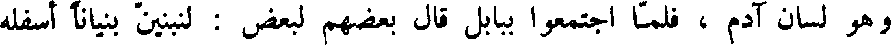
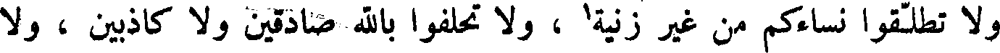
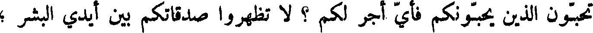
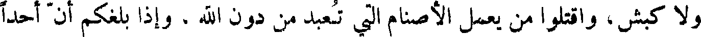
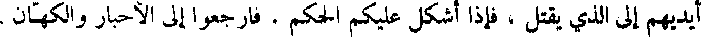

File: 000000.gt.txt (if the image is defective, simply delete all Arabic text and the line will be excluded)

يحفرون ، ولكي تكون ذخائركم عند ربكم الذي في السماء حيث لا سوس
File: 000001.gt.txt (if the image is defective, simply delete all Arabic text and the line will be excluded)

يعدو ولا لص يسرق .
File: 000002.gt.txt (if the image is defective, simply delete all Arabic text and the line will be excluded)

و لا تهتموا بمعاشكم ، و لا ما تأكلون ، ولا ما تشربون ، و لا ما تلبسون ،
File: 000003.gt.txt (if the image is defective, simply delete all Arabic text and the line will be excluded)

وانظروا إلى طير السماء لا يزرعن ، و لا يحصدن ، و لا يجمعن في البيوت
File: 000004.gt.txt (if the image is defective, simply delete all Arabic text and the line will be excluded)

الله يرزقهن ، وأنتم أكرم على الله من الطير .
File: 000005.gt.txt (if the image is defective, simply delete all Arabic text and the line will be excluded)

لا تهتموا لأولادكم ، فانهم مثلكم كما خلقتم خلقوا ، وكما رزقتم رزقوا .
File: 000006.gt.txt (if the image is defective, simply delete all Arabic text and the line will be excluded)

و لا تقل لأخيك اخرج القذى من عينك ، وفي عينك أنت جذع؛ لا تنظروا
File: 000007.gt.txt (if the image is defective, simply delete all Arabic text and the line will be excluded)

في عيوب الناس وتدعوا عيوبكم ؛ لا تعطوا القدس ولا اللؤلؤ للخنازير ،
File: 000008.gt.txt (if the image is defective, simply delete all Arabic text and the line will be excluded)

فتدوسه بأرجلها! سلوا ربكم يعطكم وابتغوا أليه ، فأنكم تجدونه رحيما بكم ،
File: 000009.gt.txt (if the image is defective, simply delete all Arabic text and the line will be excluded)

واقرعوا بابه يفتح لكم ، أما الباب فإنه معرض ، والطريق بين ، وهو يبلغ
File: 000010.gt.txt (if the image is defective, simply delete all Arabic text and the line will be excluded)

الناس التلف ، وما اصغر الباب ، وأضيق الطريق التي تبلغ الناس النجاة .
File: 000011.gt.txt (if the image is defective, simply delete all Arabic text and the line will be excluded)

تحفظوا من أهل الكذب الذين يشبهون الذئاب الضارية ؛ كما لا تستطيعون
File: 000012.gt.txt (if the image is defective, simply delete all Arabic text and the line will be excluded)

وتقطفون العنبة من الشوك ، ولا التين من الحنظل ، هكذا لا تجدون شجرة
File: 000013.gt.txt (if the image is defective, simply delete all Arabic text and the line will be excluded)

سوء تخرج نياتا صالحا ، و لا شجرة صالحة تخرج ثمرة سوء .
File: 000014.gt.txt (if the image is defective, simply delete all Arabic text and the line will be excluded)

كل من يسمع كلامي ثم يفهمه ، فانه يشبه رجلا حليما بنى بيته في
File: 000015.gt.txt (if the image is defective, simply delete all Arabic text and the line will be excluded)

مكان صلب شديد ، فجاء المطر ودرت الأنهار ، وارتفعت الرياح . . .1
File: 000016.gt.txt (if the image is defective, simply delete all Arabic text and the line will be excluded)

فسقط البيت .
File: 000017.gt.txt (if the image is defective, simply delete all Arabic text and the line will be excluded)

وفي ذلك الزمان كان الملك هيرودس قد اخذ يوحنا فسجنه ، وذلك انه كان
File: 000018.gt.txt (if the image is defective, simply delete all Arabic text and the line will be excluded)

يأتي امرأة أخيه فيلفوس ، فنهاه يوحنا أن يأتي ذلك ، وكان يريد أن يقتله ،
File: 000019.gt.txt (if the image is defective, simply delete all Arabic text and the line will be excluded)

ويتقي لأنهم كانوا يعظمون يوحنا ، فقالت له امرأة أخيه : اقتل يوحنا !
File: 000020.gt.txt (if the image is defective, simply delete all Arabic text and the line will be excluded)

فوجه إلى السجن ، فقطع رأس يوحنا ووضعه على طبق ، واقترب تلاميذة ،
File: 000021.gt.txt (if the image is defective, simply delete all Arabic text and the line will be excluded)

واخذوا جثته فقبروها ، وجاءوا المسيح فأخبروه ، فخرج إلى ارض قفز ،
File: 000022.gt.txt (if the image is defective, simply delete all Arabic text and the line will be excluded)

وجعل يأمر أصحابه : لا تخبروا أحدا .
File: 000023.gt.txt (if the image is defective, simply delete all Arabic text and the line will be excluded)

و لا يحل لرجل أن يمس امرأة قد مسها أبوه ، و لا ينظر إلى عورتها ،
File: 000024.gt.txt (if the image is defective, simply delete all Arabic text and the line will be excluded)

و لا يدخل الرجل الجنب مسجدا من مساجد الله ، و لا تأكلوا ربا لفضة
File: 000025.gt.txt (if the image is defective, simply delete all Arabic text and the line will be excluded)

و لا ذهب ، وإذا نذرتم نذرا ، فلا تؤخروا قضاءه ، وأوفوا بالعهد ، إذا
File: 000026.gt.txt (if the image is defective, simply delete all Arabic text and the line will be excluded)

عاهدتم ، و لا تنقضوا العهد ، فان الله يحب من وفى بعهده .
File: 000027.gt.txt (if the image is defective, simply delete all Arabic text and the line will be excluded)

اعتزلوا من كان به برص ، وتباعدوا منه ، و لا تحبسوا اجر الأجير ،
File: 000028.gt.txt (if the image is defective, simply delete all Arabic text and the line will be excluded)

و لا تأخذوا أبا بذنب ابنه ، و لا ابنا بذنب أبيه ، وأدوا زكاة أموالكم وثمراتكم
File: 000029.gt.txt (if the image is defective, simply delete all Arabic text and the line will be excluded)

إلى الحبر قربانا ، وأعطوا الفقراء ، والأرامل ، واليتامى ، والمساكين ، وبني
File: 000030.gt.txt (if the image is defective, simply delete all Arabic text and the line will be excluded)

السبيل .
File: 000031.gt.txt (if the image is defective, simply delete all Arabic text and the line will be excluded)

وإذا دخلتم الأرض الصالحة ، فاعملوا مذبحا للقدس من حجارة مستوية ،
File: 000032.gt.txt (if the image is defective, simply delete all Arabic text and the line will be excluded)

فليقل أحبار بني إسرائيل : ملعون من يضل الأعمى عن الطريق .
File: 000033.gt.txt (if the image is defective, simply delete all Arabic text and the line will be excluded)

ملعون من يحيف في القضاء على المساكين ، واليتيم والأرملة .
File: 000034.gt.txt (if the image is defective, simply delete all Arabic text and the line will be excluded)

ملعون من يضاجع امرأة أبيه .
File: 000035.gt.txt (if the image is defective, simply delete all Arabic text and the line will be excluded)

ملعون من يضاجع دابة .
File: 000036.gt.txt (if the image is defective, simply delete all Arabic text and the line will be excluded)

ملعون من يضاجع أخته وأمه .
File: 000037.gt.txt (if the image is defective, simply delete all Arabic text and the line will be excluded)

ملعون من يضاجع أم امرأته .
File: 000038.gt.txt (if the image is defective, simply delete all Arabic text and the line will be excluded)

ملعون من يأكل لحم أخيه سراً .
File: 000039.gt.txt (if the image is defective, simply delete all Arabic text and the line will be excluded)

ملعون من يأخذ رشوة في قتل نفس زكيه ظلماً .
File: 000040.gt.txt (if the image is defective, simply delete all Arabic text and the line will be excluded)

ملعون كل من لم يعمل بوصية الله .
File: 000041.gt.txt (if the image is defective, simply delete all Arabic text and the line will be excluded)

ثم قال لهم موسى : قد بلغتكم وصايا الله ، وعرفتكم أمره ، فاتبعوا ذلك ،
File: 000042.gt.txt (if the image is defective, simply delete all Arabic text and the line will be excluded)

واعملوا به ، فقد أتت لي مائة وعشرون سنة ، وقد حانت وفاتي ، وهذا يوشع
File: 000043.gt.txt (if the image is defective, simply delete all Arabic text and the line will be excluded)

ابن نون القيم فيكم بعدي ، فاسمعوا له وأطيعواأمره ، فانه يقضي بينكم بالحق ،
File: 000044.gt.txt (if the image is defective, simply delete all Arabic text and the line will be excluded)

وملعون من خالفه وعصاه .
File: 000045.gt.txt (if the image is defective, simply delete all Arabic text and the line will be excluded)

وكانت بين وفاة هارون إلى أن حضرت موسى الوفاة سبعة اشهر ، ثم صعد
File: 000046.gt.txt (if the image is defective, simply delete all Arabic text and the line will be excluded)

موسى إلى جبل نابون ، فنظر إلى الشأم ، وقال الله له : هذه الأرض التي ضمنت
File: 000047.gt.txt (if the image is defective, simply delete all Arabic text and the line will be excluded)

بيت المقدس ، وبنى الهيكل ، وأقام على بنائه ستا وأربعين سنة ، وفي زمانه
File: 000048.gt.txt (if the image is defective, simply delete all Arabic text and the line will be excluded)

مسخ الله بخت نصر بهيمة أنثى ، فلم يزل ينتقل في أجناس البهائم سبع سنين ،
File: 000049.gt.txt (if the image is defective, simply delete all Arabic text and the line will be excluded)

ثم يقال انه تاب إلى الله ، عز وجل ، فأحياه بشراً ، ثم مات .
File: 000050.gt.txt (if the image is defective, simply delete all Arabic text and the line will be excluded)

وكان زربابل الذي اخرج التوراة وكتب الأنبياء من البئر التي دفنها فيها
File: 000051.gt.txt (if the image is defective, simply delete all Arabic text and the line will be excluded)

بخت نصر ، فوجدها بحالها لم تحترق ، فأعاد نسخ التوراة وكتب الأنبياء وسننهم
File: 000052.gt.txt (if the image is defective, simply delete all Arabic text and the line will be excluded)

وشرائعهم ، وكان أول من رسم هذه الكتب .
File: 000053.gt.txt (if the image is defective, simply delete all Arabic text and the line will be excluded)

وكانت شريعة بني إسرائيل توحيد الله ، والإقرار بنبوة موسى وهارون
File: 000054.gt.txt (if the image is defective, simply delete all Arabic text and the line will be excluded)

ابني عمران بن قاهث بن لاوي بن يعقوب بن إسحاق بن إبراهيم خليل الله ،
File: 000055.gt.txt (if the image is defective, simply delete all Arabic text and the line will be excluded)

وكان صيامهم في كل سنة ستة أيام أولها في رأس السنة ، وهم يعدون رأس
File: 000056.gt.txt (if the image is defective, simply delete all Arabic text and the line will be excluded)

السنة أول يوم من تشرين ، فإذا مضى من تشرين عشرة أيام صاموا يوما واحدا ،
File: 000057.gt.txt (if the image is defective, simply delete all Arabic text and the line will be excluded)

وهو اليوم الذي نزلت فيه الألواح الثانية على موسى بن عمران .
File: 000058.gt.txt (if the image is defective, simply delete all Arabic text and the line will be excluded)

ويصومون لعشر خلون من كانون الآخر يوما واحدا ، وهو يوم نجى
File: 000059.gt.txt (if the image is defective, simply delete all Arabic text and the line will be excluded)

الله بني إسرائيل من هامان .
File: 000060.gt.txt (if the image is defective, simply delete all Arabic text and the line will be excluded)

ويصومون لسبعة عشر يوما من تموز يوما واحدا ، وهو اليوم الذي نزل فيه
File: 000061.gt.txt (if the image is defective, simply delete all Arabic text and the line will be excluded)

موسى من الطور .
File: 000062.gt.txt (if the image is defective, simply delete all Arabic text and the line will be excluded)

ويصومون لتسعة أيام من آب يوما واحدا ، وهو اليوم الذي كان فيه خراب
File: 000063.gt.txt (if the image is defective, simply delete all Arabic text and the line will be excluded)

بيت المقدس .
File: 000064.gt.txt (if the image is defective, simply delete all Arabic text and the line will be excluded)

ويصومون لثلاثة أيام من تشرين ، وهو الذي قتل فيه قدريا بن اخيقام .
File: 000065.gt.txt (if the image is defective, simply delete all Arabic text and the line will be excluded)

ولهم أربعة أعياد في السنة : عيد الفطير ، وهو اليوم الذي خرج فيه موسى
File: 000066.gt.txt (if the image is defective, simply delete all Arabic text and the line will be excluded)

ببني إسرائيل من مصر ، فحملوا عجينهم ، ولم يختمر ، فأكلوا فطيرا ، وهو
File: 000067.gt.txt (if the image is defective, simply delete all Arabic text and the line will be excluded)

لخمسة عشر يوما من نيسان ، وأيامه سبعة أيام؛ ثم عيد لستة عشر يوما يمضي
File: 000068.gt.txt (if the image is defective, simply delete all Arabic text and the line will be excluded)

من حزيران ، وهو يوم أنزلت التوراة على موسى ، فذلك يوم عيد عندهم معظم ؛
File: 000069.gt.txt (if the image is defective, simply delete all Arabic text and the line will be excluded)

ثم عيد أول يوم من تشرين ، وهو رأس السنة عندهم ؛ ثم عيد في خمسة عشر
File: 000070.gt.txt (if the image is defective, simply delete all Arabic text and the line will be excluded)

يوما من تشرين ، وهو عيد المظلة ، ومعناها أن الله ، عز وجل ، أمر موسى أن
File: 000071.gt.txt (if the image is defective, simply delete all Arabic text and the line will be excluded)

الأرض ، وأمره أن يعمل السفينة التي نجاه الله وأهله فيها ، وان يجعلها ثلاثة
File: 000072.gt.txt (if the image is defective, simply delete all Arabic text and the line will be excluded)

بيوت سفلا ووسط وعلوا ، وأمره أن يجعل طولها ثلاثمائة ذراع بذراع نوح ،
File: 000073.gt.txt (if the image is defective, simply delete all Arabic text and the line will be excluded)

وعرضها خمسين ذراعا ، وسمكها ثلاثين ذراعا ، ويصير حواليها رفوف
File: 000074.gt.txt (if the image is defective, simply delete all Arabic text and the line will be excluded)

الخشب ، ويكون البيت الأسفل للدواب والوحش والسباع ، ويكون الأوسط
File: 000075.gt.txt (if the image is defective, simply delete all Arabic text and the line will be excluded)

للطير ، ويكون الأعلى لنوح وأهل بيته ، ويجعل في الأعلى صهاريج الماء ، وموضعاً
File: 000076.gt.txt (if the image is defective, simply delete all Arabic text and the line will be excluded)

للطعام . فولد له بعد أن أتت عليه خمسمائة سنة .
File: 000077.gt.txt (if the image is defective, simply delete all Arabic text and the line will be excluded)

ولما فرغ نوح من عمل السفينة ، وكان ولد قابيل ، ومن اختلط بهم من ولد
File: 000078.gt.txt (if the image is defective, simply delete all Arabic text and the line will be excluded)

شيث ، إذا رأوه يعمل الفلك سخروا منه ، فلما فرغ دعاهم إلى الركوب فيها ،
File: 000079.gt.txt (if the image is defective, simply delete all Arabic text and the line will be excluded)

وأعلمهم أن الله باعث الطوفان على الأرض كلها حتى يطهرها من أهل المعاصي
File: 000080.gt.txt (if the image is defective, simply delete all Arabic text and the line will be excluded)

فلم يجبه أحد منهم ، فصعد هو وولده إلى مغارة الكنز ، فاحتملوا جسد آدم ،
File: 000081.gt.txt (if the image is defective, simply delete all Arabic text and the line will be excluded)

فوضعوه في وسط البيت الأعلى من السفينة ، يوم الجمعة لسبع عشرة ليلة خلت
File: 000082.gt.txt (if the image is defective, simply delete all Arabic text and the line will be excluded)

من آذار ، وادخل الطير البيت الأوسط ؛ وادخل الدواب والسباع البيت الأسفل ،
File: 000083.gt.txt (if the image is defective, simply delete all Arabic text and the line will be excluded)

وأطبقها حين غابت الشمس .
File: 000084.gt.txt (if the image is defective, simply delete all Arabic text and the line will be excluded)

و أرسل الله الماء من السماء ، وفجر عيون الأرض ، فالتقى الماء على أمر قد
File: 000085.gt.txt (if the image is defective, simply delete all Arabic text and the line will be excluded)

قدر ، واخذ الأرض كلها والجبال ، وأظلمت الدنيا ، وذهب ضوء الشمس
File: 000086.gt.txt (if the image is defective, simply delete all Arabic text and the line will be excluded)

والقمر ، حتى كان الليل والنهار سواء ، وكان الطالع في ذلك الوقت الذي أرسل
File: 000087.gt.txt (if the image is defective, simply delete all Arabic text and the line will be excluded)

الله تعالى فيه الماء ، فيما يقول أصحاب الحساب : السرطان ، والشمس ، والقمر ،
File: 000088.gt.txt (if the image is defective, simply delete all Arabic text and the line will be excluded)

وزحل ، وعطارد ، والرأس ، مجتمعة في آخر دقيقة من الحوت ، فاتصل الماء من
File: 000089.gt.txt (if the image is defective, simply delete all Arabic text and the line will be excluded)

السماء والأرض أربعين يوما ، حتى علا فوق كل جبل خمس عشرة ذراعا ،
File: 000090.gt.txt (if the image is defective, simply delete all Arabic text and the line will be excluded)

ثم وقف بعد أن لم تبق بقعة من الأرض إلا غمرها الماء وعلاها .
File: 000091.gt.txt (if the image is defective, simply delete all Arabic text and the line will be excluded)

ودارت السفينة الأرض كلها حتى صارت إلى مكة ، فطافت حول البيت
File: 000092.gt.txt (if the image is defective, simply delete all Arabic text and the line will be excluded)

أسبوعاً ، ثم انكشف الماء بعد خمسة اشهر ، فكان ابتداؤه لسبع عشرة ليلة خلت
File: 000093.gt.txt (if the image is defective, simply delete all Arabic text and the line will be excluded)

من أيار إلى ثلاث عشرة ليلة خلت من تشرين أول .
File: 000094.gt.txt (if the image is defective, simply delete all Arabic text and the line will be excluded)

وروى بعضهم أن نوحاً ركب السفينة أول يوم من رجب ، واستوت على
File: 000095.gt.txt (if the image is defective, simply delete all Arabic text and the line will be excluded)

شيث بن آدم
File: 000096.gt.txt (if the image is defective, simply delete all Arabic text and the line will be excluded)

وقام بعد موت آدم ابنه شيث وكان يأمر قومه بتقوى الله سبحانه
File: 000097.gt.txt (if the image is defective, simply delete all Arabic text and the line will be excluded)

والعمل الصالح ، وكانوا يسبحون الله ويقدسونه ، وأبناؤهم ونساؤهم ليس
File: 000098.gt.txt (if the image is defective, simply delete all Arabic text and the line will be excluded)

بينهم عداوة ، ولا تحاسد ، ولا تباغض ، ولا تهمة ، ولا كذب ، ولا خلف ،
File: 000099.gt.txt (if the image is defective, simply delete all Arabic text and the line will be excluded)

وكان أحدهم إذا أراد أن يحلف قال : لا ودم هابيل .
File: 000100.gt.txt (if the image is defective, simply delete all Arabic text and the line will be excluded)

فلما حضرت وفاة شيث أتاه بنوه وبنو بنيه ، وهم يومئذ أنوش ، و قينان ،
File: 000101.gt.txt (if the image is defective, simply delete all Arabic text and the line will be excluded)

و مهلائيل ويرد ، واخنوخ ، ونساؤهم وأبناؤهم ، فصلى عليهم ، ودعا لهم
File: 000102.gt.txt (if the image is defective, simply delete all Arabic text and the line will be excluded)

بالبركة ، وتقدم إليهم ، وحلفهم بدم هابيل ألا يهبط أحد منهم من هذا الجبل
File: 000103.gt.txt (if the image is defective, simply delete all Arabic text and the line will be excluded)

المقدس ، و لا يتركوا أحدا من أولادهم يهبط منه . و لا يختلطوا بأولاد قابيل
File: 000104.gt.txt (if the image is defective, simply delete all Arabic text and the line will be excluded)

الملعون ، وأوصى إلى انوش ابنه ، وأمره أن يحتفظ في بجسد آدم ، وأن يتقي الله ،
File: 000105.gt.txt (if the image is defective, simply delete all Arabic text and the line will be excluded)

ويأمر قومه بتقوي الله وحسن العبادة ، ثم توفي يوم الثلاثاء لسبع وعشرين ليلة
File: 000106.gt.txt (if the image is defective, simply delete all Arabic text and the line will be excluded)

خلت من آب على ثلاث ساعات من النهار ، وكانت حياته تسعمائة وأثنتي عشرة
File: 000107.gt.txt (if the image is defective, simply delete all Arabic text and the line will be excluded)

انوش بن شيث
File: 000108.gt.txt (if the image is defective, simply delete all Arabic text and the line will be excluded)

سنة .
File: 000109.gt.txt (if the image is defective, simply delete all Arabic text and the line will be excluded)

وقام انوش بن شيث ، بعد أبيه ، بحفظ وصية أبيه وجده . وأحسن عبادة
File: 000110.gt.txt (if the image is defective, simply delete all Arabic text and the line will be excluded)

الله ، وأمر قومه بحسن العبادة ، وفي أيامه قتل قابيل الملعون ، رماه لمك الأعمى
File: 000111.gt.txt (if the image is defective, simply delete all Arabic text and the line will be excluded)

بحجر ، فشدخ رأسه ، فمات. وكان قد ولد لأنوش قينان بعد أن أتت له تسعون سنة.
File: 000112.gt.txt (if the image is defective, simply delete all Arabic text and the line will be excluded)

الأصنام ، وكان ملكه خمسا وخمسين سنة ، وأيام أسره عشرين سنه .
File: 000113.gt.txt (if the image is defective, simply delete all Arabic text and the line will be excluded)

ثم ملك امون بن منشا ، فأعاد الأصنام حتى كثرت ، وكان ملكه ست
File: 000114.gt.txt (if the image is defective, simply delete all Arabic text and the line will be excluded)

عشرة سنة .
File: 000115.gt.txt (if the image is defective, simply delete all Arabic text and the line will be excluded)

ثم ملك بعده يوشيا ابنه ، فأحسن عبادة الله ، تعالى وكسر الأصنام ، وهدم بيوتها
File: 000116.gt.txt (if the image is defective, simply delete all Arabic text and the line will be excluded)

وقتل سدنتها واحرقهم ، وكان في العدل وحسن عبادة الله وجميل مذهبه
File: 000117.gt.txt (if the image is defective, simply delete all Arabic text and the line will be excluded)

يشبه داود وسليمان ، وكان ملكه ثلاثين سنة .
File: 000118.gt.txt (if the image is defective, simply delete all Arabic text and the line will be excluded)

ثم ملك يهواخز ابنه ثلاثة أشهر ، ثم أسره فرعون الأعرج ملك مصر ،
File: 000119.gt.txt (if the image is defective, simply delete all Arabic text and the line will be excluded)

ووضع على بلاده الخراج ، وصير عليها ملكا من قبله ، وأخذ يهواخز ، فذهب
File: 000120.gt.txt (if the image is defective, simply delete all Arabic text and the line will be excluded)

به إلي مصر فمات هناك .
File: 000121.gt.txt (if the image is defective, simply delete all Arabic text and the line will be excluded)

ثم ملك بعده يوقيم أخوه ، وهو أبو دانيال النبي ، وفي عصره سار بخت
File: 000122.gt.txt (if the image is defective, simply delete all Arabic text and the line will be excluded)

نصر ملك بابل ألي بيت المقدس ، فقتل في بني إسرائيل ، وسباهم ، وحملهم
File: 000123.gt.txt (if the image is defective, simply delete all Arabic text and the line will be excluded)

إلى أرض بابل ، ثم صار إلى أرض مصر ، فقتل فرعون الأعرج ملكها .
File: 000124.gt.txt (if the image is defective, simply delete all Arabic text and the line will be excluded)

وأخذ بخت نصر التوراة ، وما كان في الهيكل من كتب الأنبياء ، فصيرها
File: 000125.gt.txt (if the image is defective, simply delete all Arabic text and the line will be excluded)

في بئر وطرح عليها النار ، وكبسها . وكان في ذلك العصر ارميا النبي ، فلما
File: 000126.gt.txt (if the image is defective, simply delete all Arabic text and the line will be excluded)

علم بقدوم بخت نصر ، أخذ تابوت السكينة ، فخبأه في مغارة حيث لم يعلم به
File: 000127.gt.txt (if the image is defective, simply delete all Arabic text and the line will be excluded)

أحد ، ولم ينج من بخت نصر إلا أرميا .
File: 000128.gt.txt (if the image is defective, simply delete all Arabic text and the line will be excluded)

وكان عدة من حمل بخت نصر إلى أرض بابل ثمانية عشر ألفاً ، فيهم
File: 000129.gt.txt (if the image is defective, simply delete all Arabic text and the line will be excluded)

ألف نبي ، وملكهم يحينا بن بأن يهوياقيم ، فمنهم اليهود الذين بالعراق ، ويقال
File: 000130.gt.txt (if the image is defective, simply delete all Arabic text and the line will be excluded)

إن ارميا النبي قال : اللهم ! إني لأعلم من عدلك ما لا يعلمه غيري ، فعلام
File: 000131.gt.txt (if the image is defective, simply delete all Arabic text and the line will be excluded)

سلطت بخت نصر على بني إسرائيل ؟ فأوحى الله أليه : أني إنما انتقم من عبادي ،
File: 000132.gt.txt (if the image is defective, simply delete all Arabic text and the line will be excluded)

إذا عصوني ، بشرار خلقي .
File: 000133.gt.txt (if the image is defective, simply delete all Arabic text and the line will be excluded)

ولم يزل بنو إسرائيل في الأسر تحت يد بخت نصر حتى تزوج امرأة منهم
File: 000134.gt.txt (if the image is defective, simply delete all Arabic text and the line will be excluded)

يقال لها ملحات زربابل ، بنت سلتائيل ، فسألته إن يرد قومها إلى بلدهم ،
File: 000135.gt.txt (if the image is defective, simply delete all Arabic text and the line will be excluded)

فلما رجع بنو إسرائيل إلى بلدهم ملكوا عليهم زربالبل بن سلتائيل ، فبنى مدينة
File: 000136.gt.txt (if the image is defective, simply delete all Arabic text and the line will be excluded)

الترك والخزر ، وولد ماشج الاشبان ، وولد مأجوج يأجوج ومأجوج ، وهم
File: 000137.gt.txt (if the image is defective, simply delete all Arabic text and the line will be excluded)

في شرقي الأرض من جهة الترك ، وكانت منازل الصقالبة وبرجان أرض الروم ،
File: 000138.gt.txt (if the image is defective, simply delete all Arabic text and the line will be excluded)

قبل أن يكون الروم ، فهؤلاء ولد يافث .
File: 000139.gt.txt (if the image is defective, simply delete all Arabic text and the line will be excluded)

وعاش نوح ، بعد خروجه من السفينة ، ثلاثمائة وستين سنة ، ولما حضرت
File: 000140.gt.txt (if the image is defective, simply delete all Arabic text and the line will be excluded)

وفاة نوح اجتمع إليه بنوه الثلاثة سام وحام ويافث وبنوهم ، فأوصاهم ، وأمرهم
File: 000141.gt.txt (if the image is defective, simply delete all Arabic text and the line will be excluded)

بعبادة الله تعالى ، وأمر ساماً أن يدخل السفينة ، إذا مات ، و لا يشعر به أحد ،
File: 000142.gt.txt (if the image is defective, simply delete all Arabic text and the line will be excluded)

فيستخرج جسد آدم ، ويذهب معه بملكيز دق بن لمك بن سام ، فإن الله اختاره
File: 000143.gt.txt (if the image is defective, simply delete all Arabic text and the line will be excluded)

ليكون مع جسد آدم في وسط الأرض في المكان المقدس وقال له يا سام !
File: 000144.gt.txt (if the image is defective, simply delete all Arabic text and the line will be excluded)

انك إذا خرجت أنت وملكيز دق بعث الله معكما ملكا من الملائكة يدلكما على
File: 000145.gt.txt (if the image is defective, simply delete all Arabic text and the line will be excluded)

الطريق ، ويريكما وسط الأرض ، ولا تعلمن أحدا ما تصنع ، فإن هذا الأمر
File: 000146.gt.txt (if the image is defective, simply delete all Arabic text and the line will be excluded)

وصية آدم التي أوصى بها بنيه ، وأوصى بها بعضهم بعضا ، حتى انتهى ذلك
File: 000147.gt.txt (if the image is defective, simply delete all Arabic text and the line will be excluded)

إليك ، فإذا بلغتما المكان الذي يريكما الملك ، فضع فيه جسد آدم ، ثم مر
File: 000148.gt.txt (if the image is defective, simply delete all Arabic text and the line will be excluded)

ملكيز دق ألا يفارقه ، ولا يكون له عمل إلا عبادة الله ، سبحانه وتعالى ، وأمره
File: 000149.gt.txt (if the image is defective, simply delete all Arabic text and the line will be excluded)

أن لا ينكح امرأة ، ولا يبني بنيانا ، ولا يهريق دما ، ولا يلبس ثوبا ، إلا من
File: 000150.gt.txt (if the image is defective, simply delete all Arabic text and the line will be excluded)

جلود الوحوش ، ولا يقص شعرا ولا ظفرا ، وليجلس وحده ، وليكثر حمد الله ،
File: 000151.gt.txt (if the image is defective, simply delete all Arabic text and the line will be excluded)

ثم مات في أيار يوم الأربعاء ، وكانت حياته تسعمائة سنة وخمسين ، كما حكى الله
File: 000152.gt.txt (if the image is defective, simply delete all Arabic text and the line will be excluded)

تعالى ألف سنة إلا خمسين عاما .
File: 000153.gt.txt (if the image is defective, simply delete all Arabic text and the line will be excluded)

وتفرقوا على اثنتين وسبعين فرقة من موضعهم ذلك ، فكان في ولد سام تسع
File: 000154.gt.txt (if the image is defective, simply delete all Arabic text and the line will be excluded)

عشر لسانا ، وفي ولود حام ست عشرة لسانا ، وفي ولد يافث سبعة وثلاثون لسانا ؛
File: 000155.gt.txt (if the image is defective, simply delete all Arabic text and the line will be excluded)

فلما رأوا ما هم فيه اجتمعوا إلى فالغ بن عابر فقال لهم : انه لا يسعكم أرض
File: 000156.gt.txt (if the image is defective, simply delete all Arabic text and the line will be excluded)

واحدة مع افتراق ألسنتكم ، فقالوا : اقسموا الأرض بيننا ، فقسم لهم فصار
File: 000157.gt.txt (if the image is defective, simply delete all Arabic text and the line will be excluded)

لولد يافث بن نوح الصين والهند والسند والترك والخزر والتبت والبلغر والديلم
File: 000158.gt.txt (if the image is defective, simply delete all Arabic text and the line will be excluded)

وما والى ارض خرا سان ، وكان ملك بني يافث في ذلك الزمان جم شاذ .
File: 000159.gt.txt (if the image is defective, simply delete all Arabic text and the line will be excluded)

وصار لولد حام أرض المغرب وما وراء الفرات إلى مسقط الشمس .
File: 000160.gt.txt (if the image is defective, simply delete all Arabic text and the line will be excluded)

وصار لولد سام الحجاز واليمن وباقي الأرض .
File: 000161.gt.txt (if the image is defective, simply delete all Arabic text and the line will be excluded)

وكان قد ولد له ارغو بعد أن أتت عليه ثلاثون سنة ، وحضرت فالغ الوفاة ،
File: 000162.gt.txt (if the image is defective, simply delete all Arabic text and the line will be excluded)

فأوصى إلى ابنه ارغو ، ومات فالغ يوم الجمعة لاثنتي عشرة ليلة خلت من أيلول ،
File: 000163.gt.txt (if the image is defective, simply delete all Arabic text and the line will be excluded)

وكانت حياته مائتي سنة وتسعا وثلاثين سنة .
File: 000164.gt.txt (if the image is defective, simply delete all Arabic text and the line will be excluded)

ارغو بن فالغ
File: 000165.gt.txt (if the image is defective, simply delete all Arabic text and the line will be excluded)

ثم قال ارغو بن فالغ بعد أبيه ، وقد تفرقت الألسن على اثنتين وسبعين فرقة ،
File: 000166.gt.txt (if the image is defective, simply delete all Arabic text and the line will be excluded)

لبني سام تسعة عشرة فرقة ، ولود حام ست عشرة فرقة ، ولولد يافث سبع
File: 000167.gt.txt (if the image is defective, simply delete all Arabic text and the line will be excluded)

وثلاثون ، وكان في زمانه نمرود الجبار ، وكان مسكنه ببابل ، وكان الذي ابتدأ
File: 000168.gt.txt (if the image is defective, simply delete all Arabic text and the line will be excluded)

بناء الصرح ، وأول من عمل التاج ، وملك سبعا وستين سنة .
File: 000169.gt.txt (if the image is defective, simply delete all Arabic text and the line will be excluded)

وكان قد ولد لارغو ساروغ ، بعد أن أتت عليه اثنتان وثلاثون سنة ، ولما
File: 000170.gt.txt (if the image is defective, simply delete all Arabic text and the line will be excluded)

أتت لأرغو أربع وسبعون سنة من عمره كمل الألف الثالث .
File: 000171.gt.txt (if the image is defective, simply delete all Arabic text and the line will be excluded)

وحضرت أرغو الوفاة ، فأوصى ابنه ساروغ ، وتوفي أرغو يوم الأربعاء
File: 000172.gt.txt (if the image is defective, simply delete all Arabic text and the line will be excluded)

لأربع عشرة ليلة خلت من نيسان ، وكانت حياته مائتي سنة .
File: 000173.gt.txt (if the image is defective, simply delete all Arabic text and the line will be excluded)

رحبعم بن سليمان والملوك بعده
File: 000174.gt.txt (if the image is defective, simply delete all Arabic text and the line will be excluded)

ولما مات سليمان بن داود ملك رحبعم بن سليمان ، فاجتمع إليه أسباط
File: 000175.gt.txt (if the image is defective, simply delete all Arabic text and the line will be excluded)

بني إسرائيل ، وقالوا له : إن أباك قد كان غلظ علينا ، واستعبدنا استعبادا
File: 000176.gt.txt (if the image is defective, simply delete all Arabic text and the line will be excluded)

شديدا ، فخفف أنت الآن عنا ! فقال لهم رحبعم : انصرفوا عني اليوم وجيئوني
File: 000177.gt.txt (if the image is defective, simply delete all Arabic text and the line will be excluded)

بعد ثلاثة أيام ، فانصرفوا عنه ،فاستشار المشيخة من أصحاب أبيه ، فقال : ما
File: 000178.gt.txt (if the image is defective, simply delete all Arabic text and the line will be excluded)

فقالوا له : نرى أن تغلظ القول لهم ليستقيم لك أمرهم ، كما استقام لأبيك .
File: 000179.gt.txt (if the image is defective, simply delete all Arabic text and the line will be excluded)

فلما كان اليوم الثالث اجتمعوا إليه ليسألوه عما ذكروا له ، فقال لهم :
File: 000180.gt.txt (if the image is defective, simply delete all Arabic text and the line will be excluded)

إن خنصري اثقل من إبهام أبى . فلما قال لهم هذا انصرفوا عنه ، وتفرقوا في
File: 000181.gt.txt (if the image is defective, simply delete all Arabic text and the line will be excluded)

قراهم ، فلم يبق معه من أسباط بني إسرائيل إلا سبط يهوذا وسبط بنيامين .
File: 000182.gt.txt (if the image is defective, simply delete all Arabic text and the line will be excluded)

وملكت الأسباط العشرة عليهم يوربعم بن ناباط ، وكان قد هرب من سليمان
File: 000183.gt.txt (if the image is defective, simply delete all Arabic text and the line will be excluded)

إلي مصر ، فلما اختلفت بنو إسرائيل على رحبعم بن سليمان قدم ، وجمع رحبعم
File: 000184.gt.txt (if the image is defective, simply delete all Arabic text and the line will be excluded)

بن سليمان من سبط يهوذا ، وسبط بنيامين ، ألف رجل يطلب محاربة يوربعم
File: 000185.gt.txt (if the image is defective, simply delete all Arabic text and the line will be excluded)

ابن ناباط ومن معه .
File: 000186.gt.txt (if the image is defective, simply delete all Arabic text and the line will be excluded)

وأوحى الله إلى سمعيا النبي أن قل لرحبعم ومن معه : لا تحاربوا بني
File: 000187.gt.txt (if the image is defective, simply delete all Arabic text and the line will be excluded)

إسرائيل ! فسمعوا قوله ، وانصرفوا ، وكان ملك رحبعم سبع عشرة سنة .
File: 000188.gt.txt (if the image is defective, simply delete all Arabic text and the line will be excluded)

وملك يوربعم بن ناباط على العشرة الأسباط من جبل فاران ، فقالت بنو
File: 000189.gt.txt (if the image is defective, simply delete all Arabic text and the line will be excluded)

إسرائيل : إنا نريد أن نقرب قرابيننا إلي الله ، فكره يوربعم أن يصعدوا إلي
File: 000190.gt.txt (if the image is defective, simply delete all Arabic text and the line will be excluded)

بيت المقدس ، فسيتميلهم يلهم آل يهوذا ، فيدخلوا في ملكهم ، فقال : ليست
File: 000191.gt.txt (if the image is defective, simply delete all Arabic text and the line will be excluded)

بكم حاجة ألي الصعود ، وأنا اعمل لكم مذبحا ، فعمل لهم مذبحا ، وصير فيه
File: 000192.gt.txt (if the image is defective, simply delete all Arabic text and the line will be excluded)

أنا ابرز إليه ! فقال لداود انطلق ، والرب يكون معك ! فأخذ عصا وخمسة
File: 000193.gt.txt (if the image is defective, simply delete all Arabic text and the line will be excluded)

أحجار ، وخرج إلى غلياث ، فلما رآه احتقره ، فقال له : إلى كلب خرجت
File: 000194.gt.txt (if the image is defective, simply delete all Arabic text and the line will be excluded)

بعصا وحجر ؟ فقال له : إلى اشد من الكلب ، ثم اخذ حجرا من مخلاته
File: 000195.gt.txt (if the image is defective, simply delete all Arabic text and the line will be excluded)

ورماه به حتى غاب الحجر في جبهة جالوت ، وسقط ، فسعى إليه داود ، فأخذ
File: 000196.gt.txt (if the image is defective, simply delete all Arabic text and the line will be excluded)

سيفه ، وحز رأسه ، واخذ راجعا ، فانهزم عسكر غلياث ، واشتد سرور بني
File: 000197.gt.txt (if the image is defective, simply delete all Arabic text and the line will be excluded)

يهوذا ، فاغتم شاول وحسد داود ، فطرده عنه ، وصيره رئيسا على ألف ، ونفاه
File: 000198.gt.txt (if the image is defective, simply delete all Arabic text and the line will be excluded)

بمكان بني يهوذا ، وتزوج ميخل بنت شاول .
File: 000199.gt.txt (if the image is defective, simply delete all Arabic text and the line will be excluded)

وكان شاول يريد قتل داود ، فكان يوجهه يقاتل الحنفاء عبدة النجوم ،
File: 000200.gt.txt (if the image is defective, simply delete all Arabic text and the line will be excluded)

فيفتح الله عليه ، فهم أن يقتله بغير حيلة ، فهرب داود ، فجاء إلى شمويل النبي ،
File: 000201.gt.txt (if the image is defective, simply delete all Arabic text and the line will be excluded)

فخبره بخبر شاول ، ولم يزل شاول يحاول قتل داود حتى هرب ، فمر باخيش
File: 000202.gt.txt (if the image is defective, simply delete all Arabic text and the line will be excluded)

ملك جات ، فلما رآه عرفه ، فتحيل عليه داود حتى أطلقه ، فصار إلى سارع ، فنزلها.
File: 000203.gt.txt (if the image is defective, simply delete all Arabic text and the line will be excluded)

ولما علم شاول انه قد فاته قتل الكهنة الذين كانوا يقدسون ، وقال : قد
File: 000204.gt.txt (if the image is defective, simply delete all Arabic text and the line will be excluded)

علمتم به ولم تخبروني ، ثم خرج شاول في طلب داود ، حتى أدركه ، فدخل
File: 000205.gt.txt (if the image is defective, simply delete all Arabic text and the line will be excluded)

داود مغارة ، فلما صار شاول عند المغارة نزل لحاجته ، فدخل المغارة ، وهو
File: 000206.gt.txt (if the image is defective, simply delete all Arabic text and the line will be excluded)

لا يعلم أن داود فيها ، فقام داود ، فتوارى ، فقال له أصحابه : يا داود اقتله !
File: 000207.gt.txt (if the image is defective, simply delete all Arabic text and the line will be excluded)

فقد أمكنك الله منه . قال : ما كنت لأفعل .
File: 000208.gt.txt (if the image is defective, simply delete all Arabic text and the line will be excluded)

وتوفي شمويل النبي ، فاجتمعت بني إسرائيل ، واعظموا ذلك ، وناحوا
File: 000209.gt.txt (if the image is defective, simply delete all Arabic text and the line will be excluded)

عليه ثلاثين يوما .
File: 000210.gt.txt (if the image is defective, simply delete all Arabic text and the line will be excluded)

وخرج شاول يقاتل الحنفاء ، والتحم القتال بينهم ، فهزموا بني إسرائيل ،
File: 000211.gt.txt (if the image is defective, simply delete all Arabic text and the line will be excluded)

وقتل منهم خلق عظيم ، وكان داود بن ايشا يقاتل العماليق مع قومه من ولد
File: 000212.gt.txt (if the image is defective, simply delete all Arabic text and the line will be excluded)

يهوذا ، فلما انهزم عن شاول جميع بني إسرائيل ، قام هو وولده يحارب ، ثم
File: 000213.gt.txt (if the image is defective, simply delete all Arabic text and the line will be excluded)

قال لصاحبه الذي يحمل سلاحه : خذ سيفك فاقتلني به لئلا يقتلني هؤلاء القلف،
File: 000214.gt.txt (if the image is defective, simply delete all Arabic text and the line will be excluded)

ويلعبوا بي، فلم يفعل، فأخذ شاول سيفه، فأقامه ، ثم ألقى نفسه عليه ، فمات ،
File: 000215.gt.txt (if the image is defective, simply delete all Arabic text and the line will be excluded)

و قتل أولاده الثلاثة ، وكان ملك شاول أربعين سنة .
File: 000216.gt.txt (if the image is defective, simply delete all Arabic text and the line will be excluded)

إذ قال له بعض الصيادين : تعال يا مجنون ، فخذ هذا الحوت ! فأعطاه حوتا قد
File: 000217.gt.txt (if the image is defective, simply delete all Arabic text and the line will be excluded)

تغيرت رائحته ، فصار به إلى البحر ، فغسله ، وشق بطنه ، وإذا في داخله حوت
File: 000218.gt.txt (if the image is defective, simply delete all Arabic text and the line will be excluded)

آخر ، فشق بطن الحوت الآخر ، فإذا خاتمه في جوفه ، فلبسه ، وحمد الله ،
File: 000219.gt.txt (if the image is defective, simply delete all Arabic text and the line will be excluded)

ورد الله عليه ملكه .
File: 000220.gt.txt (if the image is defective, simply delete all Arabic text and the line will be excluded)

وأقام ملكا على بني إسرائيل ، وعلى ما وصف الله ، جل وعز ، من ملكه ،
File: 000221.gt.txt (if the image is defective, simply delete all Arabic text and the line will be excluded)

و تسخيره له الطير والجن والإنس يعملون له أعاجيب الصنعة ، ويشيدون له
File: 000222.gt.txt (if the image is defective, simply delete all Arabic text and the line will be excluded)

البنيان ، ويطيعونه في كل أمره ، أربعين سنة ، ثم توفي ، ودفن إلى جانب قبر
File: 000223.gt.txt (if the image is defective, simply delete all Arabic text and the line will be excluded)

داود ؛ وكان لسليمان يوم ملك اثنتا عشرة سنة ، فمات وله اثنتان وخمسون سنة .
File: 000224.gt.txt (if the image is defective, simply delete all Arabic text and the line will be excluded)

ثم دخل ، فقال لفرعون : أنا رسول رب العالمين ، بكثني إليك لتؤمن به ،
File: 000225.gt.txt (if the image is defective, simply delete all Arabic text and the line will be excluded)

وتبعث معي بني إسرائيل . فأعظم فرعون ذلك ، فقال له : إيت بآية نعلم بها
File: 000226.gt.txt (if the image is defective, simply delete all Arabic text and the line will be excluded)

صدقك ! فألقى عصاه ، فإذا هي ثعبان عظيم قد فتح فاه ، وأهوى نحو فرعون ،
File: 000227.gt.txt (if the image is defective, simply delete all Arabic text and the line will be excluded)

فسأل موسى أن ينحيه عنه ، ثم أدخل يده في جيبه وأخرجها بيضاء من غير
File: 000228.gt.txt (if the image is defective, simply delete all Arabic text and the line will be excluded)

سوء برص .
File: 000229.gt.txt (if the image is defective, simply delete all Arabic text and the line will be excluded)

وكان فرعون أراد أن يصدقه ، فقال له هامان : أما في عبيدك أيها الملك ،
File: 000230.gt.txt (if the image is defective, simply delete all Arabic text and the line will be excluded)

من يعمل مثل هذا ؟ فأحضر السحرة من جميع البلاد ، وخبروا بخبر موسى ،
File: 000231.gt.txt (if the image is defective, simply delete all Arabic text and the line will be excluded)

فأقاموا حينا يعملون من جلود البقر حبالا مجوفة وعصيا مجوفة ، ويزوقونها ،
File: 000232.gt.txt (if the image is defective, simply delete all Arabic text and the line will be excluded)

ويصيرون فيها الزيبق ، ثم احموا المواضع التي أرادوا أن يلقوا فيها الحبال
File: 000233.gt.txt (if the image is defective, simply delete all Arabic text and the line will be excluded)

والعصي ، ثم جلس فرعون ، واحضره ، فألقى السحرة حبالهم وعصيتهم ،
File: 000234.gt.txt (if the image is defective, simply delete all Arabic text and the line will be excluded)

فلما حمي الزئبق تحرك ، ومشت الحبال والعصي ، فألقى موسى عصاه ، فأكلت
File: 000235.gt.txt (if the image is defective, simply delete all Arabic text and the line will be excluded)

ذلك كله ، حتى لم يبقى منه شيء ، ونكص السحرة ، فقتل فرعون من قتل منهم .
File: 000236.gt.txt (if the image is defective, simply delete all Arabic text and the line will be excluded)

وبعث الله موسى بآيات إلى فرعون : العصا ، ثم اليد التي خرجت من
File: 000237.gt.txt (if the image is defective, simply delete all Arabic text and the line will be excluded)

جيبه بيضاء ، ثم الجراد ، ثم القمل ، ثم الضفادع ، ثم الدم وموت الأبكار ،
File: 000238.gt.txt (if the image is defective, simply delete all Arabic text and the line will be excluded)

فلما اتصل بهم هذا قال له فرعون : إن كشفت عنا الرجز آمنا أخرجنا معك
File: 000239.gt.txt (if the image is defective, simply delete all Arabic text and the line will be excluded)

بني إسرائيل . فكشف الله عنهم ، ولم يؤمنوا .
File: 000240.gt.txt (if the image is defective, simply delete all Arabic text and the line will be excluded)

وأمر الله موسى أن يخرج بني إسرائيل فلما أرادوا الخروج طلب جسد
File: 000241.gt.txt (if the image is defective, simply delete all Arabic text and the line will be excluded)

يوسف بن يعقوب ليحمله معه ، كما أوصى يوسف بني إسرائيل ، فاتته شارح
File: 000242.gt.txt (if the image is defective, simply delete all Arabic text and the line will be excluded)

بنت آشر بن يعقوب ، فقالت : تضمن لي البقاء حتى أدلك عليه ؟ حتى ضمن ذلك
File: 000243.gt.txt (if the image is defective, simply delete all Arabic text and the line will be excluded)

لها فصارت به إلى موضع من النيل ، فقالت له: هو ها هنا ! فأخذ موسى أربع
File: 000244.gt.txt (if the image is defective, simply delete all Arabic text and the line will be excluded)

صفائح ذهب ، فصور في واحدة صور نسر ، وأخرى صورة سبع ، وأخرى
File: 000245.gt.txt (if the image is defective, simply delete all Arabic text and the line will be excluded)

صورة إنسان ، وأخرى صورة ثور ، وكتب في كل صفيحة اسم الله الأعظم ،
File: 000246.gt.txt (if the image is defective, simply delete all Arabic text and the line will be excluded)

وألقاها في الماء ، فطفا تابوت الحجارة الذي كان فيه جسد يوسف ، وبقيت
File: 000247.gt.txt (if the image is defective, simply delete all Arabic text and the line will be excluded)

في يد موسى صفيحة واحدة فيها صورة ثور ، فوهبها لشارح بنت آشر ،
File: 000248.gt.txt (if the image is defective, simply delete all Arabic text and the line will be excluded)

لهم ، وقال لكل واحد منهم قولا ، وأعطى ليوسف سيفه وقوسه .
File: 000249.gt.txt (if the image is defective, simply delete all Arabic text and the line will be excluded)

وقرب إليه يوسف ابنيه منشى وافرائيم ، فصير منشى عن يمينه وافرائيم
File: 000250.gt.txt (if the image is defective, simply delete all Arabic text and the line will be excluded)

عن شماله ، لأن منشى كان اكبر ، فقلب يده اليمنى على افرائيم ، واصى
File: 000251.gt.txt (if the image is defective, simply delete all Arabic text and the line will be excluded)

يوسف أن يحمله ويدفنه إلى جنب قبر إبراهيم وإسحاق .
File: 000252.gt.txt (if the image is defective, simply delete all Arabic text and the line will be excluded)

ولما توفي يعقوب قاموا يبكون عليه سبعين يوما ، ثم حمله يوسف ، واخرج
File: 000253.gt.txt (if the image is defective, simply delete all Arabic text and the line will be excluded)

معه غلمانا من أهل مصر ، وصار به إلى ارض فلسطين ، فدفنه إلى جنب قبر
File: 000254.gt.txt (if the image is defective, simply delete all Arabic text and the line will be excluded)

إبراهيم وإسحاق .
File: 000255.gt.txt (if the image is defective, simply delete all Arabic text and the line will be excluded)

ولما فرغوا من دفن يعقوب قال لاخوته : ارجعوا معي إلى ارض مصر !
File: 000256.gt.txt (if the image is defective, simply delete all Arabic text and the line will be excluded)

فخافوه ، فقالوا له : قد أوصاك أبوك يعقوب أن تغفر خطيئتنا . قال : لا تخشوني !
File: 000257.gt.txt (if the image is defective, simply delete all Arabic text and the line will be excluded)

فأني أخشى الله . فاطمأنت قلوبهم ، فرجعوا إلى أرض مصر ، فألقموا بها .
File: 000258.gt.txt (if the image is defective, simply delete all Arabic text and the line will be excluded)

وعاش يوسف بمصر دهرا ، ثم حضرته الوفاة ، فجمع بني إسرائيل ،
File: 000259.gt.txt (if the image is defective, simply delete all Arabic text and the line will be excluded)

وقال : أنكم تخرجون بعد حين من ارض مصر ، إذا بعث الله رجلا يقال له
File: 000260.gt.txt (if the image is defective, simply delete all Arabic text and the line will be excluded)

موسى بن عمران من ولد لاوي بن يعقوب ، وسيذكركم الله ، ويرفعكم ،
File: 000261.gt.txt (if the image is defective, simply delete all Arabic text and the line will be excluded)

فأخرجوا بدني من هذه الأرض ، حتى تدفنوني عند قبور آبائي .
File: 000262.gt.txt (if the image is defective, simply delete all Arabic text and the line will be excluded)

ومات يوسف وله مائة وعشر سنين ، فصير في تابوت حجارة ، وصير
File: 000263.gt.txt (if the image is defective, simply delete all Arabic text and the line will be excluded)

في النيل .
File: 000264.gt.txt (if the image is defective, simply delete all Arabic text and the line will be excluded)

وكان في ذلك العصر أيوب النبي ابن اموص بن زارح بن رعوئيل بن عيصو
File: 000265.gt.txt (if the image is defective, simply delete all Arabic text and the line will be excluded)

ابن إسحاق بن إبراهيم ، وكان كثير المال ، فابتلاه الله تعالى بخطيئة أخطأها ،
File: 000266.gt.txt (if the image is defective, simply delete all Arabic text and the line will be excluded)

فشكر الله وصبر ، ثم رفع الله عنه البلاء ، ورد إليه ماله وأضعف له .
File: 000267.gt.txt (if the image is defective, simply delete all Arabic text and the line will be excluded)

ففعلت هذا ، فلأنتقمن منك بشر ولدك ، ولأ سلطنه عليك وعلى نسائك !
File: 000268.gt.txt (if the image is defective, simply delete all Arabic text and the line will be excluded)

فعظم ذلك على داود ، فقال له ناتان : أن الله قد تجاوز عن سبيلك ، فلن تموت ،
File: 000269.gt.txt (if the image is defective, simply delete all Arabic text and the line will be excluded)

ولكنه ينتقم منك بشر بنيك ، وأعلمه الله أن ولده الذي ولدته المرأة يموت ،
File: 000270.gt.txt (if the image is defective, simply delete all Arabic text and the line will be excluded)

فجزع داود ، واشتد جزعه ، واشتكى الصبي ، فلما اشتدت علته صام وقام
File: 000271.gt.txt (if the image is defective, simply delete all Arabic text and the line will be excluded)

ليصلي ويبكي ، ويتمرغ بالشعر على الأرض ، فلما توفي الصبي اعظم خول
File: 000272.gt.txt (if the image is defective, simply delete all Arabic text and the line will be excluded)

داود أن يخبروه ، بذلك حتى سمع بوشوشتهم ، فعلم ، فغسل وجهه ، ولبس
File: 000273.gt.txt (if the image is defective, simply delete all Arabic text and the line will be excluded)

ثيابه ، وجلس في مجلسه، ودعا بطعامه، وقال : إنما كنت احزن قبل أن يهلك،
File: 000274.gt.txt (if the image is defective, simply delete all Arabic text and the line will be excluded)

فأما الساعة ، فأن خزني لا يرده إلي بل أنا اذهب إليه . ثم واقع برسبا ، فحملت
File: 000275.gt.txt (if the image is defective, simply delete all Arabic text and the line will be excluded)

غلاما ، فسماه سليمان .
File: 000276.gt.txt (if the image is defective, simply delete all Arabic text and the line will be excluded)

ثم إن ابيشالوم ببن داود قتل أخاه امنون ، وذلك انه اتهمه بأخت له من
File: 000277.gt.txt (if the image is defective, simply delete all Arabic text and the line will be excluded)

أمه ، فقتله ، وخرج على داود . وكان ابيشالوم عظيم الجسم ، كثير الشعر ،
File: 000278.gt.txt (if the image is defective, simply delete all Arabic text and the line will be excluded)

فبعث إليه داود من رده حتى رجع ، ثم خرج عليه ثانية ، فهرب منه داود
File: 000279.gt.txt (if the image is defective, simply delete all Arabic text and the line will be excluded)

ماشيا على رجليه ، حتى صعد عقبة طور سينا ، وبلغ منه الجوع حتى لحقه رجل
File: 000280.gt.txt (if the image is defective, simply delete all Arabic text and the line will be excluded)

معه خبز وزيت ، فأكل منه ؛ ودخل ابيشالوم مدينة أبيه ، وصار إلى داره
File: 000281.gt.txt (if the image is defective, simply delete all Arabic text and the line will be excluded)

واخذ سراري أبيه ، فوطئعمن ، وقال : ملكني الله على بني إسرائيل ؛ وخرج
File: 000282.gt.txt (if the image is defective, simply delete all Arabic text and the line will be excluded)

ومعه اثنا عشر ألفا ، فطلب داود ليقتله ، فهرب داود حتى جاز نهر الأردن ،
File: 000283.gt.txt (if the image is defective, simply delete all Arabic text and the line will be excluded)

فلما جاز اجتمع إليه جماعة من أصحابه ولفيف من القرى ، فوجه يؤاب ولده
File: 000284.gt.txt (if the image is defective, simply delete all Arabic text and the line will be excluded)

ليحارب ابيشالوم ، وقال له : خذه لي حيا صحيحا ! فخرجوا ، فحاربوه ،
File: 000285.gt.txt (if the image is defective, simply delete all Arabic text and the line will be excluded)

وكان أبيشالوم على بغل ، فدخل تحت شجرة بطم ، فتعلق بها ، فاندقت عنقه ،
File: 000286.gt.txt (if the image is defective, simply delete all Arabic text and the line will be excluded)

ورماه يؤاب بثلاثة اسهم ، وطرحه في جب ، فلما أتى داود الخبر جزع بعليه
File: 000287.gt.txt (if the image is defective, simply delete all Arabic text and the line will be excluded)

جزعا شديدا ، ورجع داود إلى موضعه .
File: 000288.gt.txt (if the image is defective, simply delete all Arabic text and the line will be excluded)

وخرج على داود بعد ذلك أزلا ، ومعه جبابرة ، فحاربهم ، فقتلهم ،
File: 000289.gt.txt (if the image is defective, simply delete all Arabic text and the line will be excluded)

فلما قتلهم ، وأنقذه الله منهم ، قام يقدس الله ويسبحه ، فقال في تقديسه :
File: 000290.gt.txt (if the image is defective, simply delete all Arabic text and the line will be excluded)

إياك يا رب اعبد ، ولك أخلص محبي ، فانك قوتي وعدتي ، وملجأي
File: 000291.gt.txt (if the image is defective, simply delete all Arabic text and the line will be excluded)

أرفخشد بن سام
File: 000292.gt.txt (if the image is defective, simply delete all Arabic text and the line will be excluded)

ثم قام ارفخشد بن سام بعبادة الله تعالى وطاعته ، وكان قد ولد له شالح بعد
File: 000293.gt.txt (if the image is defective, simply delete all Arabic text and the line will be excluded)

أن أتت عليه مائة وخمس وثمانون سنة ، وقد تفرق ولد نوح في البلاد ، وكثرت
File: 000294.gt.txt (if the image is defective, simply delete all Arabic text and the line will be excluded)

الجبابرة والعتاة منهم ، وافسد ولد كنعان بن حام ، واظهروا المعاصي.
File: 000295.gt.txt (if the image is defective, simply delete all Arabic text and the line will be excluded)

ولما حضرت ارفخشد الوفاة جمع إليه ولده وأهله وأوصاهم بعبادة الله تعالى
File: 000296.gt.txt (if the image is defective, simply delete all Arabic text and the line will be excluded)

ومجانبة المعاصي ، وقال لشالح ابنه : اقبل وصيتي ، وقم في اهلك بعدي عاملا
File: 000297.gt.txt (if the image is defective, simply delete all Arabic text and the line will be excluded)

بطاعة الله تعالى . ومات يوم الأحد لسبع بقين من نيسان ، وكانت حياته أربعمائة
File: 000298.gt.txt (if the image is defective, simply delete all Arabic text and the line will be excluded)

شالح بن ارفخشد
File: 000299.gt.txt (if the image is defective, simply delete all Arabic text and the line will be excluded)

وخمسا وستين سنة .
File: 000300.gt.txt (if the image is defective, simply delete all Arabic text and the line will be excluded)

ثم قام شالح بن ارفخشد في قومه يأمرهم بطاعة الله تعالى ، وينهاهم عن
File: 000301.gt.txt (if the image is defective, simply delete all Arabic text and the line will be excluded)

معاصيه ، ويحذرهم ما نال أهل المعاصي من الرجز والعذاب . وكان قد ولد
File: 000302.gt.txt (if the image is defective, simply delete all Arabic text and the line will be excluded)

له عابر بعد أن أتت عليه مائة وثلاثون سنة ، ثم حضرته الوفاة ، فأوصى إلى ابنه
File: 000303.gt.txt (if the image is defective, simply delete all Arabic text and the line will be excluded)

عابر بن شالح ، وأمره أن يتجنب فعل بني قابيل اللعين ؛ ومات يوم الاثنين
File: 000304.gt.txt (if the image is defective, simply delete all Arabic text and the line will be excluded)

لثلاث عشرة ليلة خلت من آذار ، وكانت حياته أربعمائة وثلاثين سنة .
File: 000305.gt.txt (if the image is defective, simply delete all Arabic text and the line will be excluded)

بالكرامة ويسبحون على أسرتهم ويكبرون على حناجرهم وسيف ذو
File: 000306.gt.txt (if the image is defective, simply delete all Arabic text and the line will be excluded)

شفيرتين بأيديهم ، لينتصروا على الشعوب ويتعظ الأمم فيوثقوا ملوكهم في
File: 000307.gt.txt (if the image is defective, simply delete all Arabic text and the line will be excluded)

القيود ، وذوي الكرامة بسلاسل من حديد ، ليفعل بهم القضاء الذي كتب ،
File: 000308.gt.txt (if the image is defective, simply delete all Arabic text and the line will be excluded)

والحمد لله لكل الصديقين .
File: 000309.gt.txt (if the image is defective, simply delete all Arabic text and the line will be excluded)

سبحوه في مقدسة ؛ سبحوه في سماء عزته ؛ سبحوه بحوله وقوته ؛
File: 000310.gt.txt (if the image is defective, simply delete all Arabic text and the line will be excluded)

سبحوه بعظمته ؛ سبحوه بصوت العزف ؛ سبحوه بالقيتار والكبر ، سبحوه
File: 000311.gt.txt (if the image is defective, simply delete all Arabic text and the line will be excluded)

بالبرابط والزمر ؛ سبحوه بالأوتار والكبر الطويل الخليلات ؛ سبحوه في صلاصل
File: 000312.gt.txt (if the image is defective, simply delete all Arabic text and the line will be excluded)

السمع ؛ سبحوه بالأصوات العلى والنداء ؛ سبحوا ربنا تسبيحا خالصا ، كل
File: 000313.gt.txt (if the image is defective, simply delete all Arabic text and the line will be excluded)

نفس بنفس .
File: 000314.gt.txt (if the image is defective, simply delete all Arabic text and the line will be excluded)

ثم يقول داود في آخر الزبور : أني كنت آخر اخوتي وعبد بيت أبي ،
File: 000315.gt.txt (if the image is defective, simply delete all Arabic text and the line will be excluded)

وكنت راعي غنم أبي ، ويدي تعمل الكبر ، وأصابعي تقص المزامير ، فمن ذا
File: 000316.gt.txt (if the image is defective, simply delete all Arabic text and the line will be excluded)

الذي حدث ربي عني ؟ هو ربي وهو الذي سمع مني وأرسل إلي ملائكته ،
File: 000317.gt.txt (if the image is defective, simply delete all Arabic text and the line will be excluded)

فانزعي من غنم أخوتي ، هم اكبر مني واحسن ، فلم يرضهم ربي ، فبعثي
File: 000318.gt.txt (if the image is defective, simply delete all Arabic text and the line will be excluded)

للقاء جنود جالوت ، فلما رايته يعبد أصنامه أعطاني النصر عليه ، فأخذت سيفه ،
File: 000319.gt.txt (if the image is defective, simply delete all Arabic text and the line will be excluded)

فقطعت رأسه .
File: 000320.gt.txt (if the image is defective, simply delete all Arabic text and the line will be excluded)

ثم إن بني إسرائيل وقعوا في داود فاشتد غضب الله عليهم فأمر الله
File: 000321.gt.txt (if the image is defective, simply delete all Arabic text and the line will be excluded)

داود أن يحصي عدد بني إسرائيل فأحصاهم فوجدهم ثماني مائة ألف رجل
File: 000322.gt.txt (if the image is defective, simply delete all Arabic text and the line will be excluded)

بطل ، وعدد بني يهوذا خمسمائة ألف رجل ، فبعث الله حيرام النبي إلى داود ،
File: 000323.gt.txt (if the image is defective, simply delete all Arabic text and the line will be excluded)

وقال له : قل لداود اختر واحدة من ثلاث : إما أن يكون جوع سبع سنين ،
File: 000324.gt.txt (if the image is defective, simply delete all Arabic text and the line will be excluded)

وإما أن تدفع إلى أعدائك فيعزونك ثلاثة اشهر ، ويطرحونك من سلطانك ،
File: 000325.gt.txt (if the image is defective, simply delete all Arabic text and the line will be excluded)

وإما أن يكون موت شديد ثلاثة أيام ؟ فضاق داود لذلك ، وقال : ربنا أولى
File: 000326.gt.txt (if the image is defective, simply delete all Arabic text and the line will be excluded)

بنا من خلقه ! فسلط الله عليهم الموت ، فمات في ساعة واحدة سبعون ألف
File: 000327.gt.txt (if the image is defective, simply delete all Arabic text and the line will be excluded)

رجل ، فقال داود : يا رب ! أني أنا أسأت ، فما ذنب هؤلاء الذين يشبهون
File: 000328.gt.txt (if the image is defective, simply delete all Arabic text and the line will be excluded)

البهائم ؟ فأوحى الله إليه : أن ابن لي هيكلا في بيدر اليبوساني ، فصعد داود
File: 000329.gt.txt (if the image is defective, simply delete all Arabic text and the line will be excluded)

ورأس بني كاذ اليسف بن دعوال ، وعدد من معه خمسة وأربعون ألفا
File: 000330.gt.txt (if the image is defective, simply delete all Arabic text and the line will be excluded)

وستمائة وخمسون رجلا .
File: 000331.gt.txt (if the image is defective, simply delete all Arabic text and the line will be excluded)

ورأس بني افرائيم اليشمع بن عميهوذ، وعدد من معه أربعون ألفا وخمسمائة
File: 000332.gt.txt (if the image is defective, simply delete all Arabic text and the line will be excluded)

رجل .
File: 000333.gt.txt (if the image is defective, simply delete all Arabic text and the line will be excluded)

ورأس بني منشا جعليال بن فداصور ، وعدد من معه اثنان وثلاثون ألفا
File: 000334.gt.txt (if the image is defective, simply delete all Arabic text and the line will be excluded)

ومائتا رجل .
File: 000335.gt.txt (if the image is defective, simply delete all Arabic text and the line will be excluded)

ورأس بني بنيامين ابيذان بن جذعوني ، وعدد من معه خمسة وستون ألفا
File: 000336.gt.txt (if the image is defective, simply delete all Arabic text and the line will be excluded)

وأربعمائة رجل .
File: 000337.gt.txt (if the image is defective, simply delete all Arabic text and the line will be excluded)

وراس بني دان اخيعازر بن عميشذاي ، وعدد من معه اثنان وثلاثون ألفا
File: 000338.gt.txt (if the image is defective, simply delete all Arabic text and the line will be excluded)

وسبعمائة رجل .
File: 000339.gt.txt (if the image is defective, simply delete all Arabic text and the line will be excluded)

ورأس بني آشر فجعيال بن عنحرن ، وعدد من معه أحد وأربعون ألفا
File: 000340.gt.txt (if the image is defective, simply delete all Arabic text and the line will be excluded)

وخمسمائة رجل .
File: 000341.gt.txt (if the image is defective, simply delete all Arabic text and the line will be excluded)

وراس سبط نفتالي اخيرع بن عينان ، وعدد من معه ثلاثة وخمسون ألفا
File: 000342.gt.txt (if the image is defective, simply delete all Arabic text and the line will be excluded)

وأربعمائة رجل .
File: 000343.gt.txt (if the image is defective, simply delete all Arabic text and the line will be excluded)

وكان بنو لاوي خدام قبة الزمان وحرسها ، فلم يدخلوا معهم ، وكانوا
File: 000344.gt.txt (if the image is defective, simply delete all Arabic text and the line will be excluded)

مخصوصين بالكرامة والقدس ، وخدمة قبة الزمان والتطهير ، فهذا عدد بني
File: 000345.gt.txt (if the image is defective, simply delete all Arabic text and the line will be excluded)

إسرائيل واسم رئيس كل سبط منهم ، وما كان معه من سبط على ما في السفر
File: 000346.gt.txt (if the image is defective, simply delete all Arabic text and the line will be excluded)

الرابع من التوراة .
File: 000347.gt.txt (if the image is defective, simply delete all Arabic text and the line will be excluded)

وأمر الله ، سبحانه ، موسى أن يقول لرؤساء أسباط بني إسرائيل أن
File: 000348.gt.txt (if the image is defective, simply delete all Arabic text and the line will be excluded)

يقرب كل عظيم منهم قربانا ، فكان قربان كل رجل منهم صحفة فجنة من
File: 000349.gt.txt (if the image is defective, simply delete all Arabic text and the line will be excluded)

مائة وثلاثين مثقالا ، ومصفاة فضة من سبعين مثقالا ، وملء الصحفة سميذ
File: 000350.gt.txt (if the image is defective, simply delete all Arabic text and the line will be excluded)

ملتوت بدهن، ومدهن ذهب من عشرة مثاقيل مملوءا طيبا، وثورا وكبشا، وحملا
File: 000351.gt.txt (if the image is defective, simply delete all Arabic text and the line will be excluded)

حوليا ، وحولية من المعزى. وكان الذبح الكامل ثورين وخمسة
File: 000352.gt.txt (if the image is defective, simply delete all Arabic text and the line will be excluded)

اكبش وخمسة جداء وخمسة حملان حولية .
File: 000353.gt.txt (if the image is defective, simply delete all Arabic text and the line will be excluded)

إبراهيم
File: 000354.gt.txt (if the image is defective, simply delete all Arabic text and the line will be excluded)

ونشأ إبراهيم في زمان نمرود الجبار ، فلما خرج من المغارة التي كان فيها
File: 000355.gt.txt (if the image is defective, simply delete all Arabic text and the line will be excluded)

قلب طرفه في السماء ، فنظر إلى الزهرة فرأى كوكبا مضيئا فقال هذا
File: 000356.gt.txt (if the image is defective, simply delete all Arabic text and the line will be excluded)

ربي فإن له علوا وارتفاعا ثم غاب الكوكب فقال إن ربي لا يغيب ،
File: 000357.gt.txt (if the image is defective, simply delete all Arabic text and the line will be excluded)

ثم رأى القمر لما طلع ، فقال هذا ربي فلم يلبث أن غاب القمر فقال :
File: 000358.gt.txt (if the image is defective, simply delete all Arabic text and the line will be excluded)

لئن لم يهدني ربي لأكونن من القوم الضالين،فلما جاء النهار طلعت الشمس،
File: 000359.gt.txt (if the image is defective, simply delete all Arabic text and the line will be excluded)

فقال هذا ربي، هذا أنور وأضوأ، فلما غابت الشمس قال : غابت ، وربي
File: 000360.gt.txt (if the image is defective, simply delete all Arabic text and the line will be excluded)

لا يغيب ، كما قص الله خبره وأمره ، فلما كملت سنة جعل يعجب إذ رأى
File: 000361.gt.txt (if the image is defective, simply delete all Arabic text and the line will be excluded)

قومه يعبدون الأصنام ، ويقول : أتعبدون ما تنحتون ؟ فيقولون : أبوك علمنا
File: 000362.gt.txt (if the image is defective, simply delete all Arabic text and the line will be excluded)

هذا . فيقول : إن أبي لمن الضالين ! فظهر قوله في قومه ، وتحدث الناس به ،
File: 000363.gt.txt (if the image is defective, simply delete all Arabic text and the line will be excluded)

وإرسله الله نبيا ، وبعث إليه جبريل ، فعلمه دينه ، فجعل يقول لقومه : إني
File: 000364.gt.txt (if the image is defective, simply delete all Arabic text and the line will be excluded)

بريء مما تشركون .
File: 000365.gt.txt (if the image is defective, simply delete all Arabic text and the line will be excluded)

وبلغ خبره نمرود ، فأرسل إليه فيها ، ثم جعل إبراهيم يكسر أصنامهم ،
File: 000366.gt.txt (if the image is defective, simply delete all Arabic text and the line will be excluded)

فيقول : ادفعي عن نفسك ، فألهب نمرود نارا ووضعه في منجنيق ورمى به فيها ،
File: 000367.gt.txt (if the image is defective, simply delete all Arabic text and the line will be excluded)

فأوحى الله إليها : أن كوني بردا وسلاما على إبراهيم ، فجلس وسط النار
File: 000368.gt.txt (if the image is defective, simply delete all Arabic text and the line will be excluded)

ما تضره ، فقال نمرود : من اتخذ الها ، فليتخذه مثل اله إبراهيم ، فأمن معه
File: 000369.gt.txt (if the image is defective, simply delete all Arabic text and the line will be excluded)

لوط ، وكان لوط ابن أخيه خاران ابن تارخ .
File: 000370.gt.txt (if the image is defective, simply delete all Arabic text and the line will be excluded)

وأمر الله ، عز وجل ، إبراهيم أن يخرج من بلاد نمرود إلى الشأم الأرض
File: 000371.gt.txt (if the image is defective, simply delete all Arabic text and the line will be excluded)

المقدسة ، فخرج إبراهيم وأمرته سارة بنت خاران بن ناحور عمه ، ولوط
File: 000372.gt.txt (if the image is defective, simply delete all Arabic text and the line will be excluded)

ابن خاران ، مهاجرين حيث أمرهم الله ، فنزلوا ارض فلسطين ، وكثر ماله
File: 000373.gt.txt (if the image is defective, simply delete all Arabic text and the line will be excluded)

ومال لوط ، فقال إبراهيم للوط إن الله قد كثر لنا مالنا وماشيتنا ، فانتقل منا
File: 000374.gt.txt (if the image is defective, simply delete all Arabic text and the line will be excluded)

من سبط . . .1 ويعقوب بن زبدي . . .2 ويحيى بن جابر بن فالي من سبط
File: 000375.gt.txt (if the image is defective, simply delete all Arabic text and the line will be excluded)

زبلون ، وفيلفوس من سبط اشر ، ومتى من سبط أشجر بن يعقوب ، وسمعي
File: 000376.gt.txt (if the image is defective, simply delete all Arabic text and the line will be excluded)

من سبط هرام بن يعقوب ، ويهودا من سبط يهوذا بن يعقوب ، ويعقوب من سبط
File: 000377.gt.txt (if the image is defective, simply delete all Arabic text and the line will be excluded)

يوسف بن يعقوب ، ومنسى من سبط روبيل بن يعقوب ؛ وكان دون هؤلاء
File: 000378.gt.txt (if the image is defective, simply delete all Arabic text and the line will be excluded)

سبعون رجلا ، وكان الأربعة الذين كتبوا الإنجيل : متى ومرقس ولوقا ويوحنا،
File: 000379.gt.txt (if the image is defective, simply delete all Arabic text and the line will be excluded)

اثنان من هؤلاء ألاثنى عشر ، واثنان من غيرهم .
File: 000380.gt.txt (if the image is defective, simply delete all Arabic text and the line will be excluded)

فأما متى فانه قال في الإنجيل في نسب المسيح ايسوع بن داود بن إبراهيم
File: 000381.gt.txt (if the image is defective, simply delete all Arabic text and the line will be excluded)

إلى اسفل ، حتى انتهى إلى يوسف بن يعقوب بن ماثن بعد اثنين وأربعين أبا ،
File: 000382.gt.txt (if the image is defective, simply delete all Arabic text and the line will be excluded)

ثم قال وكان يوسف بعل مريم ، وان المسيح ولد في بيت لحم من قرى فلسطين ،
File: 000383.gt.txt (if the image is defective, simply delete all Arabic text and the line will be excluded)

وملك فلسطين يومئذ هيردوس ، وان قوما من المجوس ساروا إلى بيت لحم ،
File: 000384.gt.txt (if the image is defective, simply delete all Arabic text and the line will be excluded)

وعلى رؤوسهم نجم يهتدون به ، حتى رأوه ، فسجدوا له ؛ وان هيرودس ملك
File: 000385.gt.txt (if the image is defective, simply delete all Arabic text and the line will be excluded)

فلسطين أراد أن يقتل المسيح ؛ وان يوسف أخرجه واخرج أمه إلى ارض مصر ،
File: 000386.gt.txt (if the image is defective, simply delete all Arabic text and the line will be excluded)

فلما مات هيرودس رده ، فأنزله ناصرة جبل الجليل ؛ وانه لما كمل المسيح
File: 000387.gt.txt (if the image is defective, simply delete all Arabic text and the line will be excluded)

وبلغ تسعا وعشرين سنة صار إلى يحيى بن زكرياء ليصطنعه ، فقال له يحيى بن
File: 000388.gt.txt (if the image is defective, simply delete all Arabic text and the line will be excluded)

زكرياء : أنا أحوج إليك منك ألي ! فقال له المسيح : اترك هذا القول ، فان
File: 000389.gt.txt (if the image is defective, simply delete all Arabic text and the line will be excluded)

هكذا ينبغي أن يتم البر ، فتركه يحيى ، وان ايسوع خرج بتأييد روح الله إلى
File: 000390.gt.txt (if the image is defective, simply delete all Arabic text and the line will be excluded)

البرية فصام أربعين يوما ، فاقترب إليه الشيطان فقال : إن كنت الآن ابن الله
File: 000391.gt.txt (if the image is defective, simply delete all Arabic text and the line will be excluded)

فمر هذه الحجار أن تصير خبزا ! فقال ايسوع : انه ليس بالخبز وحده يحيا
File: 000392.gt.txt (if the image is defective, simply delete all Arabic text and the line will be excluded)

البشر ، ولكن بكلمة الله ، فحمله ، فصيره على جناح الهيكل ، ثم قال له
File: 000393.gt.txt (if the image is defective, simply delete all Arabic text and the line will be excluded)

الشيطان : فألق نفسك إلى الأرض ، فانك أن كنت ابن الله تكنفتك ملائكته .
File: 000394.gt.txt (if the image is defective, simply delete all Arabic text and the line will be excluded)

فقال المسيح : انه مكتوب : لا تجرب الله بك ؛ ثم قال الشيطان: اذهب فأنا لله اسجد
File: 000395.gt.txt (if the image is defective, simply delete all Arabic text and the line will be excluded)

وإياه اعبد . فتركه الشيطان وذهب، ثم إن ملائكة الله، جل وعز، اقتربت منه ،
File: 000396.gt.txt (if the image is defective, simply delete all Arabic text and the line will be excluded)

فجعلوا يخدمونه ، ثم إن تلامذته اقتربوا إليه ، فجعل يكلمهم بأمثال ووحي ،
File: 000397.gt.txt (if the image is defective, simply delete all Arabic text and the line will be excluded)

ليقبل بقلوب الآباء على أبنائهم ، ويكونوا لله شعبا كاملا .
File: 000398.gt.txt (if the image is defective, simply delete all Arabic text and the line will be excluded)

فقال زكرياء للملك : كيف لي أن اعلم هذا ، وأنا شيخ ، وامرأتي كبيرة
File: 000399.gt.txt (if the image is defective, simply delete all Arabic text and the line will be excluded)

السن فقال له الملك : أني أنا جبريل القائم بين يدي الله ، عز وجل ، أرسلني
File: 000400.gt.txt (if the image is defective, simply delete all Arabic text and the line will be excluded)

لأبشرك بهذا ، فمن الآن ، فكن صامتا لا تتكلم حتى اليوم الذي يكون فيه
File: 000401.gt.txt (if the image is defective, simply delete all Arabic text and the line will be excluded)

هذا لأنك لم تصدق ، ولم تؤمن بقولي الذي يتم في حينه .
File: 000402.gt.txt (if the image is defective, simply delete all Arabic text and the line will be excluded)

وكان الشعب قياما ينتظرون زكرياء ، ويتعجبون من لبثه في الهيكل ، فلما
File: 000403.gt.txt (if the image is defective, simply delete all Arabic text and the line will be excluded)

أن خرج لم يقدر أن يكلمهم ، فعرفوا ، أيقنوا انه أقد رأى رؤيا في الهيكل ،
File: 000404.gt.txt (if the image is defective, simply delete all Arabic text and the line will be excluded)

فكان يومىء إليهم إيماء ، و لا يتكلم .
File: 000405.gt.txt (if the image is defective, simply delete all Arabic text and the line will be excluded)

فلما تمت أيام خدمته انصرف إلى بيته ، وحبلت اليسبع امرأته ، وأقامت
File: 000406.gt.txt (if the image is defective, simply delete all Arabic text and the line will be excluded)

تخفي نفسها اسهرا خمسة ، وتقول : هذا الذي صنع إلي الرب في أيام نظرة
File: 000407.gt.txt (if the image is defective, simply delete all Arabic text and the line will be excluded)

ألي ليمحو عني عاري في البشر .
File: 000408.gt.txt (if the image is defective, simply delete all Arabic text and the line will be excluded)

ولما كان في الشهر السادس من حمل امرأة زكريا أرسل الله جبريل الملك
File: 000409.gt.txt (if the image is defective, simply delete all Arabic text and the line will be excluded)

إلى جبل الجليل إلى مدينة تدعى ناصرة ، إلى فتاة عذراء مملكة برجل يسمى
File: 000410.gt.txt (if the image is defective, simply delete all Arabic text and the line will be excluded)

يوسف من آل داود ، اسمها مريم فدخل إليها الملك ، وقال لها : السلام عليك
File: 000411.gt.txt (if the image is defective, simply delete all Arabic text and the line will be excluded)

أيتها المملوءة من النعمة ، أيتها المباركة في النساء ! فلما رأته فزعت من كلامه ،
File: 000412.gt.txt (if the image is defective, simply delete all Arabic text and the line will be excluded)

وجعلت تفكر ، وتقول : ما هذا السلام ؟ فقال لها الملك : لا ترهبي يا مريم !
File: 000413.gt.txt (if the image is defective, simply delete all Arabic text and the line will be excluded)

قد لاقيت ووافيت عند الله نعمة ، بحق انك تقبلين حبلى ، وتلدين ابنا ، وسميه
File: 000414.gt.txt (if the image is defective, simply delete all Arabic text and the line will be excluded)

ايسوع ، ويكون عظيما ، وابن الأعلى يدعى ، ويعطيه الرب إلهه كرسي داود
File: 000415.gt.txt (if the image is defective, simply delete all Arabic text and the line will be excluded)

أبيه ، ويملك على آل يعقوب إلى الدهر ، و لا يكون لملكه فناء ، و لا انقطاع .
File: 000416.gt.txt (if the image is defective, simply delete all Arabic text and the line will be excluded)

فقالت مريم للملك : كيف يكون هذا ، ولم يمسسني رجل ؟ قال لها الملك :
File: 000417.gt.txt (if the image is defective, simply delete all Arabic text and the line will be excluded)

روح القدس يحل عليك، وهذا الذي يولد منك قدوس، وابن الله يدعى ، وهذه
File: 000418.gt.txt (if the image is defective, simply delete all Arabic text and the line will be excluded)

اليسبع نسيبتك ، فهي أيضا حبلى بابن ، على كبرها ، وهذا الشهر هو السادس
File: 000419.gt.txt (if the image is defective, simply delete all Arabic text and the line will be excluded)

لتلك التي تدعى عاقرا ، لأنه لا يعجز الله شيء ! فقالت مريم : أني أمة الله ،
File: 000420.gt.txt (if the image is defective, simply delete all Arabic text and the line will be excluded)

.فليكن لي كما قلت .
File: 000421.gt.txt (if the image is defective, simply delete all Arabic text and the line will be excluded)

بموسى ، ولا نعرف إلا ما في التوراة ، وجحدوا نبوة داود ، وأنكروا البعث
File: 000422.gt.txt (if the image is defective, simply delete all Arabic text and the line will be excluded)

والنشور ، وامتنعوا من مجالسة الناس والاختلاط بهم ؛ ومن تناول شيئا منهم .
File: 000423.gt.txt (if the image is defective, simply delete all Arabic text and the line will be excluded)

ومن حمل الموتى ، ومن حمل ميتا اعتزل سبعة أيام . يعتزل في الصحراء
File: 000424.gt.txt (if the image is defective, simply delete all Arabic text and the line will be excluded)

ولا يختلط بهم ، ثم يغتسل وكذلك من تناول شيء لا يحل له . ولا يؤوون الحائض
File: 000425.gt.txt (if the image is defective, simply delete all Arabic text and the line will be excluded)

منازلهم ؛ وجعلوا رئيسهم من ولد هارون يسمونه الرئيس ، ويتوارثون على
File: 000426.gt.txt (if the image is defective, simply delete all Arabic text and the line will be excluded)

التوراة،فليس هم في بقعة من بقاع الأرض إلا بجند فلسطين ؛ وكان ملك احاز
File: 000427.gt.txt (if the image is defective, simply delete all Arabic text and the line will be excluded)

ست عشرة سنة .
File: 000428.gt.txt (if the image is defective, simply delete all Arabic text and the line will be excluded)

ثم ملك بعد احاز حزقيل ابنه . فاحسن عبادة الله تعالى ، وكسر الأصنام ،
File: 000429.gt.txt (if the image is defective, simply delete all Arabic text and the line will be excluded)

وهدم بيوتها ، وكان في زمانه سنحاريب بن سراطم ملك بابل . فسار إلي بيت
File: 000430.gt.txt (if the image is defective, simply delete all Arabic text and the line will be excluded)

المقدس ، فسبا بقية الأسباط . فرشاه حزقيل بثلاثمائة قنطار فضة ، وثلاثين
File: 000431.gt.txt (if the image is defective, simply delete all Arabic text and the line will be excluded)

قنطار ذهب ، على أن ينصرف ، فأخذها ، ثم غدر ، فلما فعل ذلك دعا الله
File: 000432.gt.txt (if the image is defective, simply delete all Arabic text and the line will be excluded)

اشعيا النبي وحزقيل على سنحاريب ، فأجاب الله دعاءهما ، فسلط الله على
File: 000433.gt.txt (if the image is defective, simply delete all Arabic text and the line will be excluded)

أصحاب سنحاريب القتل ، فقتل منهم في ساعة واحدة مائة ألف وخمسة وثمانين
File: 000434.gt.txt (if the image is defective, simply delete all Arabic text and the line will be excluded)

ألفا ، فرجع سنحاريب مهزوما ، حتى صار إلي بابل ، وقتله ولده شر قتله .
File: 000435.gt.txt (if the image is defective, simply delete all Arabic text and the line will be excluded)

وأمر الله سبحانه اشعيا النبي أن يعلم حزقيل انه ميت . فليوص ، فلما
File: 000436.gt.txt (if the image is defective, simply delete all Arabic text and the line will be excluded)

اعلمه الله ذلك دعا الله أن يزيد في حياته ، حتى يهب له ولدا يملك بعده ، فزاد
File: 000437.gt.txt (if the image is defective, simply delete all Arabic text and the line will be excluded)

الله في حياته خمس عشرة سنة ، حتى ولد له ولد .
File: 000438.gt.txt (if the image is defective, simply delete all Arabic text and the line will be excluded)

وفي أيام حزقيل رجعت الشمس نحو مطلعها خمس درجات ، وكان ملك
File: 000439.gt.txt (if the image is defective, simply delete all Arabic text and the line will be excluded)

حزقيل سبعا وعشرين سنة .
File: 000440.gt.txt (if the image is defective, simply delete all Arabic text and the line will be excluded)

ثم ملك بعد حزقي منشا بن حزقيل ، فكفرت بنو إسرائيل في أيامه ، وكفر ،
File: 000441.gt.txt (if the image is defective, simply delete all Arabic text and the line will be excluded)

وعبد الأصنام ، وكان شر ملك في بني إسرائيل ، وبنى للأصنام مسجدا . واتخذ
File: 000442.gt.txt (if the image is defective, simply delete all Arabic text and the line will be excluded)

صنما له أربعة اوجه ؛ فنهاه اشعيا ، فأمر به فنشر بالمنشار من رأسه إلي رجليه ،
File: 000443.gt.txt (if the image is defective, simply delete all Arabic text and the line will be excluded)

فسلط الله على منشأ قسطنطين ملك الروم ، فحاربه ، وأسره ، فأقام في الأسر
File: 000444.gt.txt (if the image is defective, simply delete all Arabic text and the line will be excluded)

زمانا ، ثم تاب إلي ربه ، فرده الله إلي ملكه ، فكسر الصنم ، وهدم بيوت
File: 000445.gt.txt (if the image is defective, simply delete all Arabic text and the line will be excluded)

على آدم ،
File: 000446.gt.txt (if the image is defective, simply delete all Arabic text and the line will be excluded)

فلم يطاوعه شيء مما خلق الله جل وعز إلا الجنة ، فلما رأى آدم ما في الجنة
File: 000447.gt.txt (if the image is defective, simply delete all Arabic text and the line will be excluded)

من النعيم قال : لو كان سبيل إلى الخلود ؟ فطمع فيه إبليس لما سمع ذلك منه ،
File: 000448.gt.txt (if the image is defective, simply delete all Arabic text and the line will be excluded)

فبكى ونظر إليه آدم وحواء يبكي ، فقالا له : ما يبكيك ؟ قال : لأنكما
File: 000449.gt.txt (if the image is defective, simply delete all Arabic text and the line will be excluded)

تفارقان هذا ، وما نهاكما ربكما عن هذه الشجرة ، إلا أن تكونا ملكين ،
File: 000450.gt.txt (if the image is defective, simply delete all Arabic text and the line will be excluded)

أو تكونا من الخالدين ، وقاسمهما أني لكما لمن الناصحين .
File: 000451.gt.txt (if the image is defective, simply delete all Arabic text and the line will be excluded)

وكان لباس آدم وحواء ثيابا من نور ، فلما ذاقا من الشجرة ، بدت لهما
File: 000452.gt.txt (if the image is defective, simply delete all Arabic text and the line will be excluded)

سوآتهما ، فزعم أهل الكتاب أن مكث آدم في الأرض ، قبل أن يدخل الجنة ،
File: 000453.gt.txt (if the image is defective, simply delete all Arabic text and the line will be excluded)

كان ثلاث ساعات ، ومكث هو وحواء في النعيم والكرامة ، قبل أن يأكلا من
File: 000454.gt.txt (if the image is defective, simply delete all Arabic text and the line will be excluded)

الشجرة فتبدو لهما سوآتهما ، ثلاث ساعات ، فلما بدت لآدم سوأته أخذ ورقة
File: 000455.gt.txt (if the image is defective, simply delete all Arabic text and the line will be excluded)

من الشجرة ، فوضعها على نفسه ، ثم صاح : ها أنا يا رب عريان قد أكلت من
File: 000456.gt.txt (if the image is defective, simply delete all Arabic text and the line will be excluded)

الشجرة التي نهيتني عنها ، فقال الله : ارجع إلى الأرض التي منها خلقت ،
File: 000457.gt.txt (if the image is defective, simply delete all Arabic text and the line will be excluded)

فأني مسخر لك ولولدك طير السماء ، ونون البحار .
File: 000458.gt.txt (if the image is defective, simply delete all Arabic text and the line will be excluded)

وأخرج الله آدم وحواء مما كانا فيه ، فيما يقول أهل الكتاب ، في تسع
File: 000459.gt.txt (if the image is defective, simply delete all Arabic text and the line will be excluded)

ساعات من يوم الجمعة ، وهبطا إلى الأرض ، وهما حزينان باكيان ، وكان
File: 000460.gt.txt (if the image is defective, simply delete all Arabic text and the line will be excluded)

هبوطهما على أدنى جبل من جبال الأرض إلى الجنة ، وكان ببلاد الهند ، وقال
File: 000461.gt.txt (if the image is defective, simply delete all Arabic text and the line will be excluded)

أن أحدا شهد بزور فعل بالشاهد ما أراد أن يفعله بالمشهود عليه ، والنفس بالنفس ،
File: 000462.gt.txt (if the image is defective, simply delete all Arabic text and the line will be excluded)

والعين بالعين ، واليد باليد ، الرجل بالرجل .
File: 000463.gt.txt (if the image is defective, simply delete all Arabic text and the line will be excluded)

وإذا أردتم قتال قوم فأتيتهم قريتهم ، فادعوهم إلى السلم ، فإن أجابوكم ،
File: 000464.gt.txt (if the image is defective, simply delete all Arabic text and the line will be excluded)

فاجعلوا عليهم ضريبة ، فإن لم يسلموا قتلتم كل من يحمل السلاح ، و لا تفسدوا
File: 000465.gt.txt (if the image is defective, simply delete all Arabic text and the line will be excluded)

شجرها .
File: 000466.gt.txt (if the image is defective, simply delete all Arabic text and the line will be excluded)

وقال الله عز وجل لموسى : إذا خرجت لقتال عدوك ، فأمكنك الله منهم ،
File: 000467.gt.txt (if the image is defective, simply delete all Arabic text and the line will be excluded)

فرأيت في السبي امرأة ، وأحببت أن تتخذها لنفسك ، فأدخلها إلى بيتك ،
File: 000468.gt.txt (if the image is defective, simply delete all Arabic text and the line will be excluded)

واكشف عن رأسها ، وقص أظفارها ، وانزع عنها ثيابها التي سبيت فيها ،
File: 000469.gt.txt (if the image is defective, simply delete all Arabic text and the line will be excluded)

وأقعدها في بيتك ثلاثة اشهر تبكي على أبيها وأمها ، ثم استحلها ، فإن كرهتها
File: 000470.gt.txt (if the image is defective, simply delete all Arabic text and the line will be excluded)

بعد أن تمسها ، فأخرجها ، ولا تبعها ، و لا تأخذ لها ثمنا بعد أن وقعت عليها .
File: 000471.gt.txt (if the image is defective, simply delete all Arabic text and the line will be excluded)

وأيما ابن عصى أباه ، ولم يطعه ، ولم يقبل أمره ، فليخرجه أبوه إلى
File: 000472.gt.txt (if the image is defective, simply delete all Arabic text and the line will be excluded)

شيوخ سبعة ، فيرجموه حتى يذهب الشر والفظيعة منكم ، ويحذر أمثاله من
File: 000473.gt.txt (if the image is defective, simply delete all Arabic text and the line will be excluded)

بني إسرائيل .
File: 000474.gt.txt (if the image is defective, simply delete all Arabic text and the line will be excluded)

وإذا وجد أحدا منكم ضالة قد ضلت من صاحبها من نعجة ، أو ثور ،
File: 000475.gt.txt (if the image is defective, simply delete all Arabic text and the line will be excluded)

أو حمار ، فليردها على صاحبها ، فإن لم يجده ، فليحبسها في بيته حتى يحضر
File: 000476.gt.txt (if the image is defective, simply delete all Arabic text and the line will be excluded)

صاحبها .
File: 000477.gt.txt (if the image is defective, simply delete all Arabic text and the line will be excluded)

و لا تلبسوا ثوبا منسوجا بقطن وصوف جميعا ، واصنعوا خيوطا في أطراف
File: 000478.gt.txt (if the image is defective, simply delete all Arabic text and the line will be excluded)

أكسيتكم .
File: 000479.gt.txt (if the image is defective, simply delete all Arabic text and the line will be excluded)

وأيما رجل قذف امرأته ورماها بفجور ، فلم يصح عليها ، فليغرم مائة
File: 000480.gt.txt (if the image is defective, simply delete all Arabic text and the line will be excluded)

درهم ، وتكون امرأته آخر الدهر ، وان كان ما قذفها به حقا ، فلترجم .
File: 000481.gt.txt (if the image is defective, simply delete all Arabic text and the line will be excluded)

وأيما رجل وجد يزني بامرأة لها زوج ، فليقتلا كلاهما .
File: 000482.gt.txt (if the image is defective, simply delete all Arabic text and the line will be excluded)

وأيما رجل غلب امرأة على نفسها ، فليقتل الرجل ، وأي رجل وقع على
File: 000483.gt.txt (if the image is defective, simply delete all Arabic text and the line will be excluded)

جارية تكون في حجر أبيها ، فافتضها ،وأحبها .فليعط إباها خمسين مثقالا
File: 000484.gt.txt (if the image is defective, simply delete all Arabic text and the line will be excluded)

فضة ، ولتكن امرأته آخر الدهر ، و لا يخل سبيلها .
File: 000485.gt.txt (if the image is defective, simply delete all Arabic text and the line will be excluded)

وقتلت أعداءك . فقال ناتان النبي لداود ، فعظم في قلب داود ، ويقال :
File: 000486.gt.txt (if the image is defective, simply delete all Arabic text and the line will be excluded)

أن ناتان ان ابن داود .
File: 000487.gt.txt (if the image is defective, simply delete all Arabic text and the line will be excluded)

وقاتل داود الحنفاء فهزمهم ، وقاتل أهل مؤاب وهزمهم ، وقاتل اددازار
File: 000488.gt.txt (if the image is defective, simply delete all Arabic text and the line will be excluded)

ملك سوبا فهزمه ، واخذ له ألف مركب وسبعة آلاف من الخيل .
File: 000489.gt.txt (if the image is defective, simply delete all Arabic text and the line will be excluded)

واجتمع أهل الشأم ودمشق مع اددازار ليقاتلوا داود ، فقتل منهم اثنين
File: 000490.gt.txt (if the image is defective, simply delete all Arabic text and the line will be excluded)

وعشرين ألفا ، واستحوذ على الأرض ، فكان أهل الشام جميعا عبيد له ؛
File: 000491.gt.txt (if the image is defective, simply delete all Arabic text and the line will be excluded)

ثم اجتمعوا جميعا على محاربة داود ، فوجه إليهم يؤاب ابن أخته ، وايبشا
File: 000492.gt.txt (if the image is defective, simply delete all Arabic text and the line will be excluded)

أخاه ، ثم خرج داود حتى عبر نهر الأردن ، فقتل من القوم أربعين ألفا ، وقتل
File: 000493.gt.txt (if the image is defective, simply delete all Arabic text and the line will be excluded)

اشان رأس القوم ؛ ثم وجه يؤاب ابن أخته لقتال بني عمون إلى اسافل الشأم ،
File: 000494.gt.txt (if the image is defective, simply delete all Arabic text and the line will be excluded)

ورجع إلى بيت المقدس ، فقام يمشي على سطح له إذ نظر إلى برسبا بنت اليات ،
File: 000495.gt.txt (if the image is defective, simply delete all Arabic text and the line will be excluded)

امرأة اوريا بن حنان الشطي ، فسأل عنها ، فأخبر بحالها ، وإنها امرأة اوريا بن
File: 000496.gt.txt (if the image is defective, simply delete all Arabic text and the line will be excluded)

وأرسل داود إلى امرأته ، فتزوجها وأحبلها ، فأرسل الله إليه الملكين ،
File: 000497.gt.txt (if the image is defective, simply delete all Arabic text and the line will be excluded)

على ما قص في كتابه جل وعز ؛ وأرسل إليه ناتان النبي فقال له : يا داود،
File: 000498.gt.txt (if the image is defective, simply delete all Arabic text and the line will be excluded)

ألم يأمرك الله أن تعدل في القضاء ، وتحكم بالحق ، و لاتتبع الهوى ؟ قال : بلى !
File: 000499.gt.txt (if the image is defective, simply delete all Arabic text and the line will be excluded)

قال : فهذان رجلان يسكنان مدينة واحدة أحدهما غني والآخر فقير ، وكان
File: 000500.gt.txt (if the image is defective, simply delete all Arabic text and the line will be excluded)

للغني مواش وبقر كثيرة،ولم يكن للفقير شيء إلا رخله واحدة صغيرة رباها،
File: 000501.gt.txt (if the image is defective, simply delete all Arabic text and the line will be excluded)

فشبت معه ومع أولاده ، فكانت تأكل من طعامه ، وتشرب من كأسه ، وتنام
File: 000502.gt.txt (if the image is defective, simply delete all Arabic text and the line will be excluded)

في حجره . ونزل بالغني ضيف ، فلم يأخذ من بقره وغنمه شيئا ، وأخذ رخله
File: 000503.gt.txt (if the image is defective, simply delete all Arabic text and the line will be excluded)

الفقير ، فهيأها لضيفه ، فغضب داود ، وقال : أهل أن يموت ، ويغرم بتلك
File: 000504.gt.txt (if the image is defective, simply delete all Arabic text and the line will be excluded)

الرخلة سبعة أضعاف . فقال النبي لداود : أنت الرجل الذي فعلت هذا !
File: 000505.gt.txt (if the image is defective, simply delete all Arabic text and the line will be excluded)

أن الرب إلهك يقول لك : أنا الذي جعلتك ملكا على بني إسرائيل ، بعد إن كنت
File: 000506.gt.txt (if the image is defective, simply delete all Arabic text and the line will be excluded)

راعي غنم ، أنقذتك من يدي شاول ، أعطيتك بيت إسرائيل ، وبيت يهوذا ،
File: 000507.gt.txt (if the image is defective, simply delete all Arabic text and the line will be excluded)

لأبيك طعاما ! اذهب إلى الغنم ، فخذ جديين ، فاصنع طعاما ، وقربه لأبيك ،
File: 000508.gt.txt (if the image is defective, simply delete all Arabic text and the line will be excluded)

حتى تقع عليك البركة . فقال : أخاف أن يلعنني . فقالت : إن لعنك كانت
File: 000509.gt.txt (if the image is defective, simply delete all Arabic text and the line will be excluded)

لعنتك علي . فمضى يعقوب ، واخذ جديين ، فذبحهما ، وطبخهما ، وقربهما
File: 000510.gt.txt (if the image is defective, simply delete all Arabic text and the line will be excluded)

إليه .
File: 000511.gt.txt (if the image is defective, simply delete all Arabic text and the line will be excluded)

وكان عيصو مشعر الذراع ، فأخذ يعقوب جلد الجديين ، فوضعهما على
File: 000512.gt.txt (if the image is defective, simply delete all Arabic text and the line will be excluded)

ساعديه ، فلما قرب الطعام من أبيه قال : النغمة نغمة يعقوب ، والمسحة مسحة
File: 000513.gt.txt (if the image is defective, simply delete all Arabic text and the line will be excluded)

عيصو . ثم بارك عليه ، ودعا له ، وقال له : كن رأسا على اخوتك .
File: 000514.gt.txt (if the image is defective, simply delete all Arabic text and the line will be excluded)

وجاء عيصو بصيده ، فقال له إسحاق : من قدم إلى الطعام ، فباركته ،
File: 000515.gt.txt (if the image is defective, simply delete all Arabic text and the line will be excluded)

ومباركا يكون ؟ قال : خدعني أخي يعقوب ! قال له إسحاق : قد جعلته رأسا
File: 000516.gt.txt (if the image is defective, simply delete all Arabic text and the line will be excluded)

عليك ، وعلى اخوته . ثم دعا له ، وقال : على سمية الأرض تنزل .
File: 000517.gt.txt (if the image is defective, simply delete all Arabic text and the line will be excluded)

وأمر إسحاق يعقوب أن يصير إلى حران ، فيكون عند لابان بن بتوئيل بن
File: 000518.gt.txt (if the image is defective, simply delete all Arabic text and the line will be excluded)

ناحور ، أخي إبراهيم ، وخاف إسحاق عيصو عليه ، وأمره أن لا يتزوج
File: 000519.gt.txt (if the image is defective, simply delete all Arabic text and the line will be excluded)

من نساء الكنعانيين ، فصار حران إلى خاله لابان ، فكانت حياة إسحاق مائة
File: 000520.gt.txt (if the image is defective, simply delete all Arabic text and the line will be excluded)

وخمسا وثمانين سنة .
File: 000521.gt.txt (if the image is defective, simply delete all Arabic text and the line will be excluded)

يعقوب بن إسحاق
File: 000522.gt.txt (if the image is defective, simply delete all Arabic text and the line will be excluded)

ثم أن إسحاق قال ليعقوب : أن الله جعلك نبيا ، وجعل ولدك أنبياء ،
File: 000523.gt.txt (if the image is defective, simply delete all Arabic text and the line will be excluded)

وجعل فيك الخير والبركة ؛ وأمره أن يسير إلى الفدان ، وهو موضع بالشأم ،
File: 000524.gt.txt (if the image is defective, simply delete all Arabic text and the line will be excluded)

فسار إلى الفدان ، فلما دخلها رأى امرأة معها غنم على البئر تريد أن تسقي غنمها ،
File: 000525.gt.txt (if the image is defective, simply delete all Arabic text and the line will be excluded)

وعلى رأس البئر حجر لا يرفعه إلا عدة رجال ، فسألها : من هي فقالت :
File: 000526.gt.txt (if the image is defective, simply delete all Arabic text and the line will be excluded)

أنا بنت لابان ، وكان لابان خال يعقوب ، فزحزح يعقوب الحجر ، وسقى لها ،
File: 000527.gt.txt (if the image is defective, simply delete all Arabic text and the line will be excluded)

مهلائيل بن قينان
File: 000528.gt.txt (if the image is defective, simply delete all Arabic text and the line will be excluded)

ثم قام بعد قينان مهلائيل بن قينان ، فقام في قومه بطاعة الله تعالى ، واتباع
File: 000529.gt.txt (if the image is defective, simply delete all Arabic text and the line will be excluded)

وصية أبيه ، وكان قد ولد له يرد ، بعد أن أتت عليه خمس وستون سنة .
File: 000530.gt.txt (if the image is defective, simply delete all Arabic text and the line will be excluded)

فلما دنا موت مهلائيل أوصى إلى ابنه يرد وأوصاه بجسد أدم ، ثم توفي
File: 000531.gt.txt (if the image is defective, simply delete all Arabic text and the line will be excluded)

مهلائيل لليلتين خلتا من نيسان ، يوم الأحد ، على ثلاث ساعات من النهار ،
File: 000532.gt.txt (if the image is defective, simply delete all Arabic text and the line will be excluded)

وكانت حياته ثمانمائة سنة وخمسا وتسعين سنة .
File: 000533.gt.txt (if the image is defective, simply delete all Arabic text and the line will be excluded)

يرد بن مهلائيل
File: 000534.gt.txt (if the image is defective, simply delete all Arabic text and the line will be excluded)

ثم قام بعد مهلائيل يرد ، وكان رجلا مؤمنا ، كامل العمل لله ، سبحانه ،
File: 000535.gt.txt (if the image is defective, simply delete all Arabic text and the line will be excluded)

والعبادة له ، كثير الصلاة بالليل و النهار ، فزاد الله في حياته ، وكان قد ولد له
File: 000536.gt.txt (if the image is defective, simply delete all Arabic text and the line will be excluded)

اخنوخ ، بعد أن أتت عليه اثنتان وستون سنة ، وفي الأربعين ليرد تم الألف
File: 000537.gt.txt (if the image is defective, simply delete all Arabic text and the line will be excluded)

الأول .
File: 000538.gt.txt (if the image is defective, simply delete all Arabic text and the line will be excluded)

ولما مضى من حياة يرد خمسمائة سنة نقض بنو شيث العهود والمواثيق التي
File: 000539.gt.txt (if the image is defective, simply delete all Arabic text and the line will be excluded)

كانت بينهم ، فجعلوا ينزلون إلى الأرض التي فيها بنو قابيل ، وكان أول نزولهم
File: 000540.gt.txt (if the image is defective, simply delete all Arabic text and the line will be excluded)

أن الشيطان اتخذ شيطانين من الإنس اسم أحدهما يوبل ، و الآخر توبلقين ،
File: 000541.gt.txt (if the image is defective, simply delete all Arabic text and the line will be excluded)

فعلمهما أصناف الغناء والزمر ، فصنع يوبل المزامير و الطنابير والبرابط والصور .
File: 000542.gt.txt (if the image is defective, simply delete all Arabic text and the line will be excluded)

وصنع توبلقين الطبول والدفوف والصنوج ، ولم يكن لبني قابيل عمل يشغلهم ،
File: 000543.gt.txt (if the image is defective, simply delete all Arabic text and the line will be excluded)

و لا ذكر لهم إلا أمام الشيطان ، وكانوا يركبون المحارم و المآثم ، ويجتمعون
File: 000544.gt.txt (if the image is defective, simply delete all Arabic text and the line will be excluded)

ساروغ بن ارغو
File: 000545.gt.txt (if the image is defective, simply delete all Arabic text and the line will be excluded)

وقام ساروغ بن ارغو في ولد سام ، بعد موت أبيه وقد كثرت الجبابرة ،
File: 000546.gt.txt (if the image is defective, simply delete all Arabic text and the line will be excluded)

وعتت في الأرض . وكان في زمن ساروغ أول ما عبدت الأصنام ، وكان أول
File: 000547.gt.txt (if the image is defective, simply delete all Arabic text and the line will be excluded)

شأن الأصنام أن الناس كان إذا مات لأحدهم الميت الذي يعز عليهم من أب أو
File: 000548.gt.txt (if the image is defective, simply delete all Arabic text and the line will be excluded)

أخ أو ولد صنع صنما على صورته ، وسماه باسمه ، فلما أدرك الخلف الذي
File: 000549.gt.txt (if the image is defective, simply delete all Arabic text and the line will be excluded)

بعدهم ظنوا ، وحدثهم الشيطان ، أنه إنما صنعت هذه لتعبد ، فعبدوها ،
File: 000550.gt.txt (if the image is defective, simply delete all Arabic text and the line will be excluded)

ثم فرق الله دينهم ، فمنهم من عبد الأصنام ، ومنهم من عبد الشمس ، ومنهم
File: 000551.gt.txt (if the image is defective, simply delete all Arabic text and the line will be excluded)

من عبد القمر ، ومنهم من عبد الطير ، ومنهم من عبد الحجارة ، ومنهم من عبد
File: 000552.gt.txt (if the image is defective, simply delete all Arabic text and the line will be excluded)

الشجر ، ومنهم من عبد الماء ، ومنهم من عبد الريح ، وفتنهم الشيطان وأضلهم
File: 000553.gt.txt (if the image is defective, simply delete all Arabic text and the line will be excluded)

وأطغاهم .
File: 000554.gt.txt (if the image is defective, simply delete all Arabic text and the line will be excluded)

وكان قد ولد له ناحور ، بعد أن أتت عليه مائة وثلاثون سنة . ولما حضرت
File: 000555.gt.txt (if the image is defective, simply delete all Arabic text and the line will be excluded)

ساروغ الوفاة أوصى ابنه ناحور ، وأمره بعبادة الله تعالى ، ومات ساروغ لثلاث
File: 000556.gt.txt (if the image is defective, simply delete all Arabic text and the line will be excluded)

بقين من آب يوم الأحد ، وكانت حياته مائتين وثلاثين سنة .
File: 000557.gt.txt (if the image is defective, simply delete all Arabic text and the line will be excluded)

ناحور بن ساروغ
File: 000558.gt.txt (if the image is defective, simply delete all Arabic text and the line will be excluded)

وكان ناحور مكان أبيه ، فكثرت عبادة الأصنام في زمانه ، فأمر الله سبحانه
File: 000559.gt.txt (if the image is defective, simply delete all Arabic text and the line will be excluded)

الأرض ، فزلزلت عليهم زلزلة شديدة ، حتى سقطت تلك الأصنام ، فلم يكترثوا
File: 000560.gt.txt (if the image is defective, simply delete all Arabic text and the line will be excluded)

بذلك ، أعادوا أصناما مكانها .
File: 000561.gt.txt (if the image is defective, simply delete all Arabic text and the line will be excluded)

بركة أبينا آدم ، ويجعل في ولدكم الملك ، وأنا متوفى ، ولن يفلت من أهل
File: 000562.gt.txt (if the image is defective, simply delete all Arabic text and the line will be excluded)

الرجز غيرك يا نوح ، فإذا أنا مت فاحملني ، واجعلني في مغارة الكنز ، فإذا
File: 000563.gt.txt (if the image is defective, simply delete all Arabic text and the line will be excluded)

أراد الله أن تركب السفينة ، فاحمل جسد أبينا آدم ، فاهبط به معك ، ثم اجعله
File: 000564.gt.txt (if the image is defective, simply delete all Arabic text and the line will be excluded)

وسط البيت الأعلى من السفينة ، ثم كن أنت وبنوك في طرف السفينة الشرقي ،
File: 000565.gt.txt (if the image is defective, simply delete all Arabic text and the line will be excluded)

ولتكن امرأتك وكنائنك في طرف السفينة الغربي ، وليكن جسد آدم بينكم ،
File: 000566.gt.txt (if the image is defective, simply delete all Arabic text and the line will be excluded)

فلا تجوزا إلى نسائكم و لا تجز نساؤكم إليكم ، ولا تأكلوا و لا تشربوا معهن ،
File: 000567.gt.txt (if the image is defective, simply delete all Arabic text and the line will be excluded)

و لا تقربوهن ، حتى تخرجوا من السفينة ، فإذا ذهب الطوفان وخرجتم من
File: 000568.gt.txt (if the image is defective, simply delete all Arabic text and the line will be excluded)

السفينة إلا الأرض ، فصل أنت عند جسد آدم ، ثم أوص ساما أكبر بنيك ،
File: 000569.gt.txt (if the image is defective, simply delete all Arabic text and the line will be excluded)

فليذهب بجسد آدم ، حتى يجعله في وسط الأرض ، وليجعل معه رجلا من
File: 000570.gt.txt (if the image is defective, simply delete all Arabic text and the line will be excluded)

أولاده يقوم عليه ، وليكن حبرا لله حياته لا ينكح امرأة ، ولا يبني بيتا ،
File: 000571.gt.txt (if the image is defective, simply delete all Arabic text and the line will be excluded)

و لا يهريق دما ، و لا يقرب قربانا من الدواب ، و لا الطير ، فان الله مرسل
File: 000572.gt.txt (if the image is defective, simply delete all Arabic text and the line will be excluded)

معه ملكا من الملائكة يدله على وسط الأرض ويؤنسه .
File: 000573.gt.txt (if the image is defective, simply delete all Arabic text and the line will be excluded)

وتوفي لمك لسبع عشرة ليلة خلت من آذار يوم الأحد ، على تسع ساعات
File: 000574.gt.txt (if the image is defective, simply delete all Arabic text and the line will be excluded)

من النهار ، وكانت حياته سبعمائة وسبعا وسبعين سنة .
File: 000575.gt.txt (if the image is defective, simply delete all Arabic text and the line will be excluded)

نوح
File: 000576.gt.txt (if the image is defective, simply delete all Arabic text and the line will be excluded)

وأوحى الله عز وجل إلى نوح في أيام جده اخنوخ ، وهو إدريس النبي ،
File: 000577.gt.txt (if the image is defective, simply delete all Arabic text and the line will be excluded)

وقبل أن يرفع الله ادريس،وأمره أن ينذر قومه،وينهاهم عن المعاصي التي كانوا
File: 000578.gt.txt (if the image is defective, simply delete all Arabic text and the line will be excluded)

يركبونها ، ويحذرهم العذاب ، فأقام على عبادة الله تعالى والدعاء لقومه ، وحبس
File: 000579.gt.txt (if the image is defective, simply delete all Arabic text and the line will be excluded)

نفسه على عبادة الله تعالى والدعاء لقومه ، لا ينكح النساء خمسمائة عام ، ثم أوحى
File: 000580.gt.txt (if the image is defective, simply delete all Arabic text and the line will be excluded)

الله إليه أن ينكح هيكل بنت ناموسا بن اخنوخ ، وأعلمه انه باعث الطوفان على
File: 000581.gt.txt (if the image is defective, simply delete all Arabic text and the line will be excluded)

القربان فهو حل لبني هارون خاصة ، حرام على غيرهم ، ومن أذنب منهم ذنبا ،
File: 000582.gt.txt (if the image is defective, simply delete all Arabic text and the line will be excluded)

فليقرب قربانا لله عند المذبح على قدر ما يجد بقرا ، أو غنما ، أو شفنينين ،
File: 000583.gt.txt (if the image is defective, simply delete all Arabic text and the line will be excluded)

أو فرخي حمام .
File: 000584.gt.txt (if the image is defective, simply delete all Arabic text and the line will be excluded)

فأوحى الله عز وجل إلى موسى أن يكتب العشر الآيات في لوحي زمرد ،
File: 000585.gt.txt (if the image is defective, simply delete all Arabic text and the line will be excluded)

فكتبها على ما أمره الله ، وهذا العشر الآيات :
File: 000586.gt.txt (if the image is defective, simply delete all Arabic text and the line will be excluded)

قال الله:إني أنا الرب الذي أخرجتك من ارض بيت الرق والعبودية، ولا
File: 000587.gt.txt (if the image is defective, simply delete all Arabic text and the line will be excluded)

يكون لك اله آخر دوني،ولا تتخذ تمثالا ،ولا صنما مشبها بي من فوق السماء،
File: 000588.gt.txt (if the image is defective, simply delete all Arabic text and the line will be excluded)

ولا تحت الأرض ،ولا تسجد لها ،ولا تعبدها من اجل أنا الرب الملك القاهر قاضي
File: 000589.gt.txt (if the image is defective, simply delete all Arabic text and the line will be excluded)

ديون الآباء عن الأبناء ، نقمي على الثلاث والرباع لمبغضي ، واصنع نعمي لمحبي
File: 000590.gt.txt (if the image is defective, simply delete all Arabic text and the line will be excluded)

وحافظ وصيتي إلى ألوف الآلاف من المحبين لي ، الحافظين لوصيتي .
File: 000591.gt.txt (if the image is defective, simply delete all Arabic text and the line will be excluded)

لا تحلف باسم الرب كاذبا لان الله لا يزكي من حلف باسمه كاذبا .
File: 000592.gt.txt (if the image is defective, simply delete all Arabic text and the line will be excluded)

واذكر يوم السبت لتطهره،أعمل ستة أيام،واسع في أعمالك كلها،واليوم
File: 000593.gt.txt (if the image is defective, simply delete all Arabic text and the line will be excluded)

السابع سبت الرب إلهك لا تعمل فيه شيئا من الأعمال أنت وابنك وابنتك وعبدك
File: 000594.gt.txt (if the image is defective, simply delete all Arabic text and the line will be excluded)

أمتك ونعمك وبهائمك والساكن في قراك ، لأنه في ستة أيام خلق الله السماء
File: 000595.gt.txt (if the image is defective, simply delete all Arabic text and the line will be excluded)

والأرض والنجوم وجميع ما فرع في السماء ، فلهذا بارك الله اليوم السابع
File: 000596.gt.txt (if the image is defective, simply delete all Arabic text and the line will be excluded)

وطهره .
File: 000597.gt.txt (if the image is defective, simply delete all Arabic text and the line will be excluded)

واكرم أباك وأمك لتطول أيامك في الأرض التي اعطاكها الرب ألهك .
File: 000598.gt.txt (if the image is defective, simply delete all Arabic text and the line will be excluded)

ولا تقتل .
File: 000599.gt.txt (if the image is defective, simply delete all Arabic text and the line will be excluded)

ولا تزن .
File: 000600.gt.txt (if the image is defective, simply delete all Arabic text and the line will be excluded)

و لا تسرق .
File: 000601.gt.txt (if the image is defective, simply delete all Arabic text and the line will be excluded)

ولا تشهد على صاحبك شهادة كاذبة .
File: 000602.gt.txt (if the image is defective, simply delete all Arabic text and the line will be excluded)

و لا تشته بيت صاحبك و لا زوجة صاحبك ، و لا عبده ، و لا أمته ولا
File: 000603.gt.txt (if the image is defective, simply delete all Arabic text and the line will be excluded)

ثوره ، ولا حماره ، و لا شيئا من مال صاحبك .
File: 000604.gt.txt (if the image is defective, simply delete all Arabic text and the line will be excluded)

وصعد موسى طور سيناء فأقام أربعين يوما ، فكتب التوراة ، فاسبطأه بنو
File: 000605.gt.txt (if the image is defective, simply delete all Arabic text and the line will be excluded)

يبعث لنا ملكا حتى يقاتل عدوه ، وقال : انه وفاء لكم ، ولا صدق نية ،
File: 000606.gt.txt (if the image is defective, simply delete all Arabic text and the line will be excluded)

وقالوا : بلى ! قال فإن الله قد بعث لكم طالوت مالكا ، واسمه شاول ، قالوا :
File: 000607.gt.txt (if the image is defective, simply delete all Arabic text and the line will be excluded)

والله ما هو من سبط الملك والنبوة ، ما هو من ولد لاوي ، و لا يهوذا ، وإنما
File: 000608.gt.txt (if the image is defective, simply delete all Arabic text and the line will be excluded)

هو من سبط بنيامين . قال شمويل : فليس لكم أن تختاروا على الله ، فدعا شمويل
File: 000609.gt.txt (if the image is defective, simply delete all Arabic text and the line will be excluded)

شاول ، وهو طالوت ، فقال له : أن الرب امرني أن ابعثك ملكا على بني
File: 000610.gt.txt (if the image is defective, simply delete all Arabic text and the line will be excluded)

إسرائيل ، والله يأمرك أن تنتقم من عمليق ، فأهلك عمليق وكل ما له ، و لا
File: 000611.gt.txt (if the image is defective, simply delete all Arabic text and the line will be excluded)

تبق له شيئا من رجل ، و لا امرأة ، و لا صبي رضيع ، و لا عجل ، ولا شاة ،
File: 000612.gt.txt (if the image is defective, simply delete all Arabic text and the line will be excluded)

و لا بعير ، و لا حمار .
File: 000613.gt.txt (if the image is defective, simply delete all Arabic text and the line will be excluded)

وأوصى الجماعة كلها بهذا ، وكان عددهم أربعمائة ألف مقاتل ، فأقبل
File: 000614.gt.txt (if the image is defective, simply delete all Arabic text and the line will be excluded)

شاول إلى عمليق ، فقتل أصحاب عمليق ، واسر اغاغ ملك العمالقة ، فأخذه
File: 000615.gt.txt (if the image is defective, simply delete all Arabic text and the line will be excluded)

حيا ، فاستبقاه ، وامتنعوا من إتلاف شيء من البقر ، والغنم ، وابقوا لأنفسهم ،
File: 000616.gt.txt (if the image is defective, simply delete all Arabic text and the line will be excluded)

فأوحى الله تعالى إلى شمويل : إن شاول عصاني، ولم يهلك عمليق، وكل ما حواه
File: 000617.gt.txt (if the image is defective, simply delete all Arabic text and the line will be excluded)

ملكه . فقال شمويل لشاول : أن الله قد غضب من فعلك ! فدعا شاول باغاغ ،
File: 000618.gt.txt (if the image is defective, simply delete all Arabic text and the line will be excluded)

فقال : ما أمر الموت ؟ قال : الذبح ! فذبحه ، ثم قال شاول لشمويل : امض
File: 000619.gt.txt (if the image is defective, simply delete all Arabic text and the line will be excluded)

معي لنسجد بين يديش الله تعالى ، فامتنع ، فأمسك رداء شمويل فخرقه ، فقال
File: 000620.gt.txt (if the image is defective, simply delete all Arabic text and the line will be excluded)

شمويل : كذا ينخرق ملكك .
File: 000621.gt.txt (if the image is defective, simply delete all Arabic text and the line will be excluded)

وارتفعت النصرة عن شاول ، ودخلته ريح سوء ، وكان يضطرب ، ويتغير
File: 000622.gt.txt (if the image is defective, simply delete all Arabic text and the line will be excluded)

لونه ، فقال أصحابه : لو أتيت بإنسان حسن الصوت ، من الشعارير ، يقرا
File: 000623.gt.txt (if the image is defective, simply delete all Arabic text and the line will be excluded)

عليك ، إذا دخلتك هذه الريح السوء ! فأرسل إلى ايشا : ابعث إلي داود ابنك ،
File: 000624.gt.txt (if the image is defective, simply delete all Arabic text and the line will be excluded)

فبعث به إليه ، فكان إذا خنق شاول اخذ داود قيثاره بيده ، وتكلم عليها ،
File: 000625.gt.txt (if the image is defective, simply delete all Arabic text and the line will be excluded)

فيذهب عنه الريح السوء .
File: 000626.gt.txt (if the image is defective, simply delete all Arabic text and the line will be excluded)

ثم اجتمع الحنفاء الذين كانوا في وقت شاول ، فقاتلهم ، وهم عبدة النجوم ،
File: 000627.gt.txt (if the image is defective, simply delete all Arabic text and the line will be excluded)

وخرج إليهم شاول في جموعه ، فخرج منهم رجل طوله خمس اذرع يقال له
File: 000628.gt.txt (if the image is defective, simply delete all Arabic text and the line will be excluded)

غلياث ، وهو جالوت ، فقال : يبرز لي منكم رجل واحد ، فقال داود لشاول :
File: 000629.gt.txt (if the image is defective, simply delete all Arabic text and the line will be excluded)

وكان ذلك بعد أن قتل موسى سيحون ملك الأموري واستباح أرضه .
File: 000630.gt.txt (if the image is defective, simply delete all Arabic text and the line will be excluded)

ولما كان في سنة الأربعين من مقامهم في التيه ، وهي برية سينا ، أوحى
File: 000631.gt.txt (if the image is defective, simply delete all Arabic text and the line will be excluded)

الله إلى موسى : إني قابض هارون إلي ، فاصعد به الجبل لتأتى ملائكتي فتقبض
File: 000632.gt.txt (if the image is defective, simply delete all Arabic text and the line will be excluded)

روحه ! فاخذ موسى بيد هارون أخيه ، فلما صعد به الجبل لم يكن معه إلا
File: 000633.gt.txt (if the image is defective, simply delete all Arabic text and the line will be excluded)

اليعازر بن هارون ، فلما صار على الجبل إذ سرير عليه ثياب ، فقال له موسى :
File: 000634.gt.txt (if the image is defective, simply delete all Arabic text and the line will be excluded)

البس يا أخي هذه الثياب المطهرة ، التي أعدها الله لك ، لتلقاه فيها ، فلبسها
File: 000635.gt.txt (if the image is defective, simply delete all Arabic text and the line will be excluded)

هارون ، ثم تمدد على السرير فمات ، وصلى عليه موسى . فلما لم ير بنو
File: 000636.gt.txt (if the image is defective, simply delete all Arabic text and the line will be excluded)

إسرائيل هارون ، ضجوا ، وقالوا : أين هارون ؟ قال لهم موسى : قبضه الله
File: 000637.gt.txt (if the image is defective, simply delete all Arabic text and the line will be excluded)

إليه ، فاضطربوا .
File: 000638.gt.txt (if the image is defective, simply delete all Arabic text and the line will be excluded)

وكان هارون محببا فيهم ، لين الجانب لهم ، فرفعه الله لهم على السرير ،
File: 000639.gt.txt (if the image is defective, simply delete all Arabic text and the line will be excluded)

حتى رأوا وجهه ، فعلموا انه قد مات ، وكانت سنو هارون يومئذ مائة وثلاثا
File: 000640.gt.txt (if the image is defective, simply delete all Arabic text and the line will be excluded)

وعشرين سنة ، وكان له من الولد أربعة : نادب ، واليهو ، و اليعازر ، وايتمر ،
File: 000641.gt.txt (if the image is defective, simply delete all Arabic text and the line will be excluded)

وتوفي في حياته نادب ، واليهو ، وبقي اليعازر ، وايتمر .
File: 000642.gt.txt (if the image is defective, simply delete all Arabic text and the line will be excluded)

وصار اليعازر مكان هارون يقدس في قبة الزمان ، ودعا موسى يوشع
File: 000643.gt.txt (if the image is defective, simply delete all Arabic text and the line will be excluded)

ابن نون . وقال له : بين يدي بني إسرائيل سر . وشد قلبك ، فإنك تدخل
File: 000644.gt.txt (if the image is defective, simply delete all Arabic text and the line will be excluded)

ببني إسرائيل إلى ارض بني كنعان التي ورثهم الله ، وهذه التوراة ادفعها
File: 000645.gt.txt (if the image is defective, simply delete all Arabic text and the line will be excluded)

إلى كهنة بني لاوي . الذين كانوا يقومون بتابوت السكينة ، ووقروا مقام الله .
File: 000646.gt.txt (if the image is defective, simply delete all Arabic text and the line will be excluded)

واحفظوا وصاياه ، التي بينها لكم في التوراة ، وأوصاهم أن يتبعوا ما فيها ،
File: 000647.gt.txt (if the image is defective, simply delete all Arabic text and the line will be excluded)

وبرك عليهم .
File: 000648.gt.txt (if the image is defective, simply delete all Arabic text and the line will be excluded)

وكان مما أوصى الله عز وجل به لبنيا إسرائيل على لسان موسى أن قال لهم:
File: 000649.gt.txt (if the image is defective, simply delete all Arabic text and the line will be excluded)

اذكروا اليوم الذي قمتم فيه قدام الله إذ قال الله لي : اجمع هذا الشعب قدامي ،
File: 000650.gt.txt (if the image is defective, simply delete all Arabic text and the line will be excluded)

فأسمعهم كلامي ليخشوني أيام حياتهم ، فقمتم في اسفل الجبل ، والجبل
File: 000651.gt.txt (if the image is defective, simply delete all Arabic text and the line will be excluded)

يتوقد نارا إلى قلب السماء ، وكلمني الله من جوف النار ، فسمعتم الصوت ،
File: 000652.gt.txt (if the image is defective, simply delete all Arabic text and the line will be excluded)

ولم تروا الشبه ، وأوصاكم الله أن تتعلموا العشر الآيات ، وأوصاني أن أعلمكم
File: 000653.gt.txt (if the image is defective, simply delete all Arabic text and the line will be excluded)

الجبل ، حتى اشترى البيدر بخمسين أستارا ، وابتنى هناك مذبحا ، فكف الموت
File: 000654.gt.txt (if the image is defective, simply delete all Arabic text and the line will be excluded)

عن بني إسرائيل .
File: 000655.gt.txt (if the image is defective, simply delete all Arabic text and the line will be excluded)

وكان داود قد أسن وضعف بدنه ، وكان له ابن يقال له ادونياس ، فاستمال
File: 000656.gt.txt (if the image is defective, simply delete all Arabic text and the line will be excluded)

يؤاب صاحب حروب داود وقوما من قواد داود ، وقال لهم : قد كبر الملك
File: 000657.gt.txt (if the image is defective, simply delete all Arabic text and the line will be excluded)

داود ، وأنا أولى أن أقوم مقامه ؛ فلما بلغ داود ذلك أرسل إلى سادوق الكاهن
File: 000658.gt.txt (if the image is defective, simply delete all Arabic text and the line will be excluded)

وناتان النبي ، وقال لهم : اجمعوا أهل المملكة ، واحملوا سليمان ابني على
File: 000659.gt.txt (if the image is defective, simply delete all Arabic text and the line will be excluded)

بغلي ، أجلسوه على منبري ، فقد جعله الله رأسا على بني إسرائيل ، والله
File: 000660.gt.txt (if the image is defective, simply delete all Arabic text and the line will be excluded)

يعظم ملكه ، ويرفع شانه ! فمضوا مع سليمان حتى علا منبر داود ، واجتمع
File: 000661.gt.txt (if the image is defective, simply delete all Arabic text and the line will be excluded)

عليه أهل الملكة ، فقال داود:هكذا اعلمني الله أن يملك سليمان ابني ، وعيناي
File: 000662.gt.txt (if the image is defective, simply delete all Arabic text and the line will be excluded)

تنظران إليه ، وكان سليمان يومئذ ابن اثنتي عشرة سنة .
File: 000663.gt.txt (if the image is defective, simply delete all Arabic text and the line will be excluded)

ثم اشتدت على داود علته ، فأوصى سليمان ، وقال : أنا ماض في سبيل
File: 000664.gt.txt (if the image is defective, simply delete all Arabic text and the line will be excluded)

كل أهل الأرض . لا تمأن ، فاعمل بوصايا الرب إلهك ، واحفظ مواثيقه
File: 000665.gt.txt (if the image is defective, simply delete all Arabic text and the line will be excluded)

وعهوده ووصاياه التي في التوراة المنزلة على موسى بن عمران . ومات داود
File: 000666.gt.txt (if the image is defective, simply delete all Arabic text and the line will be excluded)

وله مائة وعشرون سنة ، وكان ملكه أربعين سنة .
File: 000667.gt.txt (if the image is defective, simply delete all Arabic text and the line will be excluded)

وسار إلى خاله ، فزوجه إياها ، فقال يعقوب : أن التي كانت مسماة لي راحيل
File: 000668.gt.txt (if the image is defective, simply delete all Arabic text and the line will be excluded)

أختها . فقال : هذه اكبر ، وأنا أزوجك أيضا راحيل ؛ فتزوجهما جميعا .
File: 000669.gt.txt (if the image is defective, simply delete all Arabic text and the line will be excluded)

ودخل بليا أولا ، فأولدها روبيل، وشمعون ، ولاوي ، ويهوذا ، ويشاجر ،
File: 000670.gt.txt (if the image is defective, simply delete all Arabic text and the line will be excluded)

وزفولون ، وجارية بقال لها دينا ، ثم زوجه خاله بابنته الأخرى ، وهي راحيل ،
File: 000671.gt.txt (if the image is defective, simply delete all Arabic text and the line will be excluded)

فأبطأ عليها الولد ، حتى عظم ذلك عليها ، ثم وهب الله ، سبحانه وتعالى ،
File: 000672.gt.txt (if the image is defective, simply delete all Arabic text and the line will be excluded)

يوسف وبنيامين .
File: 000673.gt.txt (if the image is defective, simply delete all Arabic text and the line will be excluded)

ووقع يعقوب بزلفا جارية كانت لليا ، فولدت منه كاذ ، وآشر ، ونفتالي .
File: 000674.gt.txt (if the image is defective, simply delete all Arabic text and the line will be excluded)

ووقع بوليدة راحيل ، فولدت دان ، وقال قوم إن يعقوب تزوج راحيل
File: 000675.gt.txt (if the image is defective, simply delete all Arabic text and the line will be excluded)

قبل ليا ، وقال أهل الكتاب تزوجهما جميعا في وقت واحد ، فماتت راحيل ،
File: 000676.gt.txt (if the image is defective, simply delete all Arabic text and the line will be excluded)

وبقيت ليا .
File: 000677.gt.txt (if the image is defective, simply delete all Arabic text and the line will be excluded)

وكان يوسف احب ولد يعقوب إلى يعقوب لأنه كان أجملهم وجها ،
File: 000678.gt.txt (if the image is defective, simply delete all Arabic text and the line will be excluded)

وكانت أمه احب نسائه إليه ، فحسده اخوته ذلك ، فأخرجوه معهم ، وكان من
File: 000679.gt.txt (if the image is defective, simply delete all Arabic text and the line will be excluded)

خبرهم ما قصه الله ، عز وجل ، في كتابه العزيز ، حتى بيع ، واستعبد ، وغاب
File: 000680.gt.txt (if the image is defective, simply delete all Arabic text and the line will be excluded)

عن أبيه أربعين سنة ، ثم رده الله ، سبحانه ، عليه ، وجمعهم ويوسف بمصر
File: 000681.gt.txt (if the image is defective, simply delete all Arabic text and the line will be excluded)

على ما قد قصه الله في كتابه .
File: 000682.gt.txt (if the image is defective, simply delete all Arabic text and the line will be excluded)

وولد ليوسف بمصر عدة أولاد ، فأقام يعقوب بمصر سبع عشرة سنة ،
File: 000683.gt.txt (if the image is defective, simply delete all Arabic text and the line will be excluded)

ولما حضرته الوفاة أوصى يوسف ولده ألا يدفنه بمصر ، وتوفي وله مائة
File: 000684.gt.txt (if the image is defective, simply delete all Arabic text and the line will be excluded)

وأربعون سنة .
File: 000685.gt.txt (if the image is defective, simply delete all Arabic text and the line will be excluded)

متوشلح بن اخنوخ
File: 000686.gt.txt (if the image is defective, simply delete all Arabic text and the line will be excluded)

ثم قام متوشلح بن اخنوخ بعبادة الله تعالى وطاعته ، وكان لما أتت عليه مائة
File: 000687.gt.txt (if the image is defective, simply delete all Arabic text and the line will be excluded)

وسبع وثمانون سنة ، ولد له لمك ، فأوحى الله إلى نوح في عصره ، واعلمه انه
File: 000688.gt.txt (if the image is defective, simply delete all Arabic text and the line will be excluded)

باعث الطوفان على الناس ، وأمره أن يعمل السفينة من الخشب ، ولما كملت لنوح
File: 000689.gt.txt (if the image is defective, simply delete all Arabic text and the line will be excluded)

ثلاثمائة سنة وأربع وأربعون سنة تم الألف الثاني .
File: 000690.gt.txt (if the image is defective, simply delete all Arabic text and the line will be excluded)

وتوفي متوشلح في إحدى وعشرين من أيلول ، يوم الخميس ، وكانت حياته
File: 000691.gt.txt (if the image is defective, simply delete all Arabic text and the line will be excluded)

لمك بن متوشلح
File: 000692.gt.txt (if the image is defective, simply delete all Arabic text and the line will be excluded)

تسعمائة وستين سنة .
File: 000693.gt.txt (if the image is defective, simply delete all Arabic text and the line will be excluded)

فقام لمك بعد أبيه بعبادة الله وطاعته ، وكان قد ولد له بعد أن أتت عليه
File: 000694.gt.txt (if the image is defective, simply delete all Arabic text and the line will be excluded)

مائة واثنتان وثمانون سنة ، وكثرت الجبابرة في عصره ، وذلك انه كان لما وقع
File: 000695.gt.txt (if the image is defective, simply delete all Arabic text and the line will be excluded)

بنو شيث في بنات قابيل ولدت منهم جبابرة .
File: 000696.gt.txt (if the image is defective, simply delete all Arabic text and the line will be excluded)

ثم دنا موت لمك ، فدعا نوحا ، وساما ، وحاما ، ويافثا ، ونساءهم ، ولم
File: 000697.gt.txt (if the image is defective, simply delete all Arabic text and the line will be excluded)

يكن بقي من أولاد شيث في الجبل أحد غيرهم إلا هبطوا إلى بني قابيل ، فكانوا
File: 000698.gt.txt (if the image is defective, simply delete all Arabic text and the line will be excluded)

ثمانية انفس ، ولم يكن لهم أولاد فبل الطوفان فصلى عليهم ودعا لهم بالبركة، ثم
File: 000699.gt.txt (if the image is defective, simply delete all Arabic text and the line will be excluded)

بكى ، وقال لهم: انه لم يبق من جنسنا أحد إلا هؤلاء الثمانية الأنفس ، وأسأل
File: 000700.gt.txt (if the image is defective, simply delete all Arabic text and the line will be excluded)

الله الذي خلق آدم وحواء وحدهما ، ثم كثر ولدهما ، أن ينجيكم من هذا
File: 000701.gt.txt (if the image is defective, simply delete all Arabic text and the line will be excluded)

الرجز الذي اعد للامة السوء ، ويكثر ولدكم ، حتى يملأوا الأرض ، ويعطيكم
File: 000702.gt.txt (if the image is defective, simply delete all Arabic text and the line will be excluded)

ولد يعقوب
File: 000703.gt.txt (if the image is defective, simply delete all Arabic text and the line will be excluded)

وكان ليعقوب من الولد اثنا عشر ذكرا : روبيل ، وشمعون ، ولاوي ،
File: 000704.gt.txt (if the image is defective, simply delete all Arabic text and the line will be excluded)

ويهوذا ، ويشاجر ، وزفولون ، ويوسف ، وبنيامين ، وكاذ ، وآشر ، ودان ،
File: 000705.gt.txt (if the image is defective, simply delete all Arabic text and the line will be excluded)

ونفتالي ، فهؤلاء بنو يعقوب ، وهم بنو إسرائيل ، وهم الأسباط .
File: 000706.gt.txt (if the image is defective, simply delete all Arabic text and the line will be excluded)

وكان لروبيل من الولد .: خنوخ ، وفلو ، وحصران ، وكرمي .
File: 000707.gt.txt (if the image is defective, simply delete all Arabic text and the line will be excluded)

وكان لشمعون من الولد : نموئيل ، ويامين ، وشاوول .
File: 000708.gt.txt (if the image is defective, simply delete all Arabic text and the line will be excluded)

وكان للاوي من الولد : جرشون ، وقهث ، ومراري .
File: 000709.gt.txt (if the image is defective, simply delete all Arabic text and the line will be excluded)

وكان ليهوذا من الولد : عار ، وأونان ، وشيلا ، وفارص ، وزارح .
File: 000710.gt.txt (if the image is defective, simply delete all Arabic text and the line will be excluded)

وكان ليشاجر من الولد : تولع وفوا ، ويوب ، وشمرون .
File: 000711.gt.txt (if the image is defective, simply delete all Arabic text and the line will be excluded)

وكان لآشر من الولد : يمنا ، واشوا ، وأشوي ، وبريعا ، وسارح .
File: 000712.gt.txt (if the image is defective, simply delete all Arabic text and the line will be excluded)

وكان لزفولون من الولد : سارد ، وايلون ، ويحلائيل .
File: 000713.gt.txt (if the image is defective, simply delete all Arabic text and the line will be excluded)

وولد ليوسف بأرض مصر : افرائيم ، ومنشى .
File: 000714.gt.txt (if the image is defective, simply delete all Arabic text and the line will be excluded)

وكان لبنيامين : بالع وبخر واشبال ونعمان ا، وأوخي ، ومفيم ،
File: 000715.gt.txt (if the image is defective, simply delete all Arabic text and the line will be excluded)

وحفيم ، وارد .
File: 000716.gt.txt (if the image is defective, simply delete all Arabic text and the line will be excluded)

وكان لكاذ من الولد : صفيان ، وشوني ، واصبون ، وعاري ، وارودي ،
File: 000717.gt.txt (if the image is defective, simply delete all Arabic text and the line will be excluded)

وارايلي .
File: 000718.gt.txt (if the image is defective, simply delete all Arabic text and the line will be excluded)

وكان لنفتالي من الولد يحصيل وغوني ويبصر ، وشاليم .
File: 000719.gt.txt (if the image is defective, simply delete all Arabic text and the line will be excluded)

فهؤلاء أولاد يعقوب وولد ولده ، الذين اجتمعوا بمصر عند يوسف ،
File: 000720.gt.txt (if the image is defective, simply delete all Arabic text and the line will be excluded)

مع ولدي يوسف الذين ولدا بمصر ، وأعطاهم أرضا ، وقال : ازرعوا ،
File: 000721.gt.txt (if the image is defective, simply delete all Arabic text and the line will be excluded)

فما خرج فلفرعون الخمس .
File: 000722.gt.txt (if the image is defective, simply delete all Arabic text and the line will be excluded)

ولما حضرت يعقوب الوفاة جمع ولده وولد ولده ، فبارك عليهم ، ودعا
File: 000723.gt.txt (if the image is defective, simply delete all Arabic text and the line will be excluded)

المسيح عيسى بن مريم
File: 000724.gt.txt (if the image is defective, simply delete all Arabic text and the line will be excluded)

وكانت حنة امرأة عمران قد نذرت أن وهب الله لها ولد أن تجعله لله ،
File: 000725.gt.txt (if the image is defective, simply delete all Arabic text and the line will be excluded)

فلما ولدت مريم دفعتها إلى زكرياء بن برخيا بن شوا1 بن نحرائيل بن سهلون بن
File: 000726.gt.txt (if the image is defective, simply delete all Arabic text and the line will be excluded)

ارسوا بن شويل بن يعود2 بن موسى بن عمران ، وكان كاهن المذبح ، فلم يزل.
File: 000727.gt.txt (if the image is defective, simply delete all Arabic text and the line will be excluded)

كذلك حتى إذا كملت سبع عشرة سنة بعث الله إليها الملك ليهب لها ولدا زكيا ،
File: 000728.gt.txt (if the image is defective, simply delete all Arabic text and the line will be excluded)

فكان من خبرها ما قد قصه الله عز وجل ، حتى اشتملت على الحمل ، فلما
File: 000729.gt.txt (if the image is defective, simply delete all Arabic text and the line will be excluded)

كملت أيامها طرقها المخاض ، على مال قال الله ، عز وجل ، ووصف من حالها
File: 000730.gt.txt (if the image is defective, simply delete all Arabic text and the line will be excluded)

وحاله ، وكلامه من تحتها ، وكلامه في المهد .
File: 000731.gt.txt (if the image is defective, simply delete all Arabic text and the line will be excluded)

وكان مولده بقرية يقال لها بيت لحم من قرى فلسطين ، وكان ذلك يوم
File: 000732.gt.txt (if the image is defective, simply delete all Arabic text and the line will be excluded)

الثلاثاء لأربعة وعشرين يوما خلت من كانون الأول .
File: 000733.gt.txt (if the image is defective, simply delete all Arabic text and the line will be excluded)

قال ماشاء الله المنجم : كان الطالع للسنة التي ولد فيها المسيح في الميزان
File: 000734.gt.txt (if the image is defective, simply delete all Arabic text and the line will be excluded)

ثماني عشرة درجة ؛ والمشتري في السنبلة إحدى وثلاثين دقيقة راجعا ؛ وزحل في
File: 000735.gt.txt (if the image is defective, simply delete all Arabic text and the line will be excluded)

الجدي ست عشرة درجة وثمانيا وعشرين دقيقة ، والشمس في الحمل دقيقة ؛
File: 000736.gt.txt (if the image is defective, simply delete all Arabic text and the line will be excluded)

والزهرة في الثور أربع عشرة درجه ؛ والمريخ في الجوزاء إحدى وعشرين درجة
File: 000737.gt.txt (if the image is defective, simply delete all Arabic text and the line will be excluded)

وأربعا وأربعين دقيقة ؛ وعطارد في الحمل أربع درجات وسبع عشرة دقيقه .
File: 000738.gt.txt (if the image is defective, simply delete all Arabic text and the line will be excluded)

وأما أصحاب الإنجيل فلا يقولون انه تكلم في المهد ، ويقولون : أن مريم
File: 000739.gt.txt (if the image is defective, simply delete all Arabic text and the line will be excluded)

كانت مسماه برجل يقال له يوسف من ولد داود ، وإنها حملت ، فلما قرب
File: 000740.gt.txt (if the image is defective, simply delete all Arabic text and the line will be excluded)

وضع حملها سار بها إلى بيت لحم ، فلما ولدت ردها إلى ناصرة من جبل الجليل؛
File: 000741.gt.txt (if the image is defective, simply delete all Arabic text and the line will be excluded)

فلما كان في اليوم الثامن ختنه على سنة موسى بن عمران؛ وقد وصف الحواريون
File: 000742.gt.txt (if the image is defective, simply delete all Arabic text and the line will be excluded)

أخبار المسيح، وذكروا حاله، فاثبتنا مقالة واحد منهم ،وما وصفوه به .
File: 000743.gt.txt (if the image is defective, simply delete all Arabic text and the line will be excluded)

وكان الحواريون أثنى عشر من أسباط يعقوب وهم : شمعون بن كنعان
File: 000744.gt.txt (if the image is defective, simply delete all Arabic text and the line will be excluded)

ومخلصي ، بعد أن أحاطت بي سكرات الموت ، وقربت مني ، واحتوت
File: 000745.gt.txt (if the image is defective, simply delete all Arabic text and the line will be excluded)

علي أحداث الهلكة ، فدعوتك في ضيقي واستعنت بك يا الهي ، فسمعت صوتي
File: 000746.gt.txt (if the image is defective, simply delete all Arabic text and the line will be excluded)

فاستنقذتني من الذين اعتوروني واضطهدوني ، وكنت ناصري ، فأخرجتني من
File: 000747.gt.txt (if the image is defective, simply delete all Arabic text and the line will be excluded)

الضيق إلى الفرج ، فما أعد لك يا رب ، وأنصرك للمتوكلين عليك ، لأنه
File: 000748.gt.txt (if the image is defective, simply delete all Arabic text and the line will be excluded)

وصيرهم خولا خاضعين ، وألهمني شكرك .
File: 000749.gt.txt (if the image is defective, simply delete all Arabic text and the line will be excluded)

وكان داود إذا سبح الله بهذا الكلام رفع صوتا حسنا لم يسمع قلال مثله ، وكان
File: 000750.gt.txt (if the image is defective, simply delete all Arabic text and the line will be excluded)

إذا قرأ الزبور قال : طوبى لرجل ...1 في سبيل الأثمة لم يسلك ، وفي مجالس
File: 000751.gt.txt (if the image is defective, simply delete all Arabic text and the line will be excluded)

المستهزئين لم يجلس ، ولكن هواه سنة الله ، وبسننه تعلم الليل والنهار ، يكون
File: 000752.gt.txt (if the image is defective, simply delete all Arabic text and the line will be excluded)

كشجرة غرست على شط الماء ، تؤتي أكلها كل حين ، و لا يتناثر ورقها ،
File: 000753.gt.txt (if the image is defective, simply delete all Arabic text and the line will be excluded)

وليس كذلك المنافقون في القضاء ، و لا الخاطئون في مجمع الأبرار ؛ من اجل أن
File: 000754.gt.txt (if the image is defective, simply delete all Arabic text and the line will be excluded)

الله يعلم سبيل الأبرار وسبيل الأثمة يبطل .
File: 000755.gt.txt (if the image is defective, simply delete all Arabic text and the line will be excluded)

ثم يقول : سبح لله من في السماء ، وليسبحه من في العلى ، ولتسبحه
File: 000756.gt.txt (if the image is defective, simply delete all Arabic text and the line will be excluded)

ملائكته كلها ، ولتسبحه جنوده كلها ، ولتسبح له الشمس والقمر ؛ ولتسبح
File: 000757.gt.txt (if the image is defective, simply delete all Arabic text and the line will be excluded)

له الكواكب والنور ؛ وليسبح لاسم ربنا الماء الذي فوق السماء ، وذلك بأنه
File: 000758.gt.txt (if the image is defective, simply delete all Arabic text and the line will be excluded)

قال لكل شيء : كن فكان ، وهو خلق كل شيء وبراه ، وجعلهن دائمات
File: 000759.gt.txt (if the image is defective, simply delete all Arabic text and the line will be excluded)

الأبد ، وقدر كل شيء منهن تقديرا ، وجعل لهن حدا ومنتهى لا يجاوزنه ،
File: 000760.gt.txt (if the image is defective, simply delete all Arabic text and the line will be excluded)

فليسبح الله من في الأرض ، والنار ، والبرد ، والثلج ، والجليد ، فانه خلق
File: 000761.gt.txt (if the image is defective, simply delete all Arabic text and the line will be excluded)

الريح العاصف بكلمته .
File: 000762.gt.txt (if the image is defective, simply delete all Arabic text and the line will be excluded)

سبحوا الله تسبيحا حديثا في مسجد الصديقين ، وليفرج إسرائيل بخالقه ،
File: 000763.gt.txt (if the image is defective, simply delete all Arabic text and the line will be excluded)

وان بني صيون يكبرون ربكم ، ويسبحون اسمه بالدف، والطبل، والكبر ،
File: 000764.gt.txt (if the image is defective, simply delete all Arabic text and the line will be excluded)

يكبرونه من اجل أن يسر الله بشريعته ، ويعطي المساكين النصر ، ليشيد الصديقون
File: 000765.gt.txt (if the image is defective, simply delete all Arabic text and the line will be excluded)

تارخ بن ناحور
File: 000766.gt.txt (if the image is defective, simply delete all Arabic text and the line will be excluded)

وكان تارخ بن ناحور، هو أبو إبراهيم خليل الله،في عصر نمرود الجبار
File: 000767.gt.txt (if the image is defective, simply delete all Arabic text and the line will be excluded)

وكان نمرود أول من عبد النار وسجد لها ، وذلك انه خرجت نار من الأرض ،
File: 000768.gt.txt (if the image is defective, simply delete all Arabic text and the line will be excluded)

فاتاها ، فسجد لها ، وكلمه منها شيطان ، فبنى عليها بنية ، وجعل لها سدنة .
File: 000769.gt.txt (if the image is defective, simply delete all Arabic text and the line will be excluded)

وفي ذلك العصر تعطى الناس علم النجوم ، وحسبوا الكسوف للشمس والقمر
File: 000770.gt.txt (if the image is defective, simply delete all Arabic text and the line will be excluded)

والكواكب السائرة والراتبه ، وتكلموا في الفلك والبروج .
File: 000771.gt.txt (if the image is defective, simply delete all Arabic text and the line will be excluded)

وكان الذي علم نمرود ذلك رجلا يقال له يطق1 ، وكان تارخ ، وهو
File: 000772.gt.txt (if the image is defective, simply delete all Arabic text and the line will be excluded)

آزر أبو إبراهيم ، مع نمرود الجبار ، فحسب المنجمون لنمرود ، فقالوا له :
File: 000773.gt.txt (if the image is defective, simply delete all Arabic text and the line will be excluded)

انه يولد في مملكته مولود يعيب دينه ، ويزري عليه ، ويهدم أصنامه ، ويفرق
File: 000774.gt.txt (if the image is defective, simply delete all Arabic text and the line will be excluded)

جمعه ، فجعل لا يولد في مملكته مولود إلا شق بطنه ، حتى ولد إبراهيم ،
File: 000775.gt.txt (if the image is defective, simply delete all Arabic text and the line will be excluded)

فستره أبواه ، واخفيا أمره ، وحسيراه في مغارة حيث لا يعلم به أحد ، وكان
File: 000776.gt.txt (if the image is defective, simply delete all Arabic text and the line will be excluded)

مولده بكوثا ربا ، وكان مولد إبراهيم بعد أن أتت لتارخ مائة وسبعون سنة ،
File: 000777.gt.txt (if the image is defective, simply delete all Arabic text and the line will be excluded)

وعاش تارخ أبوه مائتي سنة وخمس سنين .
File: 000778.gt.txt (if the image is defective, simply delete all Arabic text and the line will be excluded)

على الفسق ، وكان ذوو السن من رجالهم ونسائهم أشد في ذلك من شبانهم ،
File: 000779.gt.txt (if the image is defective, simply delete all Arabic text and the line will be excluded)

فكانوا يجتمعون ، فيزمرون ويضربون بالطبول والدفوف والبرابط والصنوج ،
File: 000780.gt.txt (if the image is defective, simply delete all Arabic text and the line will be excluded)

ويصيحون ، ويضحكون ، حتى سمع أهل الحبل من بنو شيث أصواتهم ، فاجتمع
File: 000781.gt.txt (if the image is defective, simply delete all Arabic text and the line will be excluded)

منهم مائة رجل على أن يهبطوا إلى بني قابيل ، فينظروا ما تلك الأصوات ، فلما
File: 000782.gt.txt (if the image is defective, simply delete all Arabic text and the line will be excluded)

بلغ ذلك يرد أتاهم ، فناشدهم الله ، وذكرهم وصية آبائهم ، وحلف عليهم
File: 000783.gt.txt (if the image is defective, simply delete all Arabic text and the line will be excluded)

بدم هابيل ، وقام فيهم اخنوخ بن يرد ، فقال : اعلموا أنه من عصى منكم
File: 000784.gt.txt (if the image is defective, simply delete all Arabic text and the line will be excluded)

أبانا يرد ، ونقض عهود آبائنا ، وهبط من جبلنا لم ندعه يصعد ابدا ، فأبوا
File: 000785.gt.txt (if the image is defective, simply delete all Arabic text and the line will be excluded)

إلا أن يهبطوا ، فلما هبطوا اختلطوا ببنات قابيل ، بعد أن ركبوا الفواحش .
File: 000786.gt.txt (if the image is defective, simply delete all Arabic text and the line will be excluded)

فلما دنا موت يرد اجتمع إليه نوه وبنو بنيه اخنوخ ، ومتوشلح ، ولمك ،
File: 000787.gt.txt (if the image is defective, simply delete all Arabic text and the line will be excluded)

ونوح ، فصلى عليهم ، ودعا لهم بالبركة ، ونهاهم أن يهبطوا من الجبل المقدس ،
File: 000788.gt.txt (if the image is defective, simply delete all Arabic text and the line will be excluded)

وقال : إنكم لا محالة تهبطون إلى الأرض السفلى ، فأيكم كان آخر هبوطا
File: 000789.gt.txt (if the image is defective, simply delete all Arabic text and the line will be excluded)

فليهبط بجسد أبينا آدم ، ثم ليجعله وسط الأرض ، كما أوصانا ، وأمر اخنوخ
File: 000790.gt.txt (if the image is defective, simply delete all Arabic text and the line will be excluded)

ابنه إلا يزال يصلي في مغارة الكنز ، ثم توفي يوم الجمعة لليلة خلت من آذار ،
File: 000791.gt.txt (if the image is defective, simply delete all Arabic text and the line will be excluded)

حين غابت الشمس ، وكانت حياته تسعمائة سنة واثنتين وستين سنة .
File: 000792.gt.txt (if the image is defective, simply delete all Arabic text and the line will be excluded)

اخنوخ بن يرد
File: 000793.gt.txt (if the image is defective, simply delete all Arabic text and the line will be excluded)

ثم قام بعد يرد اخنوخ بن يرد ، فقام بعبادة الله ، سبحانه ، ولما أتت له خمس
File: 000794.gt.txt (if the image is defective, simply delete all Arabic text and the line will be excluded)

وستون سنة ولد له متوشلح ، وأخذ بني شيث ونساؤهم وأبناؤهم في الهبوط ،
File: 000795.gt.txt (if the image is defective, simply delete all Arabic text and the line will be excluded)

فعظم ذلك على اخنوخ ، فدعا ولده متوشلح ولمكا ونوحا ، فقال لهم : إني اعلم
File: 000796.gt.txt (if the image is defective, simply delete all Arabic text and the line will be excluded)

إن الله معذب هذه الأمة عذابا عظيما ليس فيه رحمة .
File: 000797.gt.txt (if the image is defective, simply delete all Arabic text and the line will be excluded)

وكان اخنوخ أول من خط بالقلم ، وهو إدريس النبي . فأوصى ولده ان
File: 000798.gt.txt (if the image is defective, simply delete all Arabic text and the line will be excluded)

يخلصوا عبادة الله ، ويستعملوا الصدق واليقين ، ثم رفعه الله بعد أن أتت له
File: 000799.gt.txt (if the image is defective, simply delete all Arabic text and the line will be excluded)

ثلاثمائة سنة .
File: 000800.gt.txt (if the image is defective, simply delete all Arabic text and the line will be excluded)

شقرى وشقروني يحكمان بالجور والظلم والعدوان .
File: 000801.gt.txt (if the image is defective, simply delete all Arabic text and the line will be excluded)

ولما كثر عمل قوم لوط وجورهم بعث الله ، عز وجل ، ملائكة لهلاكهم ،
File: 000802.gt.txt (if the image is defective, simply delete all Arabic text and the line will be excluded)

فنزلوا بإبراهيم ، وكان يضيف الأضياف ، ويعمل القرى ، فلما نزلوا به
File: 000803.gt.txt (if the image is defective, simply delete all Arabic text and the line will be excluded)

قرب إليهم عجلا مشويا ، فلما رآهم لا يأكلون نكرهم ، فعرفوه بأنفسهم ،
File: 000804.gt.txt (if the image is defective, simply delete all Arabic text and the line will be excluded)

وقالوا : أنا رسل ربك لهلاك أهل هذه القرية ، يعنون سدوم القرية التي كان فيها
File: 000805.gt.txt (if the image is defective, simply delete all Arabic text and the line will be excluded)

قوم لوط ، فقال لهم إبراهيم : إن فيها لوطا ، قالوا : نحن اعلم بمن فيها،
File: 000806.gt.txt (if the image is defective, simply delete all Arabic text and the line will be excluded)

لننجينه وأهله ، إلا امرأته .
File: 000807.gt.txt (if the image is defective, simply delete all Arabic text and the line will be excluded)

وكانت سارة امرأة إبراهيم واقفة ، فعجبت من قولهم ، فبشروها بإسحاق
File: 000808.gt.txt (if the image is defective, simply delete all Arabic text and the line will be excluded)

فقالت : أألد وأنا عجوز ، وهذا بعلي شيخ كبير ؟ وكان إبراهيم ابن مائة سنة ،
File: 000809.gt.txt (if the image is defective, simply delete all Arabic text and the line will be excluded)

وهي بنت تسعين ، فلما أتوا إلى لوط ، ورأتهم امرأته دخنت لقومها ، فجاءوا
File: 000810.gt.txt (if the image is defective, simply delete all Arabic text and the line will be excluded)

إلى لوط ، فقالوا : ادفع ألينا اضيافك ! فقال : لا تفضحون في ضيفي ! فلما
File: 000811.gt.txt (if the image is defective, simply delete all Arabic text and the line will be excluded)

اكثروا صدهم جبريل ، فأعماهم ، فقالوا له : إنا مهلكوهم . قال : فمتى ؟
File: 000812.gt.txt (if the image is defective, simply delete all Arabic text and the line will be excluded)

قالوا : الصبح . قال : توخرونهم إلى الصبح ؟ قال له جبريل : أليس الصبح
File: 000813.gt.txt (if the image is defective, simply delete all Arabic text and the line will be excluded)

بقريب ؟ فلما كان السحر قال له جبريل : اخرج ، ثم قلبها عليهم . ويقال
File: 000814.gt.txt (if the image is defective, simply delete all Arabic text and the line will be excluded)

نزلت عليهم نار ، فلم ينج منهم أحد ، وكانت امرأة لوط فيهم فمسخت ملحا ،
File: 000815.gt.txt (if the image is defective, simply delete all Arabic text and the line will be excluded)

فما بقي منهم مخبر .
File: 000816.gt.txt (if the image is defective, simply delete all Arabic text and the line will be excluded)

ووهب الله لإبراهيم إسحاق بن سارة ، فعجب الناس من ذلك ، وقالوا :
File: 000817.gt.txt (if the image is defective, simply delete all Arabic text and the line will be excluded)

شيخ ابن مائة سنة ، وعجوز بنت تسعين سنة ! فخرج إسحاق أشبه شيء بإبراهيم.
File: 000818.gt.txt (if the image is defective, simply delete all Arabic text and the line will be excluded)

وكان إبراهيم يزور إسماعيل وأمه في كل وقت . وبلغ إسماعيل حتى صار
File: 000819.gt.txt (if the image is defective, simply delete all Arabic text and the line will be excluded)

رجلا ، ثم تزوج امرأة من جرهم ، فزاره إبراهيم مرة ، فلم يلقه ، وكانت
File: 000820.gt.txt (if the image is defective, simply delete all Arabic text and the line will be excluded)

أمه قد ماتت ، فكلم امرأته فلم يرض عقلها ، وسألها عن إسماعيل ، فقالت :
File: 000821.gt.txt (if the image is defective, simply delete all Arabic text and the line will be excluded)

في الرعي ! فقال : إذا جاء فقولي له غير عتبة بابك ! فلما انصرف إسماعيل من
File: 000822.gt.txt (if the image is defective, simply delete all Arabic text and the line will be excluded)

رعيه قالت له آمراته : قد جاء هنا شيخ يسأل عنك . فقال إسماعيل : فما قال
File: 000823.gt.txt (if the image is defective, simply delete all Arabic text and the line will be excluded)

لك ؟ قالت قال لي : قولي له غير عتبة بابك . قال : أنت خلية ! فطلقها ،
File: 000824.gt.txt (if the image is defective, simply delete all Arabic text and the line will be excluded)

عجلا من ذهب ، وقال : هذه آلهتكم التي أصعدتكم من ارض مصر ، واتخذ
File: 000825.gt.txt (if the image is defective, simply delete all Arabic text and the line will be excluded)

للعجل أحبارا ، وعمل عيدا ، وقرب الذبائح للعجل ، فأتاه نبي بني إسرائيل ،
File: 000826.gt.txt (if the image is defective, simply delete all Arabic text and the line will be excluded)

فوعظه ، فمد يده إليه فيبست ، فقال له : ادع الله أن يرد يدي ! فدعا له
File: 000827.gt.txt (if the image is defective, simply delete all Arabic text and the line will be excluded)

النبي ، فرجعت يد يوربعم ، وأقام يوربعم على طريقه لم يرجع عنها ، واهلك
File: 000828.gt.txt (if the image is defective, simply delete all Arabic text and the line will be excluded)

الله يوربعم ، وكل من كان معه ، وقتله ، ودمر عليه ، وكان ملكه عشرين سنة .
File: 000829.gt.txt (if the image is defective, simply delete all Arabic text and the line will be excluded)

ثم ملك ابيام بن رحبعم ، فسلك سبيل أبيه ، واظهر الفواحش ، وارتكب
File: 000830.gt.txt (if the image is defective, simply delete all Arabic text and the line will be excluded)

القبيح ، فتبر الله عمره ، وكان ملكه ثلاث سنين ؛ ثم ملك اسا ، فاظهر العمل
File: 000831.gt.txt (if the image is defective, simply delete all Arabic text and the line will be excluded)

بطاعة الله تعالى ، ومنع الزنا ، وعاقب عليه وعلى الريب ، واخرج من كان
File: 000832.gt.txt (if the image is defective, simply delete all Arabic text and the line will be excluded)

يعبد الأصنام من مملكته ، حتى طرد أمه لما بلغه أنها تعبد الأصنام .
File: 000833.gt.txt (if the image is defective, simply delete all Arabic text and the line will be excluded)

وفي زمانه صار زارح ملك الحبشة ، واقبل ملك الهند إلى بيت المقدس ،
File: 000834.gt.txt (if the image is defective, simply delete all Arabic text and the line will be excluded)

فبعث الله عذابا ، فأهلك زارح وملك الهند . وكان ملك اسا أربعين سنة ، ويقال
File: 000835.gt.txt (if the image is defective, simply delete all Arabic text and the line will be excluded)

إن بني إسرائيل أوقدوا من خشب أسلحة أصحاب الهند ، لما قتلهم اسا ، سبع
File: 000836.gt.txt (if the image is defective, simply delete all Arabic text and the line will be excluded)

سنين .
File: 000837.gt.txt (if the image is defective, simply delete all Arabic text and the line will be excluded)

ثم ملك بعده ابنه يهوشافط ، فسلك سبيل أبيه ، وكان ناسكا صديقا ،
File: 000838.gt.txt (if the image is defective, simply delete all Arabic text and the line will be excluded)

فملك العشرة الأسباط ، وكان مرضيا في جميع بني إسرائيل ، وكان ملكه
File: 000839.gt.txt (if the image is defective, simply delete all Arabic text and the line will be excluded)

خمسا وعشرين سنة .
File: 000840.gt.txt (if the image is defective, simply delete all Arabic text and the line will be excluded)

ثم ملك بعده يورام ابنه ، فكفر ، ورجع قومه إلى عبادة الأصنام ، وتزوج
File: 000841.gt.txt (if the image is defective, simply delete all Arabic text and the line will be excluded)

امرأةأطغته وأضلته ، وكان ملكه أربعين سنة .
File: 000842.gt.txt (if the image is defective, simply delete all Arabic text and the line will be excluded)

ثم ملك احزيا ، بعد أبيه ، فسلك سبيله ، وكان العشرة الأسباط قد اعتزلت،
File: 000843.gt.txt (if the image is defective, simply delete all Arabic text and the line will be excluded)

وملكت منهم ملكا يقال له يهو ، فحارب احزيا ، حتى قتل من قومه مقتلة
File: 000844.gt.txt (if the image is defective, simply delete all Arabic text and the line will be excluded)

عظيمة ، ثم سلط الله عليهم ملك سورية ، ففعل بهم مثل ذلك ؛ وكان ملك
File: 000845.gt.txt (if the image is defective, simply delete all Arabic text and the line will be excluded)

احزيا سنة واحدة .
File: 000846.gt.txt (if the image is defective, simply delete all Arabic text and the line will be excluded)

ثم ملكت عقلايا بنت عمري ، فقتلت ولد داود ، حتى لم يبق من نسل داود
File: 000847.gt.txt (if the image is defective, simply delete all Arabic text and the line will be excluded)

أحدا إلا غلام يقال له يواش ، وأخذته امرأة من بني عمه يقال لها يوشبع
File: 000848.gt.txt (if the image is defective, simply delete all Arabic text and the line will be excluded)

يأمر بني إسرائيل أن يبنوا عريشا بالسعف والجريد ، فهم يقيمون ثمانية أيام
File: 000849.gt.txt (if the image is defective, simply delete all Arabic text and the line will be excluded)

يتخذون في كنائسهم ظلالات من السعف والجريد .
File: 000850.gt.txt (if the image is defective, simply delete all Arabic text and the line will be excluded)

وصلواتهم ثلاث صلوات : صلاة بالغداة ، وصلاة عند غروب الشمس ،
File: 000851.gt.txt (if the image is defective, simply delete all Arabic text and the line will be excluded)

وصلاة بعد الغروب ، فإذا وقف أحدهم للصلاة جمع عقبيه ، وجعل يده اليمنى
File: 000852.gt.txt (if the image is defective, simply delete all Arabic text and the line will be excluded)

على كتفه اليسرى ، ويده اليسرى على كتفه اليمنى ، وهو مطرق ، يركع خمس
File: 000853.gt.txt (if the image is defective, simply delete all Arabic text and the line will be excluded)

ركعات لا يسجد فيهن ، ثم يسجد في الآخرة سجدة واحدة ، ويسبح بمزامير
File: 000854.gt.txt (if the image is defective, simply delete all Arabic text and the line will be excluded)

داود في أول الصلوات ، ويقرأ في صلاة المغيب من التوراة ؛ ومعتمدهم في
File: 000855.gt.txt (if the image is defective, simply delete all Arabic text and the line will be excluded)

سننهم وشرائهم على كتب علمائهم ، وهي الكتب التي يقال لها ...1 بالعبرانية،
File: 000856.gt.txt (if the image is defective, simply delete all Arabic text and the line will be excluded)

وهي اللغة التي صارت لهم لما عبروا البحر .
File: 000857.gt.txt (if the image is defective, simply delete all Arabic text and the line will be excluded)

وسنتهم في مناكحهم إلا يتزوجوا ألا بولي وشاهدين ، واقل مهورهم
File: 000858.gt.txt (if the image is defective, simply delete all Arabic text and the line will be excluded)

للبكر مائتا درهم ، وللثيب مائة درهم بهذا الوزن لا يكون اقل منه ، والطلاق
File: 000859.gt.txt (if the image is defective, simply delete all Arabic text and the line will be excluded)

مباح متى كرهوا ، و لا يكون إلا بشهود .
File: 000860.gt.txt (if the image is defective, simply delete all Arabic text and the line will be excluded)

وسنتهم في ذبائحهم ألا يأكلوا ما ذبحه غيرهم ، وان يكون الذي يتولى
File: 000861.gt.txt (if the image is defective, simply delete all Arabic text and the line will be excluded)

الذبائح عالما بالشرائع ، ثم يأتي بالسكين ، كلما أراد أن يذبح بها ، إلى
File: 000862.gt.txt (if the image is defective, simply delete all Arabic text and the line will be excluded)

الكاهن ، فإذا رضي حدها أطلق له الذبح بها ، و إلا أمره أن يحدها ، أو يأتي
File: 000863.gt.txt (if the image is defective, simply delete all Arabic text and the line will be excluded)

بغيرها ، فإذا ذبح لم يقربها من حائط تضطرب عليه ، فإذا فرغ منها نظر إلى
File: 000864.gt.txt (if the image is defective, simply delete all Arabic text and the line will be excluded)

الحلقوم ، فان وجده لم يرغ الغلصمة ، ووجد الذبح مستويا لم يؤكل حتى
File: 000865.gt.txt (if the image is defective, simply delete all Arabic text and the line will be excluded)

ينظر إلى الرئة ، فان وجد بها عيبا ، أو علة ، أو شقا ، أو بثرة ، أو ورما ،
File: 000866.gt.txt (if the image is defective, simply delete all Arabic text and the line will be excluded)

لم تؤكل الذبيحة ، فإن سلمت الرئة نظر إلى الدماغ ، فإن وجد فيه علة لم تؤكل ،
File: 000867.gt.txt (if the image is defective, simply delete all Arabic text and the line will be excluded)

وان سلم الدماغ نظر إلى القلب ، فإن وجد فيه علة لم يأكله ، وان سلم ما في
File: 000868.gt.txt (if the image is defective, simply delete all Arabic text and the line will be excluded)

البطون والثرب من الشحم ، فلا يأكله ، ولا العروق ، واكل ما سوى ذلك .
File: 000869.gt.txt (if the image is defective, simply delete all Arabic text and the line will be excluded)

وتاريخهم،على حسابهم،من خراب بيت المقدس،فعلى هذا يحسبون،ولا بد لهم
File: 000870.gt.txt (if the image is defective, simply delete all Arabic text and the line will be excluded)

في كل يوم أن يذكروا اليوم الذي خرب فيه بيت المقدس،وكم له إلى يومه ذلك .
File: 000871.gt.txt (if the image is defective, simply delete all Arabic text and the line will be excluded)

السنن والقضاء ، فتعملوا بذلك في الأرض التي تصيرون إليها ، فاحتفظوا بأنفسكم
File: 000872.gt.txt (if the image is defective, simply delete all Arabic text and the line will be excluded)

ولا تصنعوا أصناما مما يشبه ذكرا ، و لا أنثى ، ولا شيئا مما يدب على الأرض
File: 000873.gt.txt (if the image is defective, simply delete all Arabic text and the line will be excluded)

و لا مما يكون في البحر ، و لا ترفعوا رؤوسكم إلى السماء فتعبدوا النجوم !
File: 000874.gt.txt (if the image is defective, simply delete all Arabic text and the line will be excluded)

إن الله قد أقسم لا أدخل الأرض الصالحة ، فأنا ميت بهذه الأرض ، ولست
File: 000875.gt.txt (if the image is defective, simply delete all Arabic text and the line will be excluded)

اعبر الأردن ، ولكنكم ستعبرون وتصيرون إلى الأرض الصالحة ، التي جعلها
File: 000876.gt.txt (if the image is defective, simply delete all Arabic text and the line will be excluded)

الله لكم ميراثا ، فلا تضلوا ميثاق الله ربكم الذي واثقكم به ، فتصنعوا الأصنام،
File: 000877.gt.txt (if the image is defective, simply delete all Arabic text and the line will be excluded)

و لا تعملوا أعمال السوء قدام ألهكم لو صرتم إلى الأرض الصالحة ، فتوشكوا ،
File: 000878.gt.txt (if the image is defective, simply delete all Arabic text and the line will be excluded)

أن عصيتم ، أن تهلكوا ، وتفرقوا بين الشعوب ، وان عبدتم ما تعمله أيدي البشر
File: 000879.gt.txt (if the image is defective, simply delete all Arabic text and the line will be excluded)

من خشب وحجارة لا يبصرون ، وتدعون ، فلا يسمع لكم دعاء ، أن الله
File: 000880.gt.txt (if the image is defective, simply delete all Arabic text and the line will be excluded)

الرحيم بكم يسمع أصواتكم ، وان من سمع من الله مثل الذي سمعتم ، ورأى
File: 000881.gt.txt (if the image is defective, simply delete all Arabic text and the line will be excluded)

مثل الذي رايتم ،لا ينبغي أن يعصي الله ، قد رأيتم ما صنع الله بأهل مصر ،
File: 000882.gt.txt (if the image is defective, simply delete all Arabic text and the line will be excluded)

وأنتم تنظرون ، فان الله هو الرب الذي ليس غيره ، الذي بصركم ناره ،
File: 000883.gt.txt (if the image is defective, simply delete all Arabic text and the line will be excluded)

وأسمعكم صوته ، واحب آباءكم فاجتبى خلوفهم ، وأهلك لكم قوما كانوا
File: 000884.gt.txt (if the image is defective, simply delete all Arabic text and the line will be excluded)

اعظم واشد منكم ، وان الله سيدخلكم الأرض الصالحة ، ويجعلها ميراثا لكم ،
File: 000885.gt.txt (if the image is defective, simply delete all Arabic text and the line will be excluded)

فاحفظوا سننه التي أوصاكم بها وأمركم بها ليحسن إليكم والى خلفكم من
File: 000886.gt.txt (if the image is defective, simply delete all Arabic text and the line will be excluded)

بعدكم ، ويكثر أيامكم في الأرض ، اقبلوا وصية الله التي أمركم بها لا تزيغوا
File: 000887.gt.txt (if the image is defective, simply delete all Arabic text and the line will be excluded)

عنها يمينا و لا شمالا ، واسلكوا كل طريق أوصاكم بها ربكم ليحسن إليكم .
File: 000888.gt.txt (if the image is defective, simply delete all Arabic text and the line will be excluded)

احبوا الله من كل قلوبكم ومن همكم ومالكم ، وقصوهن على أولادكم،
File: 000889.gt.txt (if the image is defective, simply delete all Arabic text and the line will be excluded)

وأتموها ، واتلوها في بيوتكم ، اجعلوها علامة بين أعينكم ، واكتبوها في
File: 000890.gt.txt (if the image is defective, simply delete all Arabic text and the line will be excluded)

منازلكم ، أن الله سيعطيكم قرى عظاما لم تبنوها ، وبيوتا مملوءة من الخير لم
File: 000891.gt.txt (if the image is defective, simply delete all Arabic text and the line will be excluded)

تملأوها ، وآبارا مطوية لم تحفروها ، وكروما ، وزيتونا لم تغرسوها ، فلا تنسوا
File: 000892.gt.txt (if the image is defective, simply delete all Arabic text and the line will be excluded)

الله ، واخشوه ، واعبدوه ، واحلفوا باسمه ، ولا تتبعوا ألها آخر .
File: 000893.gt.txt (if the image is defective, simply delete all Arabic text and the line will be excluded)

احذروا غضب الله الذي يبيدكم عن وجه الأرض ، ولا تخونوا الله ، واقبلوا
File: 000894.gt.txt (if the image is defective, simply delete all Arabic text and the line will be excluded)

أمره ، واعملوا خيرا و صدقا .
File: 000895.gt.txt (if the image is defective, simply delete all Arabic text and the line will be excluded)

موسى بن عمران
File: 000896.gt.txt (if the image is defective, simply delete all Arabic text and the line will be excluded)

وولد موسى بن عمران بن قهث بن لاوي بن يعقوب بمصر في زمان فرعون
File: 000897.gt.txt (if the image is defective, simply delete all Arabic text and the line will be excluded)

الجبار ، وهو الوليد بن مصعب ، ويقال : كان اسمه ظلمي ، وبنو إسرائيل يومئذ
File: 000898.gt.txt (if the image is defective, simply delete all Arabic text and the line will be excluded)

بمصر قد أقاموا من زمان يوسف في الرق والعبودية .
File: 000899.gt.txt (if the image is defective, simply delete all Arabic text and the line will be excluded)

وكان سحرة فرعون وكهنته قد قالوا له : يولد في هذا الوقت مولود من بني
File: 000900.gt.txt (if the image is defective, simply delete all Arabic text and the line will be excluded)

إسرائيل يفسد عليك ملكك ، ويكون به هلاكك . وكان فرعون قد ملك مصر
File: 000901.gt.txt (if the image is defective, simply delete all Arabic text and the line will be excluded)

دهرا طويلا ممتعا بالسلامة ، حتى قال : أنا ربكم الأعلى ؛ فأمر فرعون ،
File: 000902.gt.txt (if the image is defective, simply delete all Arabic text and the line will be excluded)

فوضع على كل امرأة حامل من بني إسرائيل حرسا ، فكانت لا تلد منهن امرأة
File: 000903.gt.txt (if the image is defective, simply delete all Arabic text and the line will be excluded)

غلاما إلا قتل ولدها ، فلما جاء أم موسى المخاض قالت لها القابلة : أنيء اكتم
File: 000904.gt.txt (if the image is defective, simply delete all Arabic text and the line will be excluded)

عليك ! فلما ولدت قالت للحرس : إنما خرج منها دم .
File: 000905.gt.txt (if the image is defective, simply delete all Arabic text and the line will be excluded)

وأوحى الله إلى أم موسى أن أعلمي تابوتا ، ثم ضعيه فيه ، وأخرجيه ليلا ،
File: 000906.gt.txt (if the image is defective, simply delete all Arabic text and the line will be excluded)

فاطرحيه في نيل مصر ! ففعلت ذلك ، وضربته الريح ، فطرحته إلى الساحل ،
File: 000907.gt.txt (if the image is defective, simply delete all Arabic text and the line will be excluded)

فرأته امرأة فرعون ، فدنت منه حتى أخذته ، فلما فتحت التابوت ورأت موسى
File: 000908.gt.txt (if the image is defective, simply delete all Arabic text and the line will be excluded)

وقع عليه منها محبة ، فقالت لفرعون : نتخذه ولدا ، وطلبت له من ترضعه ،
File: 000909.gt.txt (if the image is defective, simply delete all Arabic text and the line will be excluded)

فلم يأخذ من المرضعات ، حتى جاءت أمه ، فأخذ منها ، وشب أحسن شباب ،
File: 000910.gt.txt (if the image is defective, simply delete all Arabic text and the line will be excluded)

وبلغ في أسرع وقت ما لا يبلغ الصبيان .
File: 000911.gt.txt (if the image is defective, simply delete all Arabic text and the line will be excluded)

وكان يوسف قد قال لبني إسرائيل : إنكم لن تزالوا في العذاب حتى يأتي
File: 000912.gt.txt (if the image is defective, simply delete all Arabic text and the line will be excluded)

غلام جعد ، من ولد لاوي بن يعقوب ، يقال له موسى بن عمران . فلما طال
File: 000913.gt.txt (if the image is defective, simply delete all Arabic text and the line will be excluded)

الأمر على بني إسرائيل ضجوا وأتوا شيخا منهم ، فقال لهم : كأنكم به !
File: 000914.gt.txt (if the image is defective, simply delete all Arabic text and the line will be excluded)

فبينا هم في ذلك إذ وقف عليهم موسى ، فلما رآه الشيخ عرفه بالصفة ، فقال له :
File: 000915.gt.txt (if the image is defective, simply delete all Arabic text and the line will be excluded)

ما اسمك ؟ فقال : موسى قال : ابن من ؟ قال : ابن عمران . فقام هو والقوم
File: 000916.gt.txt (if the image is defective, simply delete all Arabic text and the line will be excluded)

وفي زمانه ظهر السحر ، والكهانة ، والطيرة ، وذبح الناس أولادهم
File: 000917.gt.txt (if the image is defective, simply delete all Arabic text and the line will be excluded)

للشياطين ، وجعلت المكاييل والموازين .
File: 000918.gt.txt (if the image is defective, simply delete all Arabic text and the line will be excluded)

وكانت حياة ناحور مائة وثمانيا وأربعين سنة ، وكانت جبابرة ذلك العصر
File: 000919.gt.txt (if the image is defective, simply delete all Arabic text and the line will be excluded)

عاد بن عوص بن ارم بن سام بن نوح ، وكانوا قد انتشروا في البلاد ، وكانت
File: 000920.gt.txt (if the image is defective, simply delete all Arabic text and the line will be excluded)

منازلهم بين أعالي حضرموت إلى أودية نجران ، فلما عاثوا وعتوا بعث الله تبارك
File: 000921.gt.txt (if the image is defective, simply delete all Arabic text and the line will be excluded)

وتعالى هود بن عبد الله بن رباح بن الخلود بن عاد بن عوص بن ارم بن سام بن
File: 000922.gt.txt (if the image is defective, simply delete all Arabic text and the line will be excluded)

نوح ، فدعاهم إلى عبادة الله تعالى ، والعمل بطاعته ، اجتناب المحارم ،
File: 000923.gt.txt (if the image is defective, simply delete all Arabic text and the line will be excluded)

فكذبوه ، فقطع الله عنهم المطر ثلاث سنين ، فجهوا وفدا لهم إلى البيت
File: 000924.gt.txt (if the image is defective, simply delete all Arabic text and the line will be excluded)

الحرام يستسقي لهم ، فأقاموا يطوفون بالبيت ويسعون أربعون صباحا .
File: 000925.gt.txt (if the image is defective, simply delete all Arabic text and the line will be excluded)

ثم رفعت لهم سحابتان : إحداهما بيضاء فيها غيث ورحمة ، والأخرى
File: 000926.gt.txt (if the image is defective, simply delete all Arabic text and the line will be excluded)

سوداء فيها عذاب ونقمة ، وسمعوا صوتا يناديهم : اختاروا أيتهما شئتم !
File: 000927.gt.txt (if the image is defective, simply delete all Arabic text and the line will be excluded)

فقالوا : اخترنا السوداء ! فمرت ، وهي على روؤسهم ، فلما قربت من البلاد
File: 000928.gt.txt (if the image is defective, simply delete all Arabic text and the line will be excluded)

قال لهم هود : أن هذه السحابة فيها عذاب قد أظلكم ! فقالوا : بل هو عارض
File: 000929.gt.txt (if the image is defective, simply delete all Arabic text and the line will be excluded)

ممطرنا ، فأقبلت ريح سوداء لأتمر بشيء إلا أحرقته ، فما نجا منهم إلا هود ،
File: 000930.gt.txt (if the image is defective, simply delete all Arabic text and the line will be excluded)

ويقال انه نجا لقمان بن عاد ، وعاش حتى عمر عمر سبعة نسور .
File: 000931.gt.txt (if the image is defective, simply delete all Arabic text and the line will be excluded)

ولما مضت عاد صار في ديارهم بنو ثمود بن جازر بن ثمود بن ارم بن سام
File: 000932.gt.txt (if the image is defective, simply delete all Arabic text and the line will be excluded)

ابن نوح ، وكانت ملوكهم تنزل الحجر ، فلما عتوا بعث الله إليهم صالح بن
File: 000933.gt.txt (if the image is defective, simply delete all Arabic text and the line will be excluded)

تالح بن صادوق بن هود نبيا ، فأسألوه أن يأتيهم بآية ، فأخرج الله لهم ناقة من
File: 000934.gt.txt (if the image is defective, simply delete all Arabic text and the line will be excluded)

الأرض معها فصيلها ، فقال لهم صالح : أن لهذه الناقة يوما ترد فيه الماء ، ولكم
File: 000935.gt.txt (if the image is defective, simply delete all Arabic text and the line will be excluded)

يوما ، فاحذروا أن تصدوها عن الماء ! فكذبوه ، فقام رجل منهم يقال له
File: 000936.gt.txt (if the image is defective, simply delete all Arabic text and the line will be excluded)

قدار ، فعقرها وضرب عرقوبها بالسيف ، فارتفع فصيلها على نشز من الأرض ،
File: 000937.gt.txt (if the image is defective, simply delete all Arabic text and the line will be excluded)

ثم رغا ، فبعث الله عليهم العذاب ، فما فلت منهم إلا امرأة يقال لها الذريعة ،
File: 000938.gt.txt (if the image is defective, simply delete all Arabic text and the line will be excluded)

وضرب العرب بقدار المثل .
File: 000939.gt.txt (if the image is defective, simply delete all Arabic text and the line will be excluded)

الجودي في المحرم ، فصار أول الشهور يعده ، وأهل الكتاب يخالفون في هذا .
File: 000940.gt.txt (if the image is defective, simply delete all Arabic text and the line will be excluded)

ولما استوت على الجودي ، وهو جبل بناحية الموصل ، أمر الله تعالى ماء السماء
File: 000941.gt.txt (if the image is defective, simply delete all Arabic text and the line will be excluded)

فرجع من حيث جاء ، وأمر الأرض فبلعت ماءها ، فأقام نوح بعد وقوف السفينة
File: 000942.gt.txt (if the image is defective, simply delete all Arabic text and the line will be excluded)

أربعة اشهر ثم بعث الغراب ليعرف خبر الماء فوجد الجيف طافية على الماء
File: 000943.gt.txt (if the image is defective, simply delete all Arabic text and the line will be excluded)

فوقع عليها ولم يرجع ، ثم أرسل الحمامة ، فجاءت بورقة زيتون ، فعلم أن الماء
File: 000944.gt.txt (if the image is defective, simply delete all Arabic text and the line will be excluded)

قد ذهب ، فخرج لسبع وعشرين ومن أيار ، فكا بين دخوله السفينة وخروجه ،
File: 000945.gt.txt (if the image is defective, simply delete all Arabic text and the line will be excluded)

سنة كاملة وعشرة أيام ، فلما صار إلى الأرض هو وأهله بنوا مدينة ، فسموها
File: 000946.gt.txt (if the image is defective, simply delete all Arabic text and the line will be excluded)

ثمانين .
File: 000947.gt.txt (if the image is defective, simply delete all Arabic text and the line will be excluded)

ولما خرج نوح من السفينة ورأى عظام الناس تلوح غمه ذلك وأحزنه،وأوحى
File: 000948.gt.txt (if the image is defective, simply delete all Arabic text and the line will be excluded)

الله إليه : إني لن أرسل الطوفان على الأرض بعدها أبدا . ولما خرج نوح من
File: 000949.gt.txt (if the image is defective, simply delete all Arabic text and the line will be excluded)

السفينة أقفلها بقفل ودفع المفتاح إلى سام ابنه ، ثم زرع نوح ، وغرس كرما ،
File: 000950.gt.txt (if the image is defective, simply delete all Arabic text and the line will be excluded)

وعمر الأرض .
File: 000951.gt.txt (if the image is defective, simply delete all Arabic text and the line will be excluded)

وان نوحا يوما لنائم إذ انكشف ثوبه ، فرأى حام ابنه سوأته ، فضحك ،
File: 000952.gt.txt (if the image is defective, simply delete all Arabic text and the line will be excluded)

وخبر أخويه ساما ويافتا ، فأخذا ثوبا حتى أتياه به ، ووجوههما مصروفة عنه ،
File: 000953.gt.txt (if the image is defective, simply delete all Arabic text and the line will be excluded)

فألقياه الثوب عليه ، فلما انتبه نوح من نومه ، وعلم الخبر ، دعا على كنعان بن
File: 000954.gt.txt (if the image is defective, simply delete all Arabic text and the line will be excluded)

حام ، ولم يدع على حام ، فمن ولده القبط والحبشة والهند .
File: 000955.gt.txt (if the image is defective, simply delete all Arabic text and the line will be excluded)

وكان كنعان أول من رجع من ولد نوح إلى عمل بني قابيل ، فعمل الملاهي
File: 000956.gt.txt (if the image is defective, simply delete all Arabic text and the line will be excluded)

والغناء والمزامير والطبول والبرابط والصنوج ، أطاع الشيطان في اللعب والباطل .
File: 000957.gt.txt (if the image is defective, simply delete all Arabic text and the line will be excluded)

وقسم نوح الأرض بين ولده ، فجعل لسام وسط الأرض ، والحرم وما
File: 000958.gt.txt (if the image is defective, simply delete all Arabic text and the line will be excluded)

حوله ، واليمن وحضرموت ، إلى عمان ، إلى البحرين ، إلى عالج ويبرين ،
File: 000959.gt.txt (if the image is defective, simply delete all Arabic text and the line will be excluded)

ووبار ، والدو والدهناء ، وجعل لحام أرض المغرب والسواحل ، فولد كوش
File: 000960.gt.txt (if the image is defective, simply delete all Arabic text and the line will be excluded)

ابن حام ، وكنعان بن حام النوبة والزنج والحبشة .
File: 000961.gt.txt (if the image is defective, simply delete all Arabic text and the line will be excluded)

ونزل يافث بن نوح ما بين المشرق والمغرب ، فولد له جومر ،وتوبل ، وماش ،
File: 000962.gt.txt (if the image is defective, simply delete all Arabic text and the line will be excluded)

وماشج ، ومأجوج ، فولد جومر الصقالبه ، وولد توبل برجان ، وولد ماش
File: 000963.gt.txt (if the image is defective, simply delete all Arabic text and the line will be excluded)

ثم ارتدت بنو إسرائيل بعد أهود . فسلط الله عليهم يابين ملك كنعان ،
File: 000964.gt.txt (if the image is defective, simply delete all Arabic text and the line will be excluded)

عشرين سنة ، وكان سمحر بن عانات قد ملك على بني إسرائيل قبل ، فقتل من
File: 000965.gt.txt (if the image is defective, simply delete all Arabic text and the line will be excluded)

أهل فلسطين ستمائة رجل ، ثم إن الله رحمهم ، فبعث إليهم رجلا يقال له
File: 000966.gt.txt (if the image is defective, simply delete all Arabic text and the line will be excluded)

بأرق بن ابينعم ، من سبط نفتالي ، فملكهم أربعين سنة .
File: 000967.gt.txt (if the image is defective, simply delete all Arabic text and the line will be excluded)

ثم ارتدت بنو إسرائيل إلى الكفر ،فسلط الله عليهم أهل مدين سبع سنين ،
File: 000968.gt.txt (if the image is defective, simply delete all Arabic text and the line will be excluded)

ثم إن الله تعالى رحمهم ، فبعث إليهم رجلا يقال له جدعان بن يواس ،
File: 000969.gt.txt (if the image is defective, simply delete all Arabic text and the line will be excluded)

من سبط منشى ، وكان ابن صالحا . وهو الذي بيت أهل مدين ، فقتل منهم مائتي
File: 000970.gt.txt (if the image is defective, simply delete all Arabic text and the line will be excluded)

ألف وخمسة وثمانين ألفا ، وملكهم أربعين سنة ، ثم ملك بعده ابنه ابيملك بن
File: 000971.gt.txt (if the image is defective, simply delete all Arabic text and the line will be excluded)

جدعون ، وكان ابن سوء ، وهو الذي قتل سبعين أخا كانوا له ، فقتلته امرأة ،
File: 000972.gt.txt (if the image is defective, simply delete all Arabic text and the line will be excluded)

ورمته بحجر من فوق باب المدينة ، فشدخته ، وكان ملكه ثلاث سنين .
File: 000973.gt.txt (if the image is defective, simply delete all Arabic text and the line will be excluded)

ثم ملك تالع بن فواي ، من سبط يشاجر ، فأقام ثلاثا وعشرين سنة ،
File: 000974.gt.txt (if the image is defective, simply delete all Arabic text and the line will be excluded)

ثم ملك جلعاد من سبط منشى ، وكان له ثلاثون ابنا يركبون معه على ثلاثين
File: 000975.gt.txt (if the image is defective, simply delete all Arabic text and the line will be excluded)

مهرا ، وكان ملكه اثنين وعشرين سنة ، ثم ارتدت بنو إسرائيل إلى الكفر ،
File: 000976.gt.txt (if the image is defective, simply delete all Arabic text and the line will be excluded)

فسلط الله علهم بني عمون ، سبع عشرة سنة ، وفي زمانه بنيت مدينة صور
File: 000977.gt.txt (if the image is defective, simply delete all Arabic text and the line will be excluded)

بالشأم ، وسامهم سوء العذاب .
File: 000978.gt.txt (if the image is defective, simply delete all Arabic text and the line will be excluded)

ثم إن الله تعالى رحمهم ، فبعث لهم رجلا من أهل جلعاد اسمه يفتح ،
File: 000979.gt.txt (if the image is defective, simply delete all Arabic text and the line will be excluded)

فقتل من بني إسرائيل من آل افرائيم اثنين وأربعين ألفا ، وكان من سبط منشى ،
File: 000980.gt.txt (if the image is defective, simply delete all Arabic text and the line will be excluded)

وكان ملكه ست سنين ، ثم كان عليهم ابيصان الذي يدعى نخشون ، سبع سنين ،
File: 000981.gt.txt (if the image is defective, simply delete all Arabic text and the line will be excluded)

ثم كان عليهم ايلان . من سبط زبولون ، عشرين سنة ، ثم كان عليهم عكران
File: 000982.gt.txt (if the image is defective, simply delete all Arabic text and the line will be excluded)

ثماني سنين ، ثم كان عليهم الانكساس ، فسامهم سوء العذاب ، وسلط عليهم
File: 000983.gt.txt (if the image is defective, simply delete all Arabic text and the line will be excluded)

اشد التسليط ، أربعين سنة ، ثم كان عليهم شمسون عشرين سنة ، ثم لبثوا ليس
File: 000984.gt.txt (if the image is defective, simply delete all Arabic text and the line will be excluded)

عليهم أحد اثنتي عشرة سنة ، ثم كان عليهم عالي الاحباري أربعين سنة .
File: 000985.gt.txt (if the image is defective, simply delete all Arabic text and the line will be excluded)

ثم كان عليهم شمويل النبي ، وهو الذي ذكره الله تعالى إذ قالوا لنبي
File: 000986.gt.txt (if the image is defective, simply delete all Arabic text and the line will be excluded)

لهم ابعث لنا ملكا نقاتل في سبيل الله ، فلما قالوا لشمويل النبي : سل الله أن
File: 000987.gt.txt (if the image is defective, simply delete all Arabic text and the line will be excluded)

عابر بن شالح
File: 000988.gt.txt (if the image is defective, simply delete all Arabic text and the line will be excluded)

ثم قام عابر بن شالح يدعوا قومه إلى طاعة الله تعالى ، ويحذر بني سام بن
File: 000989.gt.txt (if the image is defective, simply delete all Arabic text and the line will be excluded)

نوح أن يختلطوا بولد كنعان بن حام ، المغير دين آبائه ، والمرتكب للمعاصي .
File: 000990.gt.txt (if the image is defective, simply delete all Arabic text and the line will be excluded)

وكان قد ولد له فالغ ، بعد أن أتت عليه مائة وأربع وثلاثون سنة ، ثم حضرته
File: 000991.gt.txt (if the image is defective, simply delete all Arabic text and the line will be excluded)

الوفاة ، فأوصى إلى ابنه فالغ ، فقال له : يا بني ! إن ولد قابيل اللعين ، لما
File: 000992.gt.txt (if the image is defective, simply delete all Arabic text and the line will be excluded)

اكثروا العمل بمعاصي الله ، سبحانه وتعالى ، ودخل معهم ولد شيث بعث الله
File: 000993.gt.txt (if the image is defective, simply delete all Arabic text and the line will be excluded)

عليهم الرجز ، فلا تدخل أنت ولا أهلك في ملة بني كنعان .
File: 000994.gt.txt (if the image is defective, simply delete all Arabic text and the line will be excluded)

ومات عابر يوم الخميس لثلاث وعشرين من تشرين الأول ، وكانت حياته
File: 000995.gt.txt (if the image is defective, simply delete all Arabic text and the line will be excluded)

ثلاثمائة وأربعين سنة ، وقيل مائة أربعا وستين سنة .
File: 000996.gt.txt (if the image is defective, simply delete all Arabic text and the line will be excluded)

فالغ بن عابر
File: 000997.gt.txt (if the image is defective, simply delete all Arabic text and the line will be excluded)

ثم قام بعد عابر فالغ ابنه يدعوا الناس إلى طاعة الله تعالى ، فكان في زمانه
File: 000998.gt.txt (if the image is defective, simply delete all Arabic text and the line will be excluded)

اجتماع ولد نوح ببابل ، وذلك أن ماش بن ارم بن سام بن نوح صار إلى ارض
File: 000999.gt.txt (if the image is defective, simply delete all Arabic text and the line will be excluded)

بابل ، فولد نمرود الجبار ، ونبيط ، وهو أبو النبط ، وهو أول من استنبط
File: 001000.gt.txt (if the image is defective, simply delete all Arabic text and the line will be excluded)

الأنهار ، وغرس الأشجار ، وعمر الأرض ، وكان لسانهم جميعا السرياني ،
File: 001001.gt.txt (if the image is defective, simply delete all Arabic text and the line will be excluded)

وهو لسان آدم ، فلما اجتمعوا ببابل قال بعضهم لبعض : لنبنين بنيانا أسفله
File: 001002.gt.txt (if the image is defective, simply delete all Arabic text and the line will be excluded)

الأرض وأعلاه السماء ! فلما أخذوا في البنيان قالوا : نتخذه حصنا يحرزنا من
File: 001003.gt.txt (if the image is defective, simply delete all Arabic text and the line will be excluded)

الطوفان ؛ فهدم الله حصنهم ، وفرق الله ألسنهم على اثنين وسبعين لسانا ،
File: 001004.gt.txt (if the image is defective, simply delete all Arabic text and the line will be excluded)

وبغير أمثال .
File: 001005.gt.txt (if the image is defective, simply delete all Arabic text and the line will be excluded)

وكان أول ما تكلم به من الإنجيل ، على ما في إنجيل متى : طوبى للمساكين
File: 001006.gt.txt (if the image is defective, simply delete all Arabic text and the line will be excluded)

القانعة قلوبهم بما عند ربهم ، بحق إن لهم ملكوت السماء ، طوبى للجياع
File: 001007.gt.txt (if the image is defective, simply delete all Arabic text and the line will be excluded)

العطاش في طاعة الله ، طوبى للصادقين في قولهم ، التاركين للكذب ، الذين
File: 001008.gt.txt (if the image is defective, simply delete all Arabic text and the line will be excluded)

هم ملح الأرض ونور العالم . لا تقتلوا ، ولا تسخطوا أحدا ، وارضوا من
File: 001009.gt.txt (if the image is defective, simply delete all Arabic text and the line will be excluded)

سخط عليكم ، وصالحوا خصمكم ، و لا تزنوا ، و لا تنظروا إلى غير نساءكم ،
File: 001010.gt.txt (if the image is defective, simply delete all Arabic text and the line will be excluded)

فان كانت عينكم اليمنى تدعوكم إلى الخيانة ، فاقلعوها حتى تنجوا بأبدانكم ،
File: 001011.gt.txt (if the image is defective, simply delete all Arabic text and the line will be excluded)

و لا تطلقوا نساءكم من غير زنية1 ، و لا تحلفوا بالله صادقين ولا كاذبين ، ولا
File: 001012.gt.txt (if the image is defective, simply delete all Arabic text and the line will be excluded)

بسمائه ولا بأرضه و لا تقاوموا الشر ولكن من لطمك على عارضك الأيمن
File: 001013.gt.txt (if the image is defective, simply delete all Arabic text and the line will be excluded)

فاقبل إليه بعارضك الأيسر ؛ ومن أراد أن ينزع قميصك ، فأعطه أيضا
File: 001014.gt.txt (if the image is defective, simply delete all Arabic text and the line will be excluded)

رداءك ؛ ومن سخرك ميلا ، فانطلق معه ميلين ؛ ومن سالك فأعطه ، ومن
File: 001015.gt.txt (if the image is defective, simply delete all Arabic text and the line will be excluded)

استقرضك فأقرضه و لا تحرمه .
File: 001016.gt.txt (if the image is defective, simply delete all Arabic text and the line will be excluded)

قد سمعتم انه قد قيل : أحبب قريبك وابغض عدوك ! أما أنا فأني أقول
File: 001017.gt.txt (if the image is defective, simply delete all Arabic text and the line will be excluded)

لكم : احبوا أعداءكم وصلوا من قطعكم ، وافعلوا الخير إلى من بغضكم . أن كنتم
File: 001018.gt.txt (if the image is defective, simply delete all Arabic text and the line will be excluded)

تحبون الذين يحبونكم فأي اجر لكم ؟ لا تظهروا صدقاتكم بين أيدي البشر ؛
File: 001019.gt.txt (if the image is defective, simply delete all Arabic text and the line will be excluded)

لا تعلم شمائلكم بما عملت أيمانكم ؛ لا تراؤوا الناس بصلاتكم ، وإذا صليتم
File: 001020.gt.txt (if the image is defective, simply delete all Arabic text and the line will be excluded)

فادخلوا بيوتكم ، وأغلقوا أبوابكم ، ولا يسمعكم أحد ، وإذا صليتم فقولوا:
File: 001021.gt.txt (if the image is defective, simply delete all Arabic text and the line will be excluded)

أبانا الذي في السموات يقدس اسمك ، ويأتي ملكوتك ، تكون مشيئتك كما
File: 001022.gt.txt (if the image is defective, simply delete all Arabic text and the line will be excluded)

في السماء وعلى الأرض ، خبزنا كفافنا اعطنا اليوم ، واترك لنا الذي علينا كمثل
File: 001023.gt.txt (if the image is defective, simply delete all Arabic text and the line will be excluded)

ما نترك نحن لغرمائنا ، و لا تدخلنا في تجربة يا رب ! ولكن نجنا من الشرير .
File: 001024.gt.txt (if the image is defective, simply delete all Arabic text and the line will be excluded)

ولا تظهروا صيامكم للبشر ، أذا صمتم لله ربكم ، ولا تغيروا وجوهكم
File: 001025.gt.txt (if the image is defective, simply delete all Arabic text and the line will be excluded)

ليراكم الناس ، فان ربكم يعلم بحالكم .
File: 001026.gt.txt (if the image is defective, simply delete all Arabic text and the line will be excluded)

اذكروا إذ كنتم عبيدا لفرعون ، فأخرجكم الله بيد شديدة ، وآيات
File: 001027.gt.txt (if the image is defective, simply delete all Arabic text and the line will be excluded)

معجزات عظام ساقت فرعون وأصحابه إلى الهلكة ، وأنتم تنظرون .
File: 001028.gt.txt (if the image is defective, simply delete all Arabic text and the line will be excluded)

أن الله يقول لكم سأعطيكم البلاد الصالحة وأقدركم على الأمم التي بين
File: 001029.gt.txt (if the image is defective, simply delete all Arabic text and the line will be excluded)

أيديكم ، وأظفركم بالجبارين ، والجرشيين ، والاموريين ، والكنعانيين ،
File: 001030.gt.txt (if the image is defective, simply delete all Arabic text and the line will be excluded)

والفرازيين ، والحوبيين ، والنابلسيين ، هؤلاء السبع الأمم الذين هم اكثر
File: 001031.gt.txt (if the image is defective, simply delete all Arabic text and the line will be excluded)

منكم واشد ، فإذا ظفركم الله بهم ، فاضربوهم ، وارجموهم ، و لا ترحموهم.
File: 001032.gt.txt (if the image is defective, simply delete all Arabic text and the line will be excluded)

و لا تعطوهم ميثاقا ، و لا تنكحوهم بناتكم لكيلا يكونوا لكم عثرة ، فيزيغون
File: 001033.gt.txt (if the image is defective, simply delete all Arabic text and the line will be excluded)

أولادكم عني ، فيعبدون أليها غيري ، فيشتد عليكم غضبي ، فأبيدكم عاجلا ،
File: 001034.gt.txt (if the image is defective, simply delete all Arabic text and the line will be excluded)

ولكن اكسروا أصنامهم ، واعقروا مذابحهم ، واهدموا أنساكهم ، وأوقدوها !
File: 001035.gt.txt (if the image is defective, simply delete all Arabic text and the line will be excluded)
إنكم إن سمعتم وصيتي ، وعملتم بقضاياي ، فسأحفظ لكم نعمكم والميثاق
File: 001036.gt.txt (if the image is defective, simply delete all Arabic text and the line will be excluded)

الذي واثقت آباءكم ، وأكثركم وأثمر زرعكم وماشيتكم .
File: 001037.gt.txt (if the image is defective, simply delete all Arabic text and the line will be excluded)

اجعلوا لله نصيبا في أموالكم ، فواسوا منه اليتيم ، والأرملة ، والمسكين ،
File: 001038.gt.txt (if the image is defective, simply delete all Arabic text and the line will be excluded)

والضعيف ، والساكن معكم الذي لا زرع له .
File: 001039.gt.txt (if the image is defective, simply delete all Arabic text and the line will be excluded)

إذا قضيتم بين اثنين . فاعدلوا ن و لا تأخذوا الرشا ، فإن الرشوة تعمي
File: 001040.gt.txt (if the image is defective, simply delete all Arabic text and the line will be excluded)

عيون الحكام ، و لا تغرسوا شجرة عند مذبح . و لا تذبحوا قربانا فيه عيب من ثور
File: 001041.gt.txt (if the image is defective, simply delete all Arabic text and the line will be excluded)

و لا كبش ، واقتلوا من يعمل الأصنام التي تعبد من دون الله ، وإذا بلغكم أن أحدا
File: 001042.gt.txt (if the image is defective, simply delete all Arabic text and the line will be excluded)

يسجد للشمس والقمر والنجوم ، أو شيء من الأنوار ، فافحصوا عنه ، فإذا
File: 001043.gt.txt (if the image is defective, simply delete all Arabic text and the line will be excluded)

علمتم صحته . فارجموه بالحجارة حتى يموت .
File: 001044.gt.txt (if the image is defective, simply delete all Arabic text and the line will be excluded)

و لا تقبلوا في الأحكام الموجبة للقتل شهادة واحد ، ولكن شهادة شاهدين .
File: 001045.gt.txt (if the image is defective, simply delete all Arabic text and the line will be excluded)

أو ثلاثة ، وإذا شهد الشهود على من يجب عليه القتل . فليبد الشهود . فليبسطوا
File: 001046.gt.txt (if the image is defective, simply delete all Arabic text and the line will be excluded)

أيديهم إلى الذي يقتل ، فإذا أشكل عليكم الحكم ز فارجعوا إلى الأحبار والكهان .
File: 001047.gt.txt (if the image is defective, simply delete all Arabic text and the line will be excluded)

ومن قتل رجلا خطا ، ولم يرده ، فليفر من ولي الدم حتى لا يدركه .
File: 001048.gt.txt (if the image is defective, simply delete all Arabic text and the line will be excluded)

و لا تسفكوا دم بريء ، أيما رجل قتل رجلا بريئا تعمدا ، فليقتل ، و لا
File: 001049.gt.txt (if the image is defective, simply delete all Arabic text and the line will be excluded)

تقتلوا أحدا حتى تقوم عليه شهادة عند الحبر ، والقاضي ، فإن وقف القاضي على